This is the online repository for rules to play the Icara TTRPG. This abbreviated rulebook is divided into the Rulebook sections, which displays the unique mechanics used for play, and the Settings section which contains information about Icara's lore and history.
Character Sheet Overview
This is a summary of the character sheet.
Character Attributes
This page will explain Ability Scores, Defenses, and Universal resources.
Eberron Ability Scores
For Eberron, we used "Community Array" - rolling statistics collectively, (all the players rolled 3d6 twice, and we took the top six of them).
Community Array: 17 : 15 : 13 : 13 : 11 : 9 Uncapped Stats: Caps are uncapped, and can go beyond 20. Lvl 0 HP Adjustment: At level 0, HP is equal to your constitution score. Hp advances as normal for classes after that.
Icara Ability Scores
Bloodline page
This page will explain how bloodlines/races work. Currently, these are using a rebalanced version of the 5.24 species, with added/updated rules as needed.
Eberron Bloodlines
Changeling
Clever shapeshifters that can impersonate other people and drift through Eberron as a people apart. Changelings can shift their forms with a thought. Many changelings use this gift as a form of artistic and emotional expression. It's also an invaluable tool for grifters, spies, and others who wish to deceive. This leads many people to treat changelings with suspicion.
Traits
Trait List:
- Associated Stats. Changelings tend to have high charisma, but are equally likely to be skilled in any other area.
- Associated Dragonmarks. Changelings cannot have dragonmarks, though they often pretend to.
- Creature Type. Humanoid
- Size. Medium
- Speed. Your base walking speed is 30 feet.
- Shapechanger. As an action, you can change your appearance and your voice. You determine the specifics of the changes, including your coloration, hair length, and sex. You can also adjust your height and weight, but not so much that your size changes. You can make yourself appear as a member of another race, though none of your game statistics change. You can't duplicate the appearance of a creature you've never seen, and you must adopt a form that has the same basic arrangement of limbs that you have. Your clothing and equipment aren't changed by this trait. You stay in the new form until you use an action to revert to your true form or until you die.
- TODO Trait. Changelings should get one additional minor trait. Potentially let them grow small or large. This might also be a racial feat.
Dwarves
Squat, bearded, stereotypical.
Traits
Trait List:
- Associated Stats. Dwarves tend to have high constitution, strength, and wisdom.
- Associated Dragonmarks. Dwarves can have the Mark of Warding.
- Creature Type. Humanoid
- Size. Medium. (3-4' tall, quite heavy)
- Speed. Your base walking speed is 30 feet.
- Darkvision. You have Darkvision with a range of 120 feet.
- Dwarven Resilience. You have Resistance to Poison damage. You also have Advantage on saving throws you make to avoid or end the Poisoned condition.
- Dwarven Toughness. Your Hit Point maximum increases by 1, and it increases by 1 again whenever you gain a level.
- Stonecunning. As a Bonus Action, you gain Tremorsense with a range of 60 feet for 10 minutes. You must be on a stone surface or touching a stone surface to use this Tremorsense. The stone can be natural or worked. You can use this Bonus Action a number of times equal to your Proficiency Bonus, and you regain all expended uses when you finish a Long Rest.
Elves
Elves: Split in the Aereni (high elf), Tairnadal (wood elf), and drow of Xen'drik (dark elf) lineages.
Elvish Traits
Elves have the following traits:
- Associated Stats. Elves tend to have high dexterity, charisma, and intelligence.
- Associated Dragonmarks. Elves can have the Mark of Shadow.
- Creature Type. Humanoid
- Darkvision. You have Darkvision with a range of 60 feet.
- Fey Ancestry. You have Advantage on saving throws you make to avoid or end the Charmed condition.
- Keen Senses. You have proficiency in the Insight, Perception, or Survival skill.
- Trance. You don’t need to sleep, and magic can't put you to sleep. You can finish a Long Rest in 4 hours if you spend those hours in a trancelike meditation. during which you retain consciousness.
- Elven Lineage. You are part of a lineage that grants you supernatural abilities. Choose a lineage from the Elven Lineages table. You gain the level 1 benefit of that lineage. When you reach character levels 3 and 5, you learn a higher-level spell, as shown on the table. You always have that spell prepared. You can cast it once without a spell slot, and you regain the ability to cast it in that way when you finish a Long Rest. You can also cast the spell using any spell slots you have of the appropriate level. Intelligence, Wisdom, or Charisma is your spellcasting ability for the spells you cast with this trait (choose the ability when you select the lineage).
| Lineage | Level l | Level 3 | Level 5 |
|---|---|---|---|
| Drow | The range of your Darkvision increases to 120 feet, you also know the Dancing Lights cantrip. | Faerie Fire | Darkness |
| Aereni | You know the Prestidigitation cantrip. Whenever you finish a Long Rest, you can replace that cantrip with a different cantrip from the Wizard spell list. | Detect Magic | Misty Step |
| Tairnadal | Your Speed increases to 35 feet. You also know the Druidcraft cantrip. | Longstrider | Pass Without Trace |
Gnomes
The gnomes don't fall very well within the forest/rock gnome categories, so either can be used for the Zilargo gnomes, as appropriate.
Gnome Traits
Gnomes have the following traits
- Associated Stats. Elves tend to have high dexterity, charisma, and intelligence.
- Associated Dragonmarks. Elves can have the Mark of Shadow.
- Creature Type. Humanoid
- Size: Small (about 2-3 feet tall)
- Speed: 30 feet
- Dark vision. You have Darkvision with a range of 60 feet.
- Gnomish Cunning. You have Advantage on Intelligence, Wisdom, and Charisma saving throws.
- Gnomish Lineage. You are part of a lineage that grants you supernatural abilities. Choose one of the following; options; whichever one you choose, Intelligence, Wisdom, or Charisma is your spellcasting ability for the spells you cast with this trait (choose the ability when you select the lineage):
- Forest Gnome. You know the Minor illusion cantrip. You also always have the Speak with Animals spell prepared. You can cast it without a spellslot a number of times equal to your Proficiency Bonus, and you regain all expended uses when you finish a Long Rest, You can also use any spell slots you have to cast the spell.
- Rock Gnome. You know the Mending and Prestidigitation cantrips. In addition, you can spend 10 minutes casting Prestidigitation to create a Tiny clockwork device (AC 5, I HP),such as a toy, fire starter, or music box. When you create the device, you determine its function by choosing one effect from Prestidigitation; the device produces that effect whenever you or another creature takes a Bonus Action to activate it with a touch. If the chosen effect has options within it, you choose one of those options for the device when you create it. For example, if you choose the spell’s ignite-extingwish effect, you determine whether the device ignites or extinguishes fire; the device doesn't do both. You can have three such devices in existence at a time, and each falls apart 8 hours after its creation or when you dismantle it with a touch as a Utilize action.
Half-Elves (Khoravar)
The true children of Khorvaire, half-elves place strong emphasis on community and hospitality with other helf-elves.
Half Elven Traits
Half Elves have the following traits:
- Associated Stats. Half-Elves tend to have high dexterity, charisma, and intelligence.
- Associated Dragonmarks. Half-elves can have the Mark of the Storm and Mark of Detection.
- Creature Type. Humanoid
- Size: Medium (about 5-6 feet tall)
- Speed: 30 feet
- Darkvision. Thanks to your elfblood, you have superior vision in dark and dim conditions. You can see in dim light within 60 feet of you as if it were bright light, and in darkness as if it were dim light. Vou can't discern color in darkness, only shades of gray.
- Fey Ancestry. Vou have advantage on saving throws against being charmed, and magic can't put you to sleep.
- Skill Versatility. Vou gain proficiency in two skills of your choice. Then gain expertise in one of those two skills.
Halflings
Thank god no one is a halfling. I'm definitely replacing Lucky with something - it's too powerful in a critical fumble system.
Halfling Traits
Halflings can have the following traits:
- Associated Stats. Halflings tend to have high dexterity, wisdom, and constitution.
- Associated Dragonmarks. Halflings can have the Mark of Healing and the Mark of Hospitality.
- Creature Type. Humanoid
- Size: Small (about 3 feet tall)
- Speed: 30 feet
- Brave. You have Advantage on saving throws you make to avoid or end the Frightened condition.
- Halfling Nimbleness. You can move through the space of any creature that is a size larger than you, but you can't stop in the same space.
- Luck. When you roll a 1 on the d20 of a D20 Test, you can reroll the die, and you must use the new roll.
- Naturally Stealthy. You can take the Hide action even when you are obscured only by a creature that is at least one size larger than you.
Humans
Have you ever met a human? Made up fairy tale creatures.
Human Traits
As a Human, you have these special traits:
- Associated Stats. Humans might have high scores in any stat.
- Associated Dragonmarks. Humans can have the Mark of Making, the Mark of Passage, the Mark of the Sentinel, and the Mark of Handling. Also, the Mark of Finding.
- Creature Type. Humanoid
- Size: Medium (about 5-7 feet tall)
- Speed: 30 feet
- Resourceful. You gain Heroic Inspiration when ever you finish a Long Rest.
- Skillful. You gain proficiency in one skill of your choice.
- Versatile. You gain an Origin feat of your choice. Skilled is recommended.
Shifters
Shifters, also called the weretouched, are humanoids with a beastial aspect. While they can't fully change shape, they can temporarily enhance their natural beastlike aspects.
Shifter Traits
As a Shifter, you have these special traits:
- Associated Stats. Shifters tend to have high strength, dexterity, and constitution.
- Associated Dragonmarks. Shifters do not display any Marks.
- Creature Type. Humanoid
- Size: Medium (about 5-6 feet tall)
- Speed: 30 feet
- Darkvision. You darkvision 60'.
- Animal Aspect You gain proficiency in either Athletics, Acrobatics, Intimidation, or Survival.
- Shifting. As a bonus action, you can assume a more bestial appearance. This transformation lasts for 10 minutes, until you die, or until you revert to your normal appearance as a bonus action. When you shift, you gain temporary hit points equal to your level + your Constitution modifier (minimum of 1 temporary hit point). You also gain additional benefits that depend on your shifter subrace, described below. You can do this a number of times equal to your proficiency bonus, and regain all uses on a long rest.
| Shifter Type | Animal Features | Shifting Feature |
|---|---|---|
| Beasthide | Bear or Boar | Gain an additional 1d6 temporary hp, and gain +1 to your AC. |
| LongTooth | Tigers, Wolves, Hyenas | As a bonus action, make an unarmed strike with fangs or claws. You deal 1d6 + ability modifier of piercing damage. (Strength or Dexterity, chosen at character creation) |
| Swiftstride | Feline (any) | Walking speed increases by 10. If a creature ends it's turn within 5', you can spend your reaction to move 10' without provoking attacks of opportunity. |
| Wildhunt | Wolf, fox, rat, bear | Advantage on Wisdom checks, and no creature withing 30' of you can have advantage on an attack against you. |
Icara Races
Culture and Background
This page will discuss Culture and Background rules.
Culture
Eberron Culture Abilities
Due to an increase in Skills/Tools/Talents available, additional skills will be gained from the different cultures of Eberron. (Add Commune, Channel, Science, Culture to the skill list)
For purposes of this: Pick 2 additional skills or tools that you believe represent your culture. Pick 1 additional feat. (This is represented by the bonus General Feat you took at 1st level. Campaign 2.0 will see some more balanced racial feats.)
Background
Tools
Tools fall into several main categories. Artisan's tools are used to craft a wide range of things. Specialist's Tools are used to perform a specific function or craft a specific item. Musical Instruments are used to perform.
Artisans Tools:
| Tool name | Skill checks | Use Examples | Craft Examples |
|---|---|---|---|
| Alchemist’s Supplies | Int/Dex | Identify substances, safely dispose of dangerous items | Acid, Alchemist Fire, Component Pouches, Oil, Perfume |
| Brewer's Supplies | Wis/Con | Identify poison, alcohol, spoiled or impure water | Beer, Wine, Cleaning Alcohol, Distilled Liquid |
| Calligrapher's Supplies | Int/Dex | Write text hard to forge, copy important documents, precise penmanship for heraldry | Ink, Spell Scrolls |
| Carpenter's Tools | Wis/Str | Seal or pry open a door or container. | Wooden items/Weapons such as clubs, staves, barrels, chests, ladders, poles, rams, torches. |
| Cartographer's Tools | Wis/Dex | Decipher maps and other waysigns. Discern or infer distances or rough sizes of large geographic areas. | Craft Maps. |
| Cobbler's Tools | Wis/Dex | Repair or modify footwear to provide temporary advantages to wearers. | Climber's kits, specialty footwear like snowshows. |
| Cook's Utensils | Wis/Con | Cook or improve food flavor, detect spoiled/poisoned food, make inedible food edible. | Rations. |
| Glassblower's/Tools | Int/Con | Appraise glass objects, safely or quietly break glass. | Glass bottle, vials, magnifying glasses, spyglasses |
| Herbalist's Tools | Wis/Dex | Identify plants. | Antitoxins, candles, healer's kits, potions of healing. |
| Jeweler's Tools | Int/Dex | ||
| Leatherworker's Tools | Wis/Dex | ||
| Mason's Tools | Int/Str | ||
| Painter's Supplies | Cha/Dex | ||
| Potter's Tools | Wis/Dex | ||
| Smith's Tools | Int/Str | ||
| Tinker's Tools | Int/Dex | ||
| Weaver's Tools | Wis/Dex | ||
| Woodcarver's Tools Wis/Dex |
Specialist Tools: | Tool name | Skill checks | Use Examples | Craft Examples | |:---|:---|:---|:---| | Disguise Kit | Charisma | | |
- Forgery Kit
Specialties
- Appraise (Investigation)
- Craft (Tools checks, by tools)
- Forgery (Tools check, or sleight of hand)
- Ride (Handle Animal)
- Agriculture
Classes - Adventuring Archetypes in Icara
Martials
Full Martials
Half Martials
Casters
Full Casters
Half Casters
Skill Groups
Artificer
Class Overview
- Stats: -
- Class Type:
- Key Gameplay Mechanics:
- Rage -
- Bonus Action Mechanic:
- Resources:
Artificer Class Table
| Level | Proficiency Bonus | Class Features | Plans Known | Magic Items | Cantrips | Prepared Spells | 1 | 2 | 3 | 4 | 5 | |:--|:--|:--|:--|:--|:--|:--|:--|:--| | 1 | +2 | Magical Tinkering, Spellcasting | — | — | 2 | 2 | 2 | — | — | — | — | | 2 | +2 | Replicate Magic Item | 4 | 2 | 2 | 3 | 2 | — | — | — | — | | 3 | +2 | Artificer Subclass, Right Tool for the Job | 4 | 2 | 2 | 4 | 3 | — | — | — | — | | 4 | +2 | Ability Score Improvement | 4 | 2 | 2 | 5 | 3 | — | — | — | — | | 5 | +3 | Subclass feature | 4 | 2 | 2 | 6 | 4 | 2 | — | — | — | | 6 | +3 | Magic Item Tinker | 5 | 3 | 2 | 6 | 4 | 2 | — | — | — | | 7 | +3 | Flash of Genius | 5 | 3 | 2 | 7 | 4 | 3 | — | — | — | | 8 | +3 | Ability Score Improvement | 5 | 3 | 2 | 7 | 4 | 3 | — | — | — | | 9 | +4 | Subclass feature | 5 | 3 | 2 | 9 | 4 | 3 | 2 | — | — | | 10 | +4 | Magic Item Adept | 6 | 4 | 3 | 9 | 4 | 3 | 2 | — | — | | 11 | +4 | Spell-Storing Item | 6 | 4 | 3 | 10 | 4 | 3 | 3 | — | — | | 12 | +4 | Ability Score Improvement | 6 | 4 | 3 | 10 | 4 | 3 | 3 | — | — | | 13 | +5 | — | 6 | 4 | 3 | 11 | 4 | 3 | 3 | 1 | — | | 14 | +5 | Magic Item Savant | 7 | 5 | 4 | 11 | 4 | 3 | 3 | 1 | — | | 15 | +5 | Subclass Feature | 7 | 5 | 4 | 12 | 4 | 3 | 3 | 2 | — | | 16 | +5 | Ability Score Improvement | 7 | 5 | 4 | 12 | 4 | 3 | 3 | 2 | — | | 17 | +6 | — | 7 | 5 | 4 | 14 | 4 | 3 | 3 | 3 | 1 | | 18 | +6 | Magic Item Master | 8 | 6 | 4 | 14 | 4 | 3 | 3 | 3 | 1 | | 19 | +6 | Epic Boon | 8 | 6 | 4 | 15 | 4 | 3 | 3 | 3 | 2 | | 20 | +6 | Soul of Artifice | 8 | 6 | 4 | 15 | 4 | 3 | 3 | 3 | 2 |
LEVEL 1: MAGICAL TINKERING
As a Magic action while holding Tinker’s Tools, you can create one item in an unoccupied space within 5 feet of yourself, choosing a low cost item. Item's available can be made from nearly nothing, but after an hour it falls apart. You can use this feature a number of times equal to your Intelligence modifier, and regain all uses on a Long Rest.
LEVEL 1: SPELLCASTING
You have learned how to channel magical energy through objects. See the Player’s Handbook for the rules on spellcasting. The information below details how you use those rules with Artificer spells, which appear in the Artificer spell list later in the class’s description.
Tools Required. You produce your Artificer spells through tools. You can use Thieves’ Tools, Tinker’s Tools, or another kind of Artisan’s Tools with which you have proficiency as a Spellcasting Focus, and you must have one of those focuses in hand when you cast an Artificer spell (meaning the spell has an “M” component when you cast it).
Cantrips. You know two Artificer cantrips of your choice. Acid Splash and Prestidigitation are recommended. Whenever you finish a Long Rest, you can replace one of your cantrips from this feature with another Artificer cantrip of your choice. When you reach Artificer levels 10 and 14, you learn another Artificer cantrip of your choice, as shown in the Cantrips column of the Artificer Features table.
Spell Slots. The Artificer Features table shows how many spell slots you have to cast your level 1+ spells. You regain all expended spell slots when you finish a Long Rest.
Prepared Spells of Level 1+. You prepare the list of level 1+ spells that are available for you to cast with this feature. To start, choose two level 1 Artificer spells. Cure Wounds and Grease are recommended.
The number of spells on your list increases as you gain Artificer levels, as shown in the Prepared Spells column of the Artificer Features table. Whenever that number increases, choose additional Artificer spells until the number of spells on your list matches the number on the table. The chosen spells must be of a level for which you have spell slots. For example, if you’re a level 5 Artificer, your list of prepared spells can include six Artificer spells of levels 1 and 2 in any combination.
If another Artificer feature gives you spells that you always have prepared, those don’t count against the number of spells you can prepare with this feature, but those spells otherwise count as Artificer spells for you.
Changing Your Prepared Spells. Whenever you finish a Long Rest, you can change your list of prepared spells, replacing any of the spells there with other Artificer spells for which you have spell slots.
Spellcasting Ability. Intelligence is your spellcasting ability for your Artificer spells.
LEVEL 2: IMPROVISED ENHANCEMENT
You are skilled in quickly creating small mechanical devices, potions, or runes that can be used to improve the effectiveness of...almost anything.
As a Bonus Action, the artificer can craft and deploy an effect booster to a single target within 15'. At the time it is deployed, they can designate it as an boost to weapon damage, spell damage, healing, damage reduction, or any other instance of dice being rolled for effect, not resolution. (It does not impact d20 tests or d100 randomizers).
This effect increases at the artificer levels:
- 1-8 - 1d6
- 9-16 - 2d6
- 17+ - 3d6
If the effect is not used for the intended purpose before the start of the artificer's next turn, it ends.
LEVEL 2: REPLICATE MAGIC ITEM
You have learned arcane plans that you use to make magic items.
Plans Known. When you gain this feature, choose four plans to learn from the Magic Item Plans (Artificer Level 2+) table (see the Dungeon Master’s Guide for the items’ descriptions). Bag of Holding, Cap of Water Breathing, Sending Stones, and Wand of the War Mage +1 are recommended. Whenever you gain an Artificer level, you can replace one of the plans you know with a new plan for which you qualify.
You learn another plan of your choice when you reach certain Artificer levels, as shown in the Plans Known column of the Artificer Features table.
Creating an Item. When you finish a Long Rest, you can create one or two different magic items if you have Tinker’s Tools in hand. Each item is based on one of the plans you know for this feature.
If a created item requires Attunement, you can attune yourself to it the instant you create it. If you decide to attune to the item later, you must do so using the normal process for Attunement. When you reach certain Artificer levels specified in the Magic Items column of the Artificer Features table, the number of magic items you can create at the end of a Long Rest increases. Each item you create must be based on a different plan you know.
If you try to exceed your maximum number of magic items for this feature, the oldest item vanishes, and then the new item appears.
Duration. A magic item created by this feature functions exactly like the normal magic item except its magic isn’t permanent. When you die, the magic item vanishes after 1d4 days. If an item that you created with this feature is a container, such as a Bag of Holding, and it vanishes, its contents harmlessly appear in and around its space.
MAGIC ITEM PLANS (ARTIFICER LEVEL 2+)
| Magic Item Plan | Attunement |
|---|---|
| Alchemy Jug | No |
| Bag of Holding | No |
| Cap of Water Breathing | No |
| Common magic item that isn’t a Potion, a Scroll, or cursed (you can learn this option multiple times and must select a different item each time; each item selected counts as a different plan) | Varies |
| Goggles of Night | No |
| Rope of Climbing | No |
| Sending Stones | No |
| Shield +1 | No |
| Wand of Magic Detection | No |
| Wand of Secrets | No |
| Wand of the War Mage +1 | Yes |
| Weapon +1 | No |
MAGIC ITEM PLANS (ARTIFICER LEVEL 6+)
| Magic Item Plan | Attunement |
|---|---|
| Armor +1 | No |
| Boots of Elvenkind | No |
| Cloak of Elvenkind | Yes |
| Cloak of the Manta Ray | No |
| Eyes of Charming | Yes |
| Gloves of Thievery | No |
| Lantern of Revealing | No |
| Pipes of Haunting | No |
| Uncommon Armor, Wand, or Weapon that isn’t cursed (you can learn this option multiple times and must select a different item each time; each item selected counts as a different plan) | Varies |
MAGIC ITEM PLANS (ARTIFICER LEVEL 10+)
| Magic Item Plan | Attunement |
|---|---|
| Uncommon Ring or Wondrous Item that isn’t cursed (you can learn this option multiple times and must select a different item each time; each item selected counts as a different plan) | Varies |
MAGIC ITEM PLANS (ARTIFICER LEVEL 14+)
| Magic Item Plan | Attunement |
|---|---|
| Rare Armor, Ring, Wand, Weapon, or Wondrous Item that isn’t cursed (you can learn this option multiple times and must select a different item each time; each item selected counts as a different plan) | Varies |
LEVEL 3: ARTIFICER SUBCLASS
You gain an Artificer subclass of your choice. The Alchemist, Armorer, Artillerist, and Battle Smith subclasses are detailed after this class’s description. A subclass is a specialization that grants you features at certain Artificer levels. For the rest of your career, you gain each of your subclass’s features that are of your Artificer level or lower.
LEVEL 3: RIGHT TOOL FOR THE JOB
The list of items you can create with Magical Tinkering now includes Artisan’s Tools, which are described in the Player’s Handbook.
LEVEL 4: ABILITY SCORE IMPROVEMENT
You gain the Ability Score Improvement feat or another feat of your choice for which you qualify. You gain this feature again at Artificer levels 8, 12, and 16.
LEVEL 6: MAGIC ITEM TINKER
Your Replicate Magic Item feature improves as follows:
Drain Magic Item. As a Bonus Action, you can touch a magic item within 5 feet of yourself that you created with Replicate Magic Item and cause the item to vanish, converting its magical energy into a spell slot. The slot is level 1 if the item is Common or level 2 if the item is Uncommon or Rare. Once you use this feature, you can’t do so again until you finish a Long Rest. Any spell slot you create with this feature vanishes when you finish a Long Rest.
Expanded Replication. When you learn a plan for your Replicate Magic Item feature, you can now also choose from the Magic Item Plans (Artificer Level 6+) table.
LEVEL 7: FLASH OF GENIUS
When you or a creature you can see within 30 feet of you fails an ability check or a saving throw, you can take a Reaction to add a bonus to the roll equal to your Intelligence modifier (minimum of +1). You can use this feature a number of times equal to your Intelligence modifier (minimum of once), and you regain all expended uses when you finish a Long Rest.
LEVEL 10: MAGIC ITEM ADEPT
You’ve achieved a profound understanding of how to use and make magic items, granting you the following benefits:
Additional Attunement. You can attune to up to four magic items at once rather than three.
Expanded Replication. When you learn a plan for your Replicate Magic Item feature, you can now also choose from the Magic Item Plans (Artificer Level 10+) table.
LEVEL 11: SPELL-STORING ITEM
Whenever you finish a Long Rest, you can touch one Simple or Martial weapon or one item that you can use as a Spellcasting Focus, and you store a spell in it, choosing a level 1, 2, or 3 Artificer spell that has a casting time of an action (you needn’t have the spell prepared).
While holding the object, a creature can take an action to produce the spell’s effect from it, using your spellcasting ability modifier. If the spell requires Concentration, the creature must concentrate. The spell stays in the object until it’s been used a number of times equal to twice your Intelligence modifier (minimum of twice) or until you use this feature again to store a spell in an object.
LEVEL 14: MAGIC ITEM SAVANT
Your skill with magic items deepens, granting you the following benefits:
Additional Attunement. You can attune to up to five magic items at once rather than three.
Expanded Replication. When you learn a plan for your Replicate Magic Item feature, you can now also choose from the Magic Item Plans (Artificer Level 14+) table. You can have no more than three Rare items created by Replicate Magic Item at a time.
LEVEL 18: MAGIC ITEM MASTER
You can now attune to up to six magic items at once rather than three.
LEVEL 19: EPIC BOON
You gain an Epic Boon feat or another feat of your choice for which you qualify. Boon of Energy Resistance is recommended.
LEVEL 20: SOUL OF ARTIFICE
You have developed a mystical connection to your magic items, which you can draw on for aid. You gain the following benefits:
Cheat Death. If you’re reduced to 0 Hit Points but not killed outright, you can disintegrate one Uncommon or Rare magic item created by your Replicate Magic Item feature, changing your Hit Points to 20 instead of 0.
Magical Guidance. While you have Attunement to at least one magic item, you can add 1d6 to any ability check you make. You decide to add the die after rolling the d20, and you can use this benefit only once per turn.
ARTIFICER SPELL LIST
This section presents the Artificer spell list. The spells are organized by spell level and then alphabetized, and each spell’s school of magic is listed. In the Special column, C means the spell requires Concentration, R means it’s a Ritual, and M means it requires a specific Material component.
CANTRIPS (LEVEL 0 ARTIFICER SPELLS)
| Spell | School | Special |
|---|---|---|
| Acid Splash | Evocation | — |
| Dancing Lights | Illusion | C |
| Elementalism | Transmutation | — |
| Fire Bolt | Evocation | — |
| Guidance | Divination | C |
| Light | Evocation | — |
| Mage Hand | Conjuration | — |
| Mending | Transmutation | — |
| Message | Transmutation | — |
| Poison Spray | Necromancy | — |
| Prestidigitation | Transmutation | — |
| Ray of Frost | Evocation | — |
| Resistance | Abjuration | C |
| Shocking Grasp | Evocation | — |
| Spare the Dying | Necromancy | — |
| Thorn Whip | Transmutation | — |
| Thunderclap | Evocation | — |
| True Strike | Divination | M |
LEVEL 1 ARTIFICER SPELLS
| Spell | School | Special |
|---|---|---|
| Alarm | Abjuration | R |
| Cure Wounds | Abjuration | — |
| Detect Magic | Divination | C, R |
| Disguise Self | Illusion | — |
| Expeditious Retreat | Transmutation | C |
| Faerie Fire | Evocation | C |
| False Life | Necromancy | — |
| Feather Fall | Transmutation | — |
| Grease | Conjuration | — |
| Identify | Divination | R, M |
| Jump | Transmutation | — |
| Longstrider | Transmutation | — |
| Purify Food and Drink | Transmutation | R |
| Sanctuary | Abjuration | — |
LEVEL 2 ARTIFICER SPELLS
| Spell | School | Special |
|---|---|---|
| Aid | Abjuration | — |
| Alter Self | Transmutation | C |
| Arcane Lock | Abjuration | M |
| Arcane Vigor | Abjuration | — |
| Blur | Illusion | C |
| Continual Flame | Evocation | M |
| Darkvision | Transmutation | — |
| Dragon’s Breath | Transmutation | C |
| Enhance Ability | Transmutation | C |
| Enlarge/Reduce | Transmutation | C |
| Heat Metal | Transmutation | C |
| Homunculus Servant | Conjuration | R, M |
| Invisibility | Illusion | C |
| Lesser Restoration | Abjuration | — |
| Levitate | Transmutation | C |
| Magic Mouth | Illusion | R, M |
| Magic Weapon | Transmutation | — |
| Protection from Poison | Abjuration | — |
| Rope Trick | Transmutation | — |
| See Invisibility | Divination | — |
| Spider Climb | Transmutation | C |
| Web | Conjuration | C |
LEVEL 3 ARTIFICER SPELLS
| Spell | School | Special |
|---|---|---|
| Blink | Transmutation | — |
| Create Food and Water | Conjuration | — |
| Dispel Magic | Abjuration | — |
| Elemental Weapon | Transmutation | C |
| Fly | Transmutation | C |
| Glyph of Warding | Abjuration | M |
| Haste | Transmutation | C |
| Protection from Energy | Abjuration | C |
| Revivify | Necromancy | M |
| Water Breathing | Transmutation | R |
| Water Walk | Transmutation | R |
LEVEL 4 ARTIFICER SPELLS
| Spell | School | Special |
|---|---|---|
| Arcane Eye | Divination | C |
| Fabricate | Transmutation | — |
| Freedom of Movement | Abjuration | — |
| Leomund’s Secret Chest | Conjuration | M |
| Mordenkainen’s Faithful Hound | Conjuration | — |
| Mordenkainen’s Private Sanctum | Abjuration | — |
| Otiluke’s Resilient Sphere | Abjuration | C |
| Stone Shape | Transmutation | — |
| Stoneskin | Transmutation | C, M |
| Summon Construct | Conjuration | C, M |
LEVEL 5 ARTIFICER SPELLS
| Spell | School | Special |
|---|---|---|
| Animate Objects | Transmutation | C |
| Bigby’s Hand | Evocation | C |
| Circle of Power | Abjuration | C |
| Creation | Illusion | — |
| Greater Restoration | Abjuration | M |
| Wall of Stone | Evocation | C |
ARTIFICER SUBCLASSES
An Artificer subclass is a specialization that grants you features at certain Artificer levels, as specified in the subclass. This section presents the Alchemist, Armorer, Artillerist, and Battle Smith.
ARTILLERIST
Wield Destructive Power from Afar
An Artillerist specializes in using magic to hurl energy, projectiles, and explosions on a battlefield.
LEVEL 3: TOOL PROFICIENCY
You gain proficiency with Woodcarver’s Tools. If you already have this proficiency, you gain proficiency with one other type of Artisan’s Tools of your choice. In addition, when you craft a magic Wand, the amount of time required to craft it is halved.
LEVEL 3: ARTILLERIST SPELLS
When you reach an Artificer level specified in the Artillerist Spells table, you thereafter always have the listed spells prepared.
ARTILLERIST SPELLS
| Artificer Level | Spells |
|---|---|
| 3 | Shield, Thunderwave |
| 5 | Scorching Ray, Shatter |
| 9 | Fireball, Wind Wall |
| 13 | Ice Storm, Wall of Fire |
| 17 | Cone of Cold, Wall of Force |
LEVEL 3: ELDRITCH CANNON
Using Woodcarver’s Tools or Smith’s Tools, you can take a Magic action to create a Small or Tiny Eldritch Cannon in an unoccupied space on a horizontal surface within 5 feet of yourself. The cannon’s game statistics appear below. You determine its appearance, which includes your choice of legs or wheels. It disappears if it is reduced to 0 Hit Points or after 1 hour. You can dismiss it early as a Magic action.
Once you create a cannon, you can’t do so again until you finish a Long Rest or expend a spell slot to create one. You can have only one cannon at a time and can’t create one while your cannon is present.
ELDRITCH CANNON Small or Tiny Object
- Armor Class: 18
- Hit Points: 5 × your Artificer level (casting Mending on the cannon restores 2d6 Hit Points to it)
- Immunities: Poison, Psychic
Activate Cannon (Requires You to be within 60 Feet of the Cannon). As a Bonus Action, you order the cannon to use the Flamethrower, Force Ballista, or Protector option below; you can direct the cannon to move up to 15 feet before or after that option:
- Flamethrower. The cannon exhales fire in a 15-foot Cone. Each creature in that area makes a Dexterity saving throw against your spell save DC, taking 2d8 Fire damage on a failed save or half as much damage on a successful one. Flammable objects in the Cone that aren’t being worn or carried start burning.
- Force Ballista. Make a ranged spell attack originating from the cannon at one creature or object within 120 feet of it. On a hit, the target takes 2d8 Force damage, and if the target is a creature, it is pushed up to 5 feet away from the cannon.
- Protector. The cannon emits a burst of positive energy that grants itself and each creature of your choice within 10 feet of it a number of Temporary Hit Points equal to 1d8 plus your Intelligence modifier (minimum of 1).
LEVEL 5: ARCANE FIREARM
When you finish a Long Rest, you can use Woodcarver’s Tools to carve special sigils into a Rod, Staff, or Wand and thereby turn it into your arcane firearm. The sigils disappear from the object if you later carve them on a different item. The sigils otherwise last indefinitely. You can use your arcane firearm as a Spellcasting Focus for your Artificer spells. When you cast an Artificer spell through the firearm, roll 1d8, and you gain a bonus to one of the spell’s damage rolls equal to the number rolled.
LEVEL 9: EXPLOSIVE CANNON
Every Eldritch Cannon you create is now more destructive. You gain the following benefits:
- Detonate. When your cannon is reduced to 0 Hit Points, you can take a Reaction to command the cannon to detonate if you are within 60 feet of it. Doing so destroys the cannon and forces each creature within 20 feet of it to make a Dexterity saving throw against your spell save DC, taking 3d10 Force damage on a failed save or half as much damage on a successful one.
- Firepower. The cannon’s damage rolls increase by 1d8.
LEVEL 15: FORTIFIED POSITION
You’re a master at forming well-defended emplacements using your Eldritch Cannon. You gain the following benefits:
- Double Firepower. You can now have two cannons at the same time. You can create two with the same Magic action (but not with the same spell slot), and you can activate both of them with the same Bonus Action, ordering them to use the same activation option or different ones. You can’t create a third cannon while you have two.
- Shimmering Field Projection. You and your allies have Half Cover while within 10 feet of your Eldritch Cannon.
Barbarian
Class Overview
Barbarians are a tanky martial class that can absorb a lot of damage and specialize in high damage numbers, trading that off with inconsistency. Big crits, high damage attacks, fewer attacks as a result. They don’t have the best armor class or defensive skills, instead relying on their HP pool and resistances to weather fights.
- Stats: - Barbarians stat prioritization will generally be Strength/Constitution > Wisdom/Dexterity > Intelligence/Charisma.
- Class Type: - Barbarians are a martial class, but they do not get full attack increase progression, instead relying on crits and damage bonuses to deal their damage.
- Key Gameplay Mechanics:
- Rage - Barbarians fly into rages to fuel most of their class skills. Rages increase their damage through bonus damage and increased crit chance, and their defense through improved resistances to damage. They use Stamina to fuel these rages, and are the only class to rapidly regain Stamina as part of their core class mechanic.
- Bonus Action Mechanic: By Archtype
- Resources:
- Stamina - Barbarians primarily use Stamina to fuel their rages. Since they have high constitution pools and regenerate their stamina daily in a way other classes don’t, they can generally get away with dipping lower than most classes would prefer.
- Vigor - Barbarians use vigor for some class abilities and some archetypes use it for shape shifting.
Class Features
Berserker
Berserkers use massive weapons and a reckless fighting style to deal massive amounts of damage. They tend to have the highest passive damage of all barbarian archtypes.
Archtype Features
Giant Weapons: The berserker uses larger weapon sizes than normal, dealing increased damage dice. Bonus Action Attack: Berserkers can use an extra attack as a bonus action as part of their frenzy.
Totem Barbarian
Totem Barbarians are tied to the spirits of nature, choosing from a selection of totemic animal spirits that represent their tribe. They can shapeshift into the chosen animal, and the beast gets stronger as they level. In addition to the additional tankiness from the added hit point pool, each totem beast will have some form of utility the barbarian can use. Totem barbarians are the most “utility” driven of the barbarian classes.
Totem barbarians can shapeshift as a bonus action, and as an animal, can perform their Totemic ability.
Archtype Features
Shape Shift: The barbarian can shapeshift into an animal version of their spirit animal. At higher levels, they can shift into a dire animal version of their spirit animal. Bonus Action Utility: Depending on spirit animal, the totem barbarian gains a bonus action ability (Movement, damage, damage resistance)
Primal Barbarian
Primal Barbarians are tied to the elements, and can harness them to do their will. They choose Fire, Earth, Frost, or Lightning, and deal additional damage of that element type in addition to gaining resistances to their chosen elements. They also get one utility ability tied to this element.
Primal barbarians can imbue their attacks with their element as a bonus action.
Archtype Features
Imbue Element: The primal barbarian can imbue their weapon attacks with elemental damage. Bonus Action Utility: Depending on elemental focus, the barbarian gains a bonus action ability.
Bard
Class Overview
- Stats: -
- Class Type:
- Key Gameplay Mechanics:
- Rage -
- Bonus Action Mechanic:
- Resources:
Cleric
Class Overview
- Stats: -
- Class Type:
- Key Gameplay Mechanics:
- Rage -
- Bonus Action Mechanic:
- Resources:
Druid
Class Overview
- Stats: -
- Class Type:
- Key Gameplay Mechanics:
- Rage -
- Bonus Action Mechanic:
- Resources:
Fighter
Class Overview
- Stats: -
- Class Type:
- Key Gameplay Mechanics:
- Rage -
- Bonus Action Mechanic:
- Resources:
Monk
Class Overview
- Stats: -
- Class Type:
- Key Gameplay Mechanics:
- Rage -
- Bonus Action Mechanic:
- Resources:
Ranger
Class Overview
- Stats: -
- Class Type:
- Key Gameplay Mechanics:
- Rage -
- Bonus Action Mechanic:
- Resources:
Rogue
Class Overview
- Stats: -
- Class Type:
- Key Gameplay Mechanics:
- Rage -
- Bonus Action Mechanic:
- Resources:
Sorcerer
Class Overview
- Stats: -
- Class Type:
- Key Gameplay Mechanics:
- Rage -
- Bonus Action Mechanic:
- Resources:
Warlock
Class Overview
- Stats: -
- Class Type:
- Key Gameplay Mechanics:
- Rage -
- Bonus Action Mechanic:
- Resources:
Essence Binder
Essence Binders use their magic to create or control powerful allies that help them on the battlefield. Using their hex, they empower these allies and force them to do their bidding.
Examples: Artificers who create golems or inanimate beasts, necromancers who control undead minions or brutes, or the warlock who would control a devil or a demon all fall into this category.
Basics:
- This warlock places his hex on a minion to make it stronger or gain control of it in a more permanent way. Unlike traditional summoning spells, this will give the warlock complete control over a minion he can summon or create, at the cost of his bonus action and his hex. If his hex is not placed on a minion, it can be used as he pleases.
Harbringer
Harbringers are agents of vengeance and woe trained to inflict death and misery on a specific enemy. Unlike many warlocks, they will fight toe to toe with their enemies, and they have mastered powerful curses and deadly weapons with which to do so.
Basics:
- This warlock uses weapons that are magical only in their hands to strike their enemies.
- They also use an enhanced hex called a Malediction , which hampers their enemies in multiple ways, relying on a "reverse bardic inspiration" style die that causes the target extra damage not only once per round but once per each source of damage the warlock hits them with. It can also be used to:
- reduce targets movement (by dice x 5 in feet) if they are moving away from the warlock (as a reaction)
- hamper targets attacks if they are attacking the warlock or in melee with the warlock (as a reaction)
- penalize targets saving throws against the warlock's spells. (as a reaction)
- add additional damage to any source of damage to the target. (as a reaction.)
- Potentially allow them to "Doom Clock" an enemy, where once they have damaged their target with the Malediction, they can deal the hex damage as a bonus action without requiring an additional attack or roll to hit. This would count as their "once per round" Malediction action.
Hex Master
The Hex Master is a master of the magics that they know, and can use multiple hexes. In addition, they can use these hexes to impact multiple targets with their magics.
Wizard
Class Overview
- Stats: -
- Class Type:
- Key Gameplay Mechanics:
- Rage -
- Bonus Action Mechanic:
- Resources:
Archmage
Archmages focus strongly on mastering a school or set of schools of magic. They tend to get special bonuses when casting spells from that specific school, depending on which one they choose.
Suggested Schools Necromancers, Conjurers, Transmuters are all good fits for Binders.
Sage
Skills and Specializations
Feats and Specializations
This page will discuss Feats and Specializations
Feat List
FEAT LIST Feat Category Aberrant Dragonmark Dragonmark Boon of Siberys Epic Boon Greater Aberrant Mark General Greater Mark of Detection General Greater Mark of Finding General Greater Mark of Handling General Greater Mark of Healing General Greater Mark of Hospitality General Greater Mark of Making General Greater Mark of Passage General Greater Mark of Scribing General Greater Mark of Sentinel General Greater Mark of Shadow General Greater Mark of Storm General Greater Mark of Warding General Mark of Detection Dragonmark Mark of Finding Dragonmark Mark of Handling Dragonmark Mark of Healing Dragonmark Mark of Hospitality Dragonmark Mark of Making Dragonmark Mark of Passage Dragonmark Mark of Scribing Dragonmark Mark of Sentinel Dragonmark Mark of Shadow Dragonmark Mark of Storm Dragonmark Mark of Warding Dragonmark Potent Dragonmark General
Origin Feats
Dragonmark Feats
These feats are in the Dragonmark category.
ABERRANT DRAGONMARK
Dragonmark Feat (Prerequisite: Eberron Campaign, Can’t Have Another Dragonmark Feat)
You gain the following benefits.
Aberrant Fortitude. When you make a Constitution saving throw, you can roll 1d4 and add the number rolled to the save. You can use this benefit a number of times equal to your Proficiency Bonus and regain all expended uses when you finish a Long Rest.
Aberrant Magic. You know one cantrip of your choice from the Sorcerer spell list. Also, choose a level 1 spell from that spell list. You always have that spell prepared. You can cast it once without a spell slot, and you regain the ability to cast it in that way when you finish a Short or Long Rest. You can also cast this spell using any spell slots you have. Constitution is your spellcasting ability for this spell.
Aberrant Surge. When you cast the level 1 spell from this feat, you can expend one of your Hit Point Dice and roll it. If you roll an even number, you gain a number of Temporary Hit Points equal to the number rolled. If you roll an odd number, one creature within 30 feet of you (not including you) takes Force damage equal to the number rolled. If no other creatures are in range, you take the damage.
MARK OF DETECTION
Dragonmark Feat (Prerequisite: Eberron Campaign, Can’t Have Another Dragonmark Feat)
You gain the following benefits.
Deductive Intuition. When you make a Wisdom (Insight or Perception) check, you can roll 1d4 and add the number rolled to the ability check. Magical Detection. You always have the Detect Magic and Detect Poison and Disease spells prepared. You can cast each spell once without a spell slot, and you regain the ability to cast it in that way when you finish a Long Rest. You can also cast these spells using any spell slots you have. Intelligence, Wisdom, or Charisma is your spellcasting ability for these spells (choose when you select this feat).
When you reach character level 3, you also always have the See Invisibility spell prepared and can cast it the same way.
General Feats
Racial Feats
Epic Boons
Combat
Combat
This page will discuss how Combat works
Action Overview
Movement and Placement on the Battle-map
Movement
Kinds of Movement
Movement Modifiers
Position
Facing
Tactical Positioning
Environment and Cover
Bonuses and Penalties
This page will discuss the different bonuses and penalties you'll get.
Critical Hits and Fumbles
Magic Overview
For information on how magic works in Icara, consult the following resources:
On this page:
- Casting Disciplines - Different types of casters in Icara.
- Schools of Magic - The eight different types of magic, and the subtypes of magic classified within each one.
- Spellcasting Quick Reference - The raw mechanics of casting, an overview of full and half casters.
Additional chapters:
- Spell Criticals - How wild magic leads to awe-inspiring destruction and horrific accidents for practicioners of the arts.
- Spell Lists - a brief descriptive list of the spells available.
- Spell Descriptors - a glossary of terms and meanings applying to the spells.
- Art of Magic - A brief discussion of design philosophy, and how to build new spells or use off-the-cuff spell effects from your existing spells.
- Essence of Magic - The different sources of raw magic in Icara, with ideas of how they may be harnessed.
- Color of Magic - The morality of magic within Icara, and how each subtype of magic is classified.
Casting Disciplines
The planes interweaving throughout the world of Icara are teeming with magical energies. Raw magical power is embedded in the elements that make up the physical world, the primordial elemental and fae realms that they flow from, the metaphysical dream worlds powered by the dreams and emotions of the mortals, and the far removed eternal realms burning with alien magics.
How the magic users of Icara tap into these powers depends on their Discipline.
There are four major casting disciplines:
- Arcane - Spells that have been learned through study of the tenets of magic, experimentation, and a confluence of gestures, phrases, and material components used to focus the magic. The study of Arcana is highly personal, and the gestures, phrases, and components that work for one caster will not necessarily work for another - every caster must learn their own path to manipulate the weave. Also known as Metoc casting, from the kingdoms that created it under the guidance of elven sorcerers.
- Arcane casting is based on Intelligence.
- Arcane casting is the discipline practiced by wizards, warlocks, arcane knights, and arcane tricksters.
- Divine - Spells that are granted to the caster from another being, such as a god or patron. Divine magic depends highly on faith and piety of the worshipper, and their personal connection to the source of power granting them power.
- Divine casting is based on Wisdom.
- Divine casting is the discipline practiced by clerics and paladins.
- Primal - Spells that are cast by manipulating the natural forces around the caster, guiding the magical aspects of elements, spirits and essences that make up the natural world in a way that creates magic. These rituals are based on oral traditions and rituals resulting from observation and understanding of the world. These magic users cast spells by understanding and using the power that exists around them.
- Primal casting is based on Wisdom.
- Primal casting is the discipline practiced by druids and rangers.
- Fae - Spells that are cast using a magic users inborn power and raw ability to shape magical energies using sheer force of will. Many casters of fae have an innate connection to magic by their very nature, and it is through this connection that they shape and channel the magic. Most creatures that have innate spell abilities or inborn magical powers use fae magics, however, some create an artificial connection to magic by channeling magic through another connection to the magical world. Also called channel casting.
- Fae casting is based on Charisma.
- Fae casting is the discipline practiced by bards and sorcerers.
Schools of Magic
Spells and magical effects are categorized by scholars and wizards into one of eight schools of magic. These schools include multiple subtypes, each of which covers specific types of magic. These subtypes are often described by non mages as domains, which determines many of the descriptions.
| School | Subtype | Description | Color | Domains |
|---|---|---|---|---|
| Abjuration | Abjuration magics protect and ward people, places, or objects, or suppressing energies and magic. A specialist in this school is called an abjurer. | |||
| Warding | Create protective wards, and physical or magical barriers. | White | ||
| Banishment | Banish or harm creatures that are tied to a certain essence or aspect, or from other realms of existence. Dispel or counter magical effects or spells. | White | ||
| Exorcism | Remove harmful effects caused by a certain essence or aspect, espcially from another realm of existence. | White | ||
| Conjuration | Conjuration magics are used to teleport creatures and objects, create objects out of nothing, and summon creatures and things from other realms of existence. A specialist in this school is called a conjurer. | |||
| Teleportation | Teleporting creatures or objects from one place to another. | White | ||
| Summoning | Summoning a creature or object. | Red | ||
| Creation | Calling forth essences and spirits to create substances or objects. | Red | ||
| Divination | Divination magics allow you to learn the secrets of the past, present and future. | |||
| Fortune | Bestow good fortune and luck upon a person. | Red | ||
| Scrying | Perceive other locations with your senses. | Red | ||
| Revelation | Reveals hidden things, see through illusions, and enhance the target's senses and perception. | Red | ||
| Oracle | Reveal the future or forbidden knowledge. | Black | ||
| Heraldry | Communicate across great distances or across planes of existence. | White | ||
| Enchantment | Enchantment magics are used to affect the minds and emotions of other creatures. | |||
| Binding | Binding a spirit, elemental, or soul to do your bidding. | Black | ||
| Charm | Control or manipulate a creatures thoughts or emotions, with the desire to control their actions. | Black | ||
| Bolster | Inspire other creatures, including inspiring or enhancing mental traits, or remove the effects of charm or other spells. | White | ||
| Evocation | Evocation magics shape raw magical energy into elemental or primal blasts of power or temporary objects of pure force. | |||
| Destruction | Directing destructive blasts of power comprised of elements, eternal energies, or raw magical energy. | Red | ||
| Convocation | Collect elemental or eternal energies into a temporary form that can be used for the duration of the spell into a shape. | Red | ||
| Psionics | Project raw energy in the form of thought energy to impact objects or people. | Red | ||
| Illusion | Illusion magics are used to deceive the senses or fool the minds of targets. | |||
| Phantasm | Create artificial images, noises, smells, or tactile illusions that disguise reality using magic. These illusions exist within the world. | Red | ||
| Madness | Projecting a false reality into the mind of the target that supplants the truth of reality. This can include planting false emotions, memories, or thoughts. | Black | ||
| Necromancy | Necromancy magics manipulate the energies of life and death. | |||
| Restoration | Heal creatures, infuse them with a surplus of animus or life essence, restore previous vitality or form to creature. | White | ||
| Subjugation | Control the spirits and souls of the dead, binding them to bodies or controlling them within the bodies they inhabit. | Black | ||
| Corruption | Inflict necrotic or fel energy on targets, drain life energy, used to curse or hex a target. | Black | ||
| Transmutation | Transmutation magics reshape the physical form or essence of a thing. | |||
| Alteration | Alter some part of a creature or thing, usually adding additional physical traits or features to the target. | Red | ||
| Infusion | Infuse a creature or thing with the essence of something else, often elemental or other energies to add properties to it. This can also be used to infuse life or spiritual energies into inanimate objects. | Red | ||
| Metamorphis | Completely reshape one creature or object into another creature or object. | Red |
Spell Term Glossary
Magic Weave and Surges
Equipment Overview
Money
And explanation of both how you get money and an overview of money.
Weapons
Armor
Mounts and Companions
Rules for player pets and beasts that share initiative or actions with the players.
Gear and Supplies
Goods and Services
Strongholds
Player stronghold rules
Playing the Game - Soft Rules
Basic advice for playing the game and how to achieve player objectives
The world of Icara
Icara is a massive world that sits at a confluence between multiple planes of existence.

Visit the following sections for more information:
- Cultures - A breakdown of the peoples and civilizations that have populated Icara.
- Peoples of Icara
- Calendars
- History of Icara
- Civilizations of Icara
- Pantheons - The gods and religions of Icara
Creatures of Icara
A placeholder for the landing page directing to all the different creatures in Icara
People of Icara
Placeholder
Dwarves
Dwarven Overview
There are three main subsets of dwarves. Mountain dwarves, hill dwarves, and frost dwarves. All dwarves look very similar, standing around four and a half feet tall, give or take six inches. They are very thickly built, and often weigh in excess of 200 pounds. They are very muscular, thick, and very hirsute, growing thick hair, thick beards, and thick body hair.
Dwarves live for about four to five centuries. They reach maturity around thirty, and remain adults until around the third century, when they begin to age, usually passing by 450 years of age. Dwarves usually remain relatively able until about twenty years before their deaths, continuing to fight and work despite their aging.
Mountain Dwarves
The bulk of the dwarves in the world fall into this category. Mountain dwarves tend to have skin ranging from a pale tan to a dark soot color. Their hair color can be blond, brown, rich reds or black. Their skin is often tinged a ruddy red color. Mountain dwarves gather in clans, and follow kings based in lineage. The dwarves spend much of their time crafting different weapons and armors, as well as being excellent builders and engineers. They prefer thick, well constructed clothing, nothing too fancy or flamboyant. The dwarven mindset is steeped in realism. They consider themselves down to earth, sensible folks, and consider flashy or superfluous behavior to be the realm of fools and weaklings. This is not to say that a dwarf has no interest in monetary possessions, or even of nice monetary possessions. They simply prefer quality to be expressed in durability and functionality compared to anything else. A dwarf seeks to gather great amounts of everything, whether personally or as a community. While naysayers and racists use this behavior to paint the dwarven people as greedy misers intent on hoarding as much loot as possible, the reality is it has less to do with greed and more to do with history. A mountain dwarf thrives by outlasting his enemies. Whether it is a siege or a trade war, a dwarven city is usually stockpiled to last over a decade with nothing else but its natural provisions. Very rarely does an attacking army have the resources to either storm or besiege a dwarven city.
Mountain dwarves are craftsmen of the highest sort. Dwarves, reclusive by nature, are happy to spend long days, weeks, or even years perfecting their crafts. Whether it is a table or a suit of plate armor, a dwarven item is a well crafted item. Dwarves will go to great lengths to out-do each other in this regard, with each fresh creation seeking to be stronger, easier to use, more perfect for its intended purpose than the last. This does not necessarily mean simpler, for the dwarves love of simplicity does not overcome a love for usefulness, and the dwarves will do anything to make something better, whether it is making a table of adjustable size or a complex siege trap that blasts invaders with boiling steam. Dwarves are patriarchal in nature. Men are kings, men are the spiritual leaders, and men hold most prominent places. Dwarven women can (and do) act in the roles of warriors, priests, smiths or craftsmen, but tend to be shuffled into supporting roles. Dwarves are very religious people, almost all of them worship a god of some sort. They are very respectful of their gods, often coming up with lengthy, solemn, intensely ritualistic ceremonies to honor them. This is a chance for the entire community to come together and bond. Their temples are second only to the halls of their kings as the centers of their community. A close third are their breweries, because enjoyment and relaxation are both handily contained in alcohol for the dwarves. In their great drinking halls, solemn behavior is frowned upon, and loud, aggressive, witty banter is cheered on. It is a chance for boasting and braggarts, and the men in the clan test each others wits and patience with jests and jeers. This often leads to them participating in the two competitive sports most favored by dwarves, boxing and wrestling. Mountain dwarves are fierce wrestlers, it is considered a great way to show a dwarves strength, and they compete both against each other, and against creatures of great strength (legends of great dwarven champions often speak of them besting great bears, giants, or even dragons in unarmed combat.) Along the same lines, boxing, either bare-knuckled or with wrapped hands, is a favored sport, and many dwarves bear the flattened noses of this pastime by the time they are laid to rest.
Mountain Dwarf Cities
Mountain dwarves build their homes into the caves and cliffs of the mountains, with the bulk of the housing and civilization underground. All cities have heavy fortifications from both below and above ground, for the dwarves have many enemies on each side of the surface. Intricate traps and fortifications abound in these cities, and some have multiple levels of nothing but traps to greet visitors, depending on how xenophobic the inhabitants are. Except for the occasional military specialist, dwarven cities tend to be extremely drab to outsiders, but traders are glad to make their way to them for the goods that dwarves possess.
Mountain Dwarf Religion
Mountain dwarves worship Moradin, as well as Thor. They also can worship the elemental gods of fire and earth as well. It is rare for a mountain dwarf to worship outside of that pantheon. However, the god Bane has made some inroads into dwarven society, appealing to their love of order and hierarchy.
Hill Dwarves
There is truly little to distinguish the hill dwarf from his mountain cousin except their place of dwelling. These dwarves have made their homes much like the humans and other surface dwellers in the world, building houses and fortresses above ground. Their contact with humans has made them much more prone to human influence and human desires than other dwarves. This can cause conflict between the dwarven sub-races, (mountain dwarves often refer to their hill dwarf brothers with effeminate nicknames in taverns about the world, and hill dwarves mock the mountain dwarves as shut ins and rubes), but more often, these cultures of dwarves are the go between for mountain dwarves and surface races. A hill dwarf is more likely to be agnostic, not serve a king, or be a loner, and their women have more freedom than traditional dwarven society. But while they’ve moved farther away from the traditions of the ancient dwarves, in times of war or danger, it’s a rare thing indeed for the Hill dwarves to side with anyone but the mountain dwarves.
Hill Dwarf Cities
Hill dwarf cities are usually constructed in hilly or mountainous land, but they are rarely beneath ground, hill dwarves preferring to live on the surface. Hill dwarves still tend to avoid wood in their settlements, forming almost all permanent structures from stone. For this reason, their fortresses are revered as safe havens from invading armies, and often do the armies from lesser sanctuaries seek a home inside those walls from which to make their stand. Hill dwarves often have good relationships with surrounding human and elven settlements, and are not opposed to forming alliances with non dwarves, military or otherwise.
Hill Dwarf Religion
Hill dwarves worship both the dwarven deities, but often branch into human worship as well, worshipping Tyr as well as Toren frequently.
Frost Dwarves
The frost dwarves are the remnants of the ancient dwarven clan that was driven into the frozen tundra to die by the dark elves during the Second Age. Instead of dying off, they adapted to their culture, becoming attuned to the winter wastelands of the north. They continue to live in that region, roving through the frozen lands nomadically, or making forays south on ship to raid the coastland. A frost dwarf’s skin runs from a pale translucent white color to a pale gray, or even gray-blue. Their hair tends to be white, gray, or blonde. They often sport tattoos done in an icy blue, rich black, or sea green ink, either ritualistic symbols or names of family line done in that rich ink.
Frost Dwarves are friends to no other civilized culture or people, not even the other dwarven races, and are fiercely proud (some would say psychotic) warriors, standing against any and all odds. Much of this stems from the deep feelings of betrayal that are instilled in the race when they were turned out to die, and they feel (perhaps rightly so) that no one else would have survived their ordeal. As such, they are derisive of other races, and of weakness in general in their ranks. A frost dwarf would rather die than be judged a coward, and their culture is ruled by whoever is the most powerful warrior of the tribe at the time. They are completely patriarchal, with frost dwarf women holding subservient roles in their society. They have no problem taking whatever they can from the other races, and relishing in the power they have over weaker races. Frost dwarves have formed shifting alliances with powerful monstrous races along the northern coastline. This includes frost giants and frost dragons, but may also include ogres or other fierce warriors. They have no use for those weaker than them. They also trade with several rakasha merchant houses for the goods they loot from the coastline, for which the rakasha supply them with the weapons and armors that are too hard to create out in the frozen wastes. They will also occasionally make alliances against mutual enemies, (such as the dark elves, whom they kill on sight, and regular elves, whom they kill upon several moments’ reflection.)
Frost Dwarf Cities
Frost dwarven cities comprise of huts and tents, usually built with animal skins and other objects that can easily be broken down and moved. If they have a permanent settlement, it is a large confusing complex of ice, stone, and wood, built as a place to fight against foes too great to be destroyed by a single village of warriors. Like most dwarven complexes, these are full of traps, but lacking the material and engineering background of mountain dwarves, they tend to be simpler traps than the complex mechanical traps of other dwarves.
Frost Dwarf Religion
Frost dwarves primarily worship the elemental goddesses Shiva and Aviana. Beyond that, they most commonly worship Thor or Skarik, often in conjunction as brothers in arms.
Goliaths
The offspring of dwarves and other races strangely grow to massive proportions. These creatures are called goliaths, Goliath tends to be a catch-all phrase used to cover the half-breed offspring of humans with dwarves, humans with titan kind, or dwarves with titan kind, as the offspring tends to be similar in nature.
Goliath's stand between 7 and 10 feet tall, typically, and share the skin coloration of their forbears. For this reason, goliath skin color can be white, tan, brown, gray, red, blue, or a variety of other colors. Gray is the most common. Their eyes also have a wide range of variety, which can reflect any one of their heritages.Goliath's are often hairless, and their skin is thick and leathery. They do not share the long lives of their parents, typically living for only 60-70 years.
A goliath is usually an outcast from dwarven society (not only are they an embarrassment as either a reminder of a horrible lapse of common sense or an unsettling tragedy, they are simply not practical inhabitants of most dwarven settlements.) They are equally unwelcome in most titan clans, as they are too small and weak to function alongside their much larger cohorts. However, they often can fit in with human society, as they do not appear monstrous (unlike half-orcs) only very large.Goliath's also have their own thriving societies scattered sporadically throughout Icara, and these societies will often take in wayward or orphaned goliath.
Goliath cities
Goliath's tend to live in mountainous or hilly areas, building dwarven style settlements into the hillside. They are proud of their craftsmen and tradesmen.
Goliath Religion
Goliath's are typically shamanistic in nature, with strong ties to elemental worship and the worship of basic entities of life and death.
Dynastan
The Dynastan are a race of draconic humanoids that originated in the jungles deep to the south. Dynastans are large creatures, standing anywhere from just under seven feet tall to a towering height of eleven feet tall. A Dynastan lifespan is generally just under a century. The Dynastan are divided into two discernible subsets of Dynastan, the Imperium and the Dracoth. The Imperium Dynastan has smaller, overlapping scales, and tends to have broader snouts and larger mouths. They tend to be more thickly built, with larger torsos and shorter, heavier tails that generally drag against the ground in a stabilizing fashion. The Dracoth Dynastan, on the other hand, have large chitinous scales covering their bodies, and tends to have longer, thinner snouts. They are much leaner, and often have long, whip like tails that animatedly whip about their long frames. Dynastan occasionally grow either spines or horn like protrusions about their bodies. The scales covering a dynastan's body of either subset may be of any color, from bone white or crimson red to obsidian black, but they do tend toward dark green color, with few to no markings. It’s notable that Dynastan themselves acknowledge no difference and gather no differently in cities or towns as a result of these subsets, despite the noticeable difference that caused non-dynastan scholars to take note of them. Dynastan have a strong sense of purpose and community regardless of bloodline. Most law abiding Dynastan consider themselves members of the Dynastan Empire, a gargantuan kingdom controlling a swath of land that covers nearly a third of Icara’s known landmass.
This Empire was created and maintained by the all consuming hold the military has on all of Dynastan life. This hold begins at birth. Dynastans are hatched, from eggs laid by a female and fertilized by a male in an entirely sexless mating ceremony. The ritualistic mating ceremony often does not even involve the two parents seeing each other. For common Dynastan, the eggs are immediately transported to a training academy, where the eggs are hatched with hundreds of others. These hatchling Dynastans are then inspected, one by one, with all crippled, deformed, or otherwise unacceptable hatchlings immediately put to death by the inspector. The rest of the hatchlings are then raised by the academy they were sent to. From birth, the vast majority of Dynastans are just another cog in a machine. The young are raised by a variety of instructors, drilling them in educations, religion, and weaponry. Individuals who seem especially suited to a particular specialty, like weaponsmithing or sorcery, are sent to specialized academies, but even these share time with dozens of other students siphoning the attention of the only parental influence a Dynastan has ever known. A Dynastans parent is the Empire, and this is drilled into them from the very beginning. Male or female, all Dynastans that are not of a noble family live life in these academies until they are ready for the army.
Once a Dynastan is trained, and ready to serve in the Dynastan Army, they immediately are assigned a section of the empire, to either expand the empire or defend a part of the empire. Once the Dynastan has served ten years in the army, they are free to do as they will if they would like to take a different vocation. Of course, by this point, depending on how quickly they were deemed ready to leave the academy, they have been a part of the Dynastan war machine for almost three decades. Many simply choose to remain soldiers, and it is the only life they know until their death.
A member of a Dynastan noble house does not give their unborn children to the academy. Noble family members, however, still raise their children in a similar environment, raising and training them until around their sixteenth year, which is when most Dynastan have reached full size. At that point, the noble Dynastan serves eight years in the dynastan army, attempting to make a name for themselves as a warrior and commander. Almost all the highest positions of authority are held by the Dynastan nobles. From that point, those that excelled or carried themselves with valor or honor are either brought back to the noble house for other tasks, or continue to serve in the army to further the glory of that noble lineage, in the hopes that someday, a member of that home may rise to the status of Emperor. An embarrassment or failure, however, will be disowned, becoming nothing more than a commoner in the eyes of the Dynastan family.
With so much revolving around the Dynastan military arm, it’s little surprise that few kingdoms have stood up to the wrath of their armies. The Dynastan have shored up weaknesses in their armies by conquering their fellow jungle dwellers the rakasha, to provide them with the scouts and diplomats that they are not as naturally suited to being, the sauren, which they utilize to provide magical might and power, and various other races such as lizardmen and frogmen of the swamp to serve as fodder, farmers, or free labor. Taming the vicious beasts that live in the southern jungles, Dynastan cavalry can bring deadly charges to bear on their foes, or simply overwhelm them with superior numbers of superiorly trained soldiers. Unfortunately, the bid to conquer the northern lands has largely ground to a halt, as the Dynastan beasts of burden and war cannot survive in the hostile climate of the northern lands, and the fact that the vicious southern lands rarely run out of challenges to its peace. Foremost amongst these are the Tekutli, a race of sentient snake creatures who dwell in the swamps and jungles of the south.
Dynastan conquest has driven a great deal of their merchant’s success as well, with slaves and pillaged goods being transferred back to the Empires coffers on a regular basis. While Dynastan slave trade has mostly ceased in the northern kingdoms, in the Empire itself, it is still considered acceptable to trade in creatures as well as goods. The only creatures that the Empire disallows from slave trade are Dynastan themselves, and the Sun elves, who were great friends to the fledgling race. Unscrupulous Dynastan kidnap creatures out of the northern lands and bring them down south. By the same token, Dynastan slaves are prized in the northern lands, where their great size and ferocity make them ideal slaves for a number of purposes.
Dynastan divide the territories they control into provincia, which are sections of land operated as states by appointed leadership. The military, economic, and civil administration of treasury, architecture, and public works are determined by a legate, the governor appointed. While the governor is supposed to be drawn from a pool of the most qualified candidates of Dynastan that have shown themselves to be loyal and competent in service to the Empire, it is not uncommon for the legate to be appointed due to influence from whichever royal bloodline currently has the most sway in an area. This can lead to the local Dynastan government being little more than a puppet for the royal houses. Fortunately, the power of the legate is checked by the Magistratus of the god Tyranus, administrators of civil and criminal law in the Dynastan society. The magistratus of Tyranus are both the moral voice and foundation of justice in Dynastan society.
Dynastan Cities
Dynastan cities are primarily built by slave labor. The dynastan prefer large structures, with plenty of moving room and fire pits. They tend to make towns of wood and stone, and almost every settlement the Dynastans create has a large watchtower, fortress, or castle. Dynastan delight in gladiatorial combats, and build coliseums and bestiaries. Dynastan cities inside the Empire are connected by well maintained and protected roads. The deeper toward the capital you venture, the more iron fisted the rule of the creatures are.
Dynastan Religion
Dynastans often worship or pay respect to many gods concurrently, but usually gather divine power only from Tyranus. They also pay respect to Draken, Sylith, Bahaumut, and any variety of powerful dragons that may be in their area. They despise many of the gods of the tribes, especially those worshipped by their hated enemies the Tekutli.
Dynastan Armies
Elves
Elves are a magical race of humanoids descended directly from the fae creatures of the Fae wild. While they are not immortal, elves never die of old age, in fact, they never seem to age past adult. Even an elf centuries old looks just as young and fresh as the day he stopped growing, and unless misfortune, disease, or war robs him of function, just as able as a young elf. A full blooded elf has never died of old age in all of recorded history, though they are just as susceptible to sickness, weather, or violence as any other creature. However, elves that are approaching the millennial mark often disappear one day with their most valued possessions, never to return. Elves themselves believe their missing brethren have chosen to live within the immortal fae in some secret, pristine, primal land, or have ascended to be immortal watchers over the realm of Icara. The oldest elf still present in Icara (that is known) is close to three millennium old, a high elven priest of Jarallan named Mezias. It is fortunate they are so long lived, because have a very low natural birthrate, rarely having more than two children within a century.
The elven race is composed of five major subraces, High Elves, Shadow Elves, Wood Elves, Sun Elves, and the Gray Elves, which stemmed from two major branches of elves - the Sun Elves, and the Moon Elves. The Sun Elves have largely kept their racial identity intact, however, the Moon Elves fractured into three major subsets - the High Elves, the Shadow Elves, and the Wood Elves. The Gray Elves are of thought to be the result of repeated minglings of elves.
High Elves
High elves are alternately called Moon Elves, especially in ancient writings. The high elves themselves prefer the term high elves, to demonstrate the belief that they are the last protectors of elven culture and true elven heritage. The high elven people are fair-skinned, with hair colors ranging from blond to black. Like all of the elves, they have a lithe form, with angular features and pointed ears, and grow no facial or body hair. The elves favor beautiful jewelry, clothing, music, and art, but are culturally less materialistic than other races, because they have a collective sense of accomplishment and ownership. The philosophy is that everything created is for the good of the race and the world. They freely share possessions and information between themselves, with no reservations.
They don’t share the same consideration with other races, such as humans or dwarves, or even the other sub-races. High elves consider themselves more cultured than their elven brethren and wiser than the other races in almost every way. After all, an elf is considered young for three to four decades, and while they physically mature at about half the rate of humans, they aren’t typically considered mature by other elves until they are almost a century old. For this reason, even a venerable human man of 90 is still a child to them. They tend to treat other short lived races accordingly. As for dwarves and other elvish subraces, they treat them as one would treat an ignorant or uneducated man, polite, but distant, amused by their antics at best, annoyed by their lack of decorum at worst.
Elves value education. Learning the ways of war, magic, and hunting are high priority, and almost all elves are expected to have some form of martial skill, whether it is healing magic or swordsmanship. Elves spend huge portions of their young lives reading, researching and practicing a variety of skills. Individual history, family lineage and similar considerations often very prevalent in human nobility are considered less relevant for high elves than the knowledge and wisdom one has gained. Periodically, most elves will travel to the great elven city Elphyius to have their own thoughts, teachings and works recorded by the scribes there, to make sure that knowledge is able to be passed down to other elves. Almost all elves have a working knowledge of a wide variety of subjects as a result.
Because elves don’t settle in the same way that humans do, elven society can seem chaotic and random to an observer. Elves rarely marry, rarely commit to an occupation, and very rarely settle in a single area. A traveler could pass through an elven kingdom, and buy goods from a baker, only to pass through a distant elvish town years later to find the same elf working as a blacksmith. The high elf often lets whimsy determine his career choices, as they have untold decades to discover what best suits them.
This of course creates some confusion in their society. Elves don’t believe in setting laws for each other, believing that all laws worth having are common sense anyway, so there is no point trying to explain common sense. If you don’t have it, you aren’t going to learn it. They also are disgusted by the thought of directing to others how an elf should act. (Keep in mind, however, that they are more than happy to direct the “children” of the world in proper behavior, and set both laws and rules for them at will.)
However, occasionally the need arises for the elves to make decisions for their entire people. To accomplish this, each group of high elves select a council of prominent elves, the Synedra, to make laws, judge crimes, and determine whether or not the elves need to go to war. New members are selected by the current Synedra, usually based on the knowledge or experience that they have demonstrated. For example, a noted philosopher or wizard would probably be voted in, or a prestigious doctor or priest. Non elves may never be part of this council. When a matter of importance is brought up, all members of the community’s Synedra are summoned, whichever ones bother to show up determine the matter with discussion and vote. To determine the matters of the elvish race as a whole, the Aeiris Synedra, or High Senate, exists in the heart of the elvish kingdom, Elphyius. Only the wisest and most powerful of the elves are invited to join this prestigious company.
High Elf Cities
Elven architects build around natural scenery whenever possible, and do the best they can to avoid destroying or disrupting the land on which they build. That said, high elves favor permanent structures built of beautiful rocks such as marble whenever possible, and love to assist in the building of grand temples or castles. However, since elves are never satisfied to be tied down, finishing a project that is started can take centuries, as an elf may leave mid-construction to pursue another interest, or even pass along the work to another elf. A building with multiple architect styles throughout is a common sight in an elven city, as is an empty building. An elf does not necessarily build a house so he can settle in it, he builds it to create something of beauty and function. He knows that some elf will live in it eventually.
While the ideals of elves may make one think that they’ve done away with monetary concepts all together, it isn’t true. The elves recognize the basic importance of placing a value on their work, and usually follow the basic pricing concepts of whatever races are around them, tacking on a little extra because elvish goods are bound to be better than those of other races. They are quick to freely give things that cost them nothing to another elf in their community, even one newly joined. Travelers must pay them, because otherwise they are doing nothing to further the kingdom of elves. That said, elves try to treat the other races well and be proper hosts whenever possible.
High Elven Religion
High elves tend to worship Jarallan, Tyra or Ale’vandra predominantly, with sporadic worship of either Illyriel or elemental gods. Worship of Lilith is also not unheard of, but tends to be done in secret, as the religion is considered taboo. It is almost unheard of for a high elf to worship outside of the elvish Pantheon, nor is it uncommon to worship all of them (excepting Lilith) at once.
Wood Elves
The wood elves look very similar to high elves, except their skin tends to be a darker color, more deeply tanned. Wood elves favor simple clothing and simple hairstyles. They rarely wear any jewelry, choosing their garments for function over appearance. They often dress in finely made leathers and cloths. They tend to travel in relatively small and tight knit tribes or groups, living primarily in forested areas. Wood elves are usually deeply suspicious of outsiders, especially if they aren’t elves.
Destructive humanoids like humans, dwarves, dynastan and orcs that clear land or destroy natural environments for farming or other endeavors are especially despised. Perhaps more than any other creature, wood elves attempt to live within the context of nature without harming it. They identify deeply with Tyra the elven goddess of nature, and do their best to protect her creatures and animals. They are nomadic hunter/gatherers, though a single tribe will occasionally settle the same area for a long period of time. They tend to live in tents and other mobile structures, and unlike high elves, marry and form families. They are overprotective of each other, and quick to band together against an interloper.
A wood elven tribe elects a leader, or one naturally arises though battle, hunting, or wise council. The leader decides the fate of criminals, disputes, and all other matters. Leaders in wood elven society are often druidic priests, picked for their closeness with nature. Even though wood elves do not associate with many of the other elves or civilized races, they are often on excellent terms with all other creatures of the forest. A wood elf does not hesitate to side with a dryad or treant over a human or high elf, believing as they do that Nature’s wisdom is perfect wisdom.
Wood Elf Cities
These are usually nothing more than tent cities, and wood elves do not engage in much commerce. When they are open to trade, it is simply barter. Wood elves do not honor the borders or treaties that are agreed on by the rest of the world as a general rule. They simply go where they will. If they determine that a person or society is a threat to the natural world, they will destroy that which threatens their beloved habitat. If their actions lead to war, they will fight or flee.
Wood Elf Religion
Wood elves almost exclusively worship Tyra. No other creed is recognized within traditional wood elf society as appropriate.
Shadow Elves
Shadow elves are similar to high elves in build, but their skin is a dark gray to a deep black. The eyes of a dark elf range from red, black and purple to a solid white. Their hair color is white, gray, or black, though many dark elves dye it in purples, blues, and reds. Shadow elves delight in jewelry and accessories, and tend to dress in silks. Shadow elves prefer dark colored armors and weaponry, creating steel and mithral alloys of tinted black and blue. Shadow elves consider armor and weaponry a fine accessory, and wear them as part of their everyday wardrobes. Shadow elves determined long ago in their history that the other races would do nothing but harm them and the world. They also determined that these races and societies should be destroyed.
Unfortunately, there was enough unified resistance to that plan that overt war failed. In the centuries that followed, dark elves became more and more competitive with each other, making it impossible for them to wage a unified war anywhere. Regardless, dark elves lives are still skewed to warfare, whether with each other or with whoever is unfortunate enough to fall in their path, since even a single dark elven house of a hundred warriors can lay waste to a city with enough planning and the element of surprise.
Shadow elves sense of family lineage is much more pronounced than even high elves. Family history and tradition are very important to them. As a rule, dark elves do not leave the family when they mature, staying inside the same house or complex as their ancestors and children. The eldest matriarch of the dark elven home acts as the leader of the dark elven family. The family, in addition to mercenaries and slaves, make up a self sufficient merchant and military unit. Shadow elves compete with each other and other races for everything, from weaponry to magical knowledge. These different houses make up the dark elven society. The heads of all the houses in a city meet to determine the course of action for the city, and to judge houses that have crossed the lines of conduct. Shadow elves are supposed to dispense justice in their own house. If the city has to step in, the penalty is always much harsher.
Shadow elven society is matriarchal. Since dark elves do not marry, the mother of a child is considered its guardian, and the child joins her house. Since most of the important figures in dark elven history are female, starting with the ascent of their original leader to godhood, dark elven women are considered more important than men. And the society reflects it, with many elven women treating their male counterparts as possessions or lackeys.
Shadow elves are obsessed with breeding the more terrifying fae creatures, attempting to improve them with magic, either as tools of war, dark elf mounts as well as pets, and many wandering explorers have become meals for the twisted cast offs that are deemed failures and thrown out to wander the tunnels. Shadow elves love magic as much as they love weaponry, and a dark elf wizard may have a hundred ways to take the flesh from his enemies’ bones, and ties to dozens of fae, and binding power of dozens of additional demonic creatures. Another dark elf love is alchemy. Shadow elves love to employ venom and synthetic poisons, whether it is a fast acting agent that drops a foe in his tracks or a creeping death to cause untold agony in victims.
Slavery is a point of contention for the dark elves, with some considering the reliance on non-elves an unforgivable weakness, while others consider it a practical way to preserve elven lives while still maintaining large standing armies or work forces. The second line of reasoning assures it is a booming business for the dark elves that partake, and it is one of the few mercantile agreements that they have with the outside world. It is rumored that if it breathes and moves, a dark elf will attempt to enslave, use, sell, or kill it. Since all non-elven races are beneath them, they think nothing of buying and selling other intelligent creatures as they would a pack mule.
Shadow Elven Cities
While the dark elf people originally took to the caves and tunnels of the world because they were driven away from their beloved homeland forests, they have grown fond of their homes tucked away in the shadows of the world. The dark elves build hidden fortresses of stone and steel, secreted behind hidden doors and illusionary walls. Shadow elves love beauty as much as any elf, they find cruel and deadly things beautiful. Traps and spell runes are common fixtures, as are deadly dark elven pets. While most dark elven cities are hidden, a few grand ones exist openly in the massive caverns of the Shadowdeep. Here, the Shadow elves have built massive structures from floor to ceiling, in addition to building giant structures hanging like stalactites above. Visiting a dark elven city is bound to be deadly for an outsider, since most interlopers are executed or enslaved on sight.
Shadow Elven Religion
Shadow elves traditionally worship Lilith, though occasional or minor worship of another elvish god such as Jarallan, Tyra, or an elemental god is not rare. Shadow elves will also occasionally worship Magus, taking great glee in both his actions against the enemy of their goddess and the freedom the God of Dark Magic provides. Shadow elven worshippers of Magus tend to claim Magus is a shadow elf himself.
Sun Elves
Sun elves primarily live deep to the south within the realms of the Dynastan Empire. They are slightly taller than their brethren, with light brown to dark brown skin. Their hair is almost always black, though sometimes it is a brown or gray color instead. Their eye color is usually a brown or a black, though greens and grays can occasionally be found. Sun elf kingdoms once stood throughout the lands, and they were chief engineers of the Metoc kingdoms, which civilized the human people.
Unfortunately, they were steadily driven south, as whenever attempts to negotiate and bargain for peace failed for various reasons, they would cede ground rather than engage in what they considered pointless and immoral wars. In addition, this race of elves is deeply embedded in the natural flow of arcane magic, and more than any other race suffered from the disruption of magic that took place at the apex of the Fourth Age. For all of these reasons, these magic loving and erudite pacifists was almost eradicated in the northern lands.
Finally, driven to the south, the Sun elves ran out of room to migrate, and shed their desire to compromise with their surroundings further. Since then, they have made a resurgence. However, there has been little desire by the Sun elves to reclaim their ancient homelands, and they still would prefer to remain outside conflicts if they can. Centuries of good intentions causing tragic results have take a toll on the Sun elf outlook. Where once the Sun Elves attempted to interject themselves into conflict to calm and resolve situations, they are now content to let the world find its own path, and live within themselves as a race. They tend to develop hidden cities, camouflaging them with geography or magic. These cities are rarely if ever appear on any common maps, and though sun elves will allow visitors and travelers into their cities, any city that becomes popular with outsiders is gradually abandoned. Suns elves are lead by a single leader, always one who could lead them decisively in a war. Sun elves delight in physical prowess, with even magic users routinely exercising and keeping in shape. Foot races and swimming contests are common, as well as hunting for sport.
The elves also have maintained their love of magic, particularly magics of heat and flame, which has ties to their religious and philosophical history. They enjoy enchanting items, and Sun elven creations can fetch a high price due to their quality and the reclusive nature of their makers. Unlike many other Southern races, the Sun elves have never been subject to systemic slavery from the Dynastan people (although slave traders will always make exceptions.) The Dynastan religion forbids it, as the Sun Elves befriended the Dynastan ancestors, making the Empire possible.
A very proud people, sun elves do everything they can to maintain independence from the Dynastan empire, despite the long standing alliance between them. They live far from the empire’s cities, and don’t interact with other races much, preferring to live away from their demands and influences. Sun elves are often mistakenly compared to wood elves because of this, but the Sun elves are very different. They do not feel the same need to steward and protect the land. They are much more likely to look with forgiving eyes on the other races, and are charitable to those races in need. When they engage in war, it is strictly to defend themselves.
Sun Elf Cities
Sun elves live in cities woven into the treetops. These cities are built primarily of wood, but may have stone structures crafted within them for enhanced for strength and durability. The cities can be quite large, and have many of the normal sights and sounds of a normal city, from a market place to bakeries, smithies and family dwellings. The normalcy obscures the fact that the cities can be over a hundred feet above the ground. These cities are commonly the ones seen by travelers, if any make contact with the Sun elves. The lost and ruined cities of the Sun Elves are similar in nature to the cities of the High elves. Some whispers speak of even greater ruins to be found, and many treasure hunter have sought an undiscovered lost city of the Sun Elves, to claim the treasures inside.
Sun Elf Festivities
Sun elves tend to celebrate holidays based on cosmic events based on solar calendars. However, they are so long lived, they tend to mark things not annually but at decade or century marks. This also means that when they have a festival, they do it properly, and it is not uncommon for a sun elf festival to last for weeks or even months.
Sun Elven Religious and Philosophy
Sun elves worship Ra, either alone in conjunction with Isis, in traditional Sun elf society. The Sun elves consider Ra their creator, and believe that the Moon elves simply refer to Ra as Jarallan and do not truly consider it a conflict of beliefs, despite a very different religious perspective. Sun elves have a very conflicted view of their place in Icara.
Secrets of the Sun Elves
The Sun Elves maintain an external fiction, that they are a depleted and dying race. They do this so that people will not seek their magics, their wisdom, their help. And so they hide their small towns in jungle tree tops, and when visitors come, they see a simple people living a simple lifestyle, much like their wood elf brethren.
However, this is not the true society of these ancient fae-kin. Sun elves true societies, and the majority of the people, live hidden away in great cities, disguised by magic and stone. These great cities are hidden within the natural world, beautiful stone architecture sculpted lovingly by magic or by hand. Perfectly smooth walkways spiral between these great buildings, and gemstones stretched to parchment thickness and reinforced by enchantment cast beautiful light into massive chambers In these places the history of the Sun elf race is stored in expansive libraries and great museums. Craftsmen who have lived a hundred lifetimes craft exquisite items of all types, and peaceful people who have never known bloodshed or death in their long lives hide behind the protective magics master enchanters weave. It is not uncommon for these elves live fully on the fruits of immaculately maintained gardens, which are more than sufficient to feed them and prevent them from having to leave the city at all, should they consider it risky These cities are often hidden behind natural barriers that are rarely open, such as through tunnels in riverbeds that are only dry every hundred years, or behind active volcano ranges that are so prevalent on the southern peaks of the sir mountain range. In addition, sun elf enchantments along the way can confuse and turn around travelers, or simply block the path with great boulders or dense jungle that only opens to those who know the path or the time when it is open.
Finally, the sun elf sorcerers and warriors are always wary of interlopers, and seek to draw them away to protect the secrets of the cities. As a result, few outsiders ever find a sun elf great city, and of those that find it, the sun elves will usually give the lucky explorer the choice of living in the city for the rest of their days, or be free to leave with their minds wiped away with powerful enchantments and geas spells, to prevent the outsider from revealing what they've found.
Gray Elves
Gray elves are of questionable heritage. Some say that gray elves are disaffected elven peoples that have been cast out of the larger elf societies, others say that gray elves are the result of other elven sub-races intermingling. Gray elves themselves tend to agree that they share an ancestry with all elves, but state that the grey elf is what comes of elves who stop focusing outward to achieve perfection and start focusing inward. Gray elves have many great talkers, that enjoy whiling away an evening with philosophy or riddles. Gray elves have skin tone of light blue to light gray. Their eyes can be blue, purple, or green. Gray elf hair tends to match eye color, if it doesn't, the hair is either white or black. The gray elven people tend to dress as the cultures around them, if there are no dominant cultures around them, they prefer silks and light jewelry.
Gray elves generally live around the coasts and waterways, making homes on islands and around river deltas. They have much less regard for elven history and elvish civilization than the other elves, usually living like the predominant culture around them. They will often gather great amounts of knowledge within these cultures. If they are not part of the surrounding culture, they tend to gather in clans or tribes. Gray elves normally make contact with cultures that live near them, for both trade and interaction. They are less pretentious as a whole than most elves, making them slightly easier to live around then a high elf or sun elf and safer to live around than a wood elf or dark elf.
Gray Elf Cities
Their city type is generally that of those around them. They build ports along coasts and castles if they are in a feudal land. The few famous cities that gray elves have are sea bound castles that float along the waves, and even these are tinged with the cultures of other creatures, often housing human or rakasha populations.
Gray Elf Religion
Gray elves do not follow traditional elvish worship, often worshipping outside of the Elvish Pantheon as well as within it. Favored gods of the Gray elves include Ale’vandra, Ra, Isis, Illyriel, Venus, Magus, and Loki.
Half-elves
Half Elves are the children of elves and humans. Their facial features often mimic that of elves, with high cheekbones, sharp, angular ears, and almond shaped eyes. They do, however, have facial and body hair as a human would. They are usually taller and more thickly built than elves. Half elves tend toward human cultures, as they are usually considered exotic and looked highly upon in those cultures, while in elvish cultures they tend to be treated no differently than a human.
Humans
Humans, the salt of Icara. Though they stepped onto histories stage as insignificant, terrified tribes of creatures worshiping the god-elves of the Faewoods, the short-lived and ever ambitious peoples spread across the face of Icara. Unlike so many of the other tribes, the humans built upon every war, tragedy and gift of both immortal and mortal, using it to forge their manifest destiny. Having carved out kingdoms in the north, south, east, and west, humans now expand ever further into the unexplored lands of Icara, seeming untroubled by the dangers they uncover.
The humans of Icara live in a world where they are never the strongest, quickest, or wisest. The odds seem ever stacked against them, as they compete against elves or dwarves centuries their elder for respect, and wage war against massive monsters for territory and resources. However, humans are dauntless, with a strong will to overcome adversity and triumph over incredible odds. While many humans live their lives without making waves, there are so many that strive to be kings, heroes, villians...many humans make their mark in history. This spirit has lead to them forging into the wilderness in all directions, leaving little unexplored. Human settlements can be found almost everywhere on Icara, even into hostile lands they have no business treading in.
Human's are favored consorts of all manner of otherworldly creatures. The ageless fae have reveled in the joy and sorrow of the emotional humans for centuries untold, delighting in the Machiavellian twists and turns of human interactions. When the humans breached the dimensional walls of Icara and discovered the celestial and infernal realms, the inhabitants and rulers of those realms quickly sought to find dominion over these .
Uruthians
Orcs
Orcs are a large humanoid race, usually standing between 6 to 7 feet tall. They have rough skin in colors ranging from dark to light brown and dark to light green depending on subrace. They are usually muscular, and have flat, snout like noses and thick, prominent jaws with protruding tusks. Their hair color ranges from reds and browns to grays and blacks. It is not uncommon for an orc to be born hairless, or shave his head as a mark of his clan or of personal prestige. Orcs are one of the most prevalent races on all of Icara, due to their extensive procreation and adaptability. The two main subsets of this race are the cave orcs and the black orcs. Additionally considered orcish is the ogrillion, a powerfully built subset possibly interbred with other races that claims orcish blood and ancestry that exists in much smaller numbers.
Orcs have a well deserved reputation as a brutal and bloodthirsty people. They live in tribes, either small ones, or large ones where multiple family clans of orcs form a gigantic tribe of thousands. Orc clans tend to be nomadic, roaming frequently throughout Icara. They tend to be territorial regarding travel routes, or specific tracts of land they come to rest at, trying to drive off or subjugate existing owners, or at least cow them into compliance. Orcs rarely tolerate the other intelligent races within their community as equals or peers, but often integrate other creatures into their societies. Large orc clans take slaves to serve them until they are inconvenient or subservient allies of smaller or weaker monsters. Smaller orc clans form alliances with powerful monstrous races or strong kingdoms if necessary to help protect the clan.
Orcs are typically lead by a powerful leader who is the chief, clan head, or religious leader. A weak leader is not tolerated, and killed by one seeking to be lead. Strength, ferocity, capability, and usefulness are the merits upon which an orc is judged. Orcs raise their children similarly, preferring to kill weak or cowardly ones young before they can waste too much food, space, or time for the clan.
Orcs breed incredibly quickly, with females carrying young for only a few months, and often birthing more than one at a time. They could care less about a death or two, and while orcs have family ties, they quickly become disgusted with family members that can't carry their own weight. This applies both ways, as the young are usually the ones to put down their elders, when they determine they are no longer useful to the clan. It is for this reason that an infirm or crippled orc is a rarity. The clan simply replaces them.
Orcs are voracious eaters. It takes a tremendous amount of food to keep them satiated, as such, food is almost always a large issue for a clan. Large orc clans tend to be incredibly hard on their environment, often depopulating an area of both animals and plants before moving on, or just by passing through. Nomadic tribes are often comparable to a swarm of locusts for all practical purposes, and it is this all consuming need for food that most often drives them into direct conflict with other races.
Grul Orcs
Grul orcs are the most widely seen of the orcish races. So much so, that they often just are known as orcs. Their name is a slight misnomer, as they are usually a dark green color, although light greens and grays are not uncommon either. There are occasionally black orcs born, these orcs are usually seen as a portent of coming power in traditional orcish societies, and are considered to be destined for great things. Orcs usually live above ground, and are typically a nomadic and tribal people. Grul orcs tend to be nomadic, and depending on the size of the tribe, either act as hunter/gatherers or herdsman, driving great packs of beasts along migratory routes. These beasts are typically wild, with a number of tamed creatures within the herd or pack that allow the orcs greater control over the heard.
Grul Orc Cities
As previously suggested, most orc settlements are temporary for black orcs. In cases where they find and establish permanent homes, they typically set up homes in caves, mountain passes, and other defensible locations. The majority of the tribe will still roam in nomadic fashion, only returning to set stores of food, trade, or gather for religious or political purposes.
Grul Orc Religion
Grul Orcs have varied gods depending on location and culture. When they have chosen a god, it is usually only a single god, as warring religious factors will thin a tribe very quickly. Grul Orcs worship Grkazr or Skarik most commonly, with worship of Pyrus or Malor the next most common, and they may also worship Magus or Ashtar as well.
Many orcish religions, in addition to the tenants of the host religion, tend to be supplemented by orcish legend and superstition as well. Many orcs believe that as they die and move to the next life, they will be in a similar existence of hunting, gathering, war and battle, especially if they prove themselves strong and cunning enough. In addition, orcs strongly believe they may meet their enemies in this next life - and they take extreme precautions to ensure they do not meet on even footing. Orcs will often maim and torture those they capture before killing them, chopping off hands or feet, burning them to death, cutting off their faces so the victims gods cannot recognize them and let them into the next life, Other orcs will torture a victim just to determine its strength, to determine if it is worth taking a trophy from. These beliefs vary depending on religion and area, but are typically considered remnants superstitions from the worship of Grkazr the Bonesnapper, for whom ritualistic torture is a tenant of the religion and the suffering of the victim is paramount. However, even orcs worshiping other gods consider it a common sense - there's no reason risking letting a vengeful ghost enter the afterlife whole. As a result, most sentient creatures fear being taken alive by orcs.
Drekk Orcs
The Drekk orcs are subterranean dwelling orcs. They tend to be a yellowish, light brown, or dark brown color, and tend to be completely hairless. They tend to have solid eye color of red, yellow, or black, and they can see in the dark. They are shorter than most orcs, but heavily muscled. Cave orcs are just as antisocial as their overland dwelling brethren. They will kill or subjugate anything that comes into their caves. They are more feared by the people that live near them, for cave orcs are famous for eating almost anything - including the bodies of their enemies and captives, and even their own dead.
Drekk Orc Cities
Drekk orcs tend to be territorial, and they gather in warrens, which they often protect with primitive but brutal traps. They hunt and return to the same warrens, often never moving from the warrens they were born into. It is easy for these warrens to become overpopulated, as orcs breed very quickly, when this happens the orcs range out farther and farther to hunt - some groups never returning, others forming new warrens elsewhere. These population cycles can also lead to upheaval within the warren, leading to bloody civil wars or purges.
Drekk Orc Religion
Drekk orcs are most likely to simply worship Grkazr. Cave orcs that do not worship Grkazr usually worship Skarik or Pyrus. Cave orc religion is much more simplistic, and often offers sacrifices to their gods as part of their religion. They often are also engaged in constant warfare, driven by their leaders, for if their numbers are too numerous, they simply have to purge themselves - so the risk of conquering another subterranean city is often worth the reward.
Tkul Orcs
The Tkul Orc people live within the southern jungles, usually following the religions of the creatures around them.
Ogrillion
Ogrillion are giant orcish creatures that tower over most orcs. They are thickly built, usually with prominent tusks and bony protrusions that grow from a variety of locations on their body, especially their shoulders, elbows, arms and fists. These bones regrow rapidly if torn, ripped out or otherwise destroyed, and it is not uncommon for the boney growths to snap off in the flesh of an enemy during combat, festering into disease in the untreated wounds quickly. If the process causes an ogrillion pain, it would be hard to tell with the glee with which they choose to rip their foes asunder.
Ogrillions are well known for their brutality and vicious nature. Ogrillions do not gather in tribes of ogrillions, and are generally abandoned by their parents at a fairly young age, or kill their parent in a domination clash. Because of their large size and physical advantages, they usually lead or hold a place of honor in whatever tribe they gravitate toward. For this reason, they will usually join an orcish tribe or live as the head of subjugated monster tribes of creatures such as ogres, goblins, hobgoblins or similar creatures. Other ogrillions live alone, deciding upon a territory and then holding it themselves. Ogrillions are truly feared on the battlefield, and often fight with no greater weapons than their own bone covered hands. Their great strength, cunning and viciousness often makes them whirlwinds of destruction, even without additional weapons.
Scholars surmise that ogrillions are the racial legacy of a titan spawned race, such as ogres or giants, breeding with orcs. The result was a creature that truly captured the best (or worst, depending on your perspective) traits of each race. The shrewd intelligence of the orc, the great strength and size of an ogre, blended with the unusual makeup of their bone spur covered body. They are truly fearsome creatures, and it is fortunate that they are rare and territorial, for an army of ogrillions would be terrifying indeed.
Half Orcs
Half orcs typically are outcasts, as they are typically considered weak by their orcish brethren and monsters by humans. Often, a half-orc will end up having to prove themselves to be much more savage then the tribe they live in to survive in orcish society, or thrive in a lawless human settlement. Alternately, they drift south to Dynastan lands, where they are treated the same as most other humanoids by the draconic people.
Orc Biology
Orcs are bipedal humanoids, with leatherlike skin, considerably more muscular than humans. They are generally heavier, with thick limb bones with large joints. Their head is longer and lower than a human, with neck connecting with the skull at an angle rather than the aligned with the spine as is typical to other intelligent humanoids, supported by thick corded neck and back muscles. Orcs have large jaws and teeth, with pronounced canines on top and tusklike canines on bottom that often protrude from thier mouths.They have naturally high muscle hypertrophy (prominent development of skeletal muscle).
Both male and female orcs have rapid and frequent production of a hormone similar to testosterone, around 3 times that of the human equivalent. This directly impacts muscle growth, recovery time and regrowth of bone and hair, as well as increasing the pain threshold. It also drives a rapid metabolism that sheds fat quickly, but requires great deals of calories to feed. Behaviors impacted include increased aggressiveness, competitiveness, sex drive, and need to dominate for both sexes.
Orcs reproduce rapidly. Orcish women experience a rapid pregnancy cycle, with around 3 months on average to carry a child to term. Once birthed, children grow to adolescence at around the rate of humans, typically begin entering into relationships by 13 or 14 years old. Orcs are perceptive, solution oriented and quick thinking, in the way that hunter gatherers tend to be.
Historical Racial Impact on Culture
Orcish social interactions tend to be terrifying to non-orcs. Because they are instinctively aggressive, brutishly strong, have high pain tolerance and frequently seek alpha status in whatever social group they are in, they often become violent with themselves and other races during both casual interaction as well as more intense social exchanges. They are also ravenous, frequently exhausting food resources. It is nearly impossible to support an orcish society through farming, as the land does not produce food quickly enough to satisfy their feeding habits. They also rapidly swell in numbers during periods of abundance, only to fall into civil unrest and violence when food supplies run low and starvation begins.
Orcish priorities tend to fall toward maintaining food supplies, and strong inner circle of competent orcs that they can trust when starving times come. This leads to social hierarchies formed through constant confrontation and testing for dominance, as well as either a nomadic lifestyle where new food sources are constantly located, or jealously hoarding and protecting resource heavy areas from other interlopers, be they orc or otherwise.
This has led to orcs being consistent outsiders. Orcs are open to peace during times of abundance, but typically then overbreed and overtax the land, leading to famine, which then leads to conflict. While within non-orcish society, they act in a way that is typical to them but unacceptable for the host society, because they are so much more aggressive. Because orcs are so numerous and hard to feed, they place little value on the lives of others, including in many cases their own kin. Traditional orcish culture exposes newborns who appear to be crippled or retarded, and often kill those who aren't quick to develop. As orcs age past their prime, they are typically either killed by other orcs seeking their position or turned out to wander and die.
They are considered a blight by most other cultures, for it takes little for orcs to reduce an entire area to famine and violence. While some orcish leaders have tried to mitigate the natural lifestyle of the orcs to varying degrees of success, nature typically wins out over a long enough time frame.
Rakasha
The rakasha people are a humanoid race that originated out of lands of the Dynastan Empire. Upon first glance, they might be mistaken for elves, for they share both the long pointed ears and the grace of the mystical people. This misperception is never kept up for long, for rakasha are more thickly built and move with the grace of an athlete or dancer, not the unnatural weightlessness of the fae. There are other subtle hints, such as the very sharp incisor teeth, the tendency to have thick, sharp nails on their hands and feet, the ability to grow facial hair, and yes....the distinctive catlike tail.
There are several subraces of rakasha, corresponding to their hair color, skin color, and the type of tail that they have. These are the:
- tiger - Tiger rakasha have fair skin, with reddish or orange hair. Their eyes tend to be green or blue.
- lion - Lion rakasha have lightly tanned to olive complexions, and their hair is varying shades of blond. They have dark yellow, green, or brown eyes.
- panther - Panther rakasha have light brown to dark brown skin, sometimes approaching pitch black. They have black hair, and brown or black eyes.
- cougar - Cougar rakasha tend to have very darkly tanned skin, often with a reddish hue. They have blond or brown hair, and brown or yellow eyes.
Rakasha live about the same length of time as humans. They have developed a reputation as an inquisitive and perceptive people, very driven in a way traditionally associated with humans. While they tend to be both quick and athletic, the rakasha are no different from any other intelligent race in that they lean towards all manner of disciplines, be it physical, spiritual or arcane. Many are very competitive, and the rakasha stereotype is one that will do whatever is necessary to “win” at whatever they are competing for.
Like so many races of the south, the rakasha culture was long ago subsumed by the Dynastan culture. They have no real history separate from the Dynastan that is recorded or discovered, they simply live within the culture. They have, however, made a reputation for themselves despite that. The Dynastan discovered them to be excellent scouts and point men during their drive to conquer the world, and when that fell apart, they found them even more able ambassadors to that world. It was a rakasha diplomat that eventually brokered the treaty that ended the hostilities between the Dynastan Empire and the kingdoms of the north, and allowed trade to begin between them. In general, rakasha ambassadors negotiate so well that the rakasha has become synonymous with politics. Just as a king feels proud to include an elven minstrel or a dwarven armorer in his court, he would feel equal pride in including a rakasha diplomat or advisor.
Another trait commonly associated with this brash, adventurous people is trade. Rakasha are some of the most widely traveled merchants in the world, and there is no one they won’t trade with. Elves, orcs, dwarves, Dynastan, sauren, drow, or dragon, a rakasha has probably tried to market his wares and get gold or items in return. Many rakasha traders have zero moral compunction about selling or trading slaves with a vampire prince or a dark elf warlord, as long as they are compensated, and will often use their persuasive skills to deal with creatures and cultures that no one else would touch with a ten foot lance.
Though most historians agree that the rakasha race originated in the south, they have since spread across the known world. The rakasha drive to explore and expand is immense, and they have become common fixtures in almost every civilized kingdom. Rakasha don’t care about history, each living his life to accomplish his or her own goals. The greater good of the race never is a concern of theirs, and since they have no ancestral lands, they don’t feel tied to any culture or race. They go wherever they want whenever they want to do whatever they want however they want.
Rakasha cities
Though rakasha rarely if ever are the majority population in a city, cities with large populations of these cat people tend to be merchant or trade cities. Rakasha usually like to show off their accomplishments, living in luxury and building magnificent buildings if they have the resources. While competent, they tend to have elvish or dwarven architects if at all possible, preferring status to actually building them themselves. While individual rakasha may stand out as artists, artisans, or craftsmen, as a race they aren’t known for anything specific.
Rakasha Religion
Rakasha tend to be pragmatic about their religious beliefs, often worshipping the most accepted local pantheon. Rakasha traditionally worshipped Kronos, Malor, Ra and Isis, but since being introduced to the northern gods Loki has become prevalent amongst the rakasha as well.
Sauren
Sauren are a race of draconic creatures that were born with the profile and features of the dynastan, but without the stature or presence of the great beasts. These small, lithe creatures tend to stand right around four feet tall or so, with a long tail. It is common for sauren to grow horns or spines of some sort from head to tail along their back. They tend to be dark green, with patterns of multicolored scales from bright reds and golds to dark blues or brass.
It is a common rumor among wizards that a sauren’s colored scales make excellent components for channeling elemental magic. It is not uncommon for a sauren to cover its scales with dyes or clothing, or simply stay away from civilization all together, lest it be harvested in its sleep for spell components by a murderous magic user.
Whether their scales, blood or fangs channel elemental magic, sauren themselves very often find themselves adept at channeling it with ease. The destructive magic harnessed by the diminutive dragonmen were the envy of the Dynastan Empire, and when the creatures were conquered, they were enslaved to provide a vicious magical punch to the already physically destructive Dynastan war machine. The Sauren have been enslaved so long, that they don’t even recall a time in their history prior to their enslavement. While many sauren that make it to the northern lands can live free, and sauren with little magical talent are allowed to live generally unmolested, if an adept is born or discovered, (called wyrmblood sauren by the Dynastan and truebloods by the sauren) the sauren itself and the sauren’s family are seized by the Empire. Controlling all the trueblood sauren serves several purposes for the Dynastan. First, by depriving sauren of their most potent weapons, they resist the chances of an uprising. They also gain the benefit of wielding that powerful magic in the service of the Empire. Each trueblood is assigned handlers, who ensure his obedience, keep his magic in check, and watch for signs of rebellion or disobedience to the Empire. A trueblood sauren who rebels is slain instantly, along with any inner circle he maintained, and followed shortly by his family and social circle. The Dynastan take no chances with their magical artillery.
As could be imagined, the sauren absolutely despise Dynastan. Despite the severe penalties, many truebloods end up turning on their masters, and many common sauren who flit through the shadows are forever trying to poison or kill unwary Dynastan. All their tactics, however, have done little to keep them from being much more than bothersome flies to the behemoths that tower above them. They are also none to fond of the other races, who rarely even bother to understand the dynamic that exists between one lizard dragon thing and another, and often mistake them for either Dynastan children or very small dynastan despite the obvious differences. The bitterness and hopelessness of the long captive race taints much of what they do.
Sauren Cities
As noted, sauren don’t really run their lives in most locations. What cities they do have are usually mobile, hidden things, or planned communities designed by the Dynastan to be easily overwhelmed in case of rebellion.
Sauren Religion
Sauren are antitheists, for the most part, despising gods or worship. They believe that all magic is available for those who want to learn it, god or no god. They do what they can to remain independent of any servitude, especially if they break through to the northern lands, which they despise for climate and terrain but love for freedom. Sauren can become murderous at the thought of being beneath another living thing, be it king, demon or god. As one point of exception, some will fall in line with dragons in cultist fashion, since they consider themselves the true heirs of dragons, though they consider this more of a 'partnership' than servitude.
Languages of Icara
The people of Icara speak many tongues, shaped by their ancestors, the creatures that they worship, or the peoples that they trade with. Any educated creature speaks at least the language of his people, and one trade tongue besides, relevant to his culture.
Languages of Law
These are the languages commonly spoken by the civilized people of Icara
| Language | Spoken By (Description) | Related to |
|---|---|---|
| Common | This universal tongue is a collection of words from the tradetongues of various peoples. As they grew together, they created a mishmash of a language. Common is effective, but it can be clunky and slow to speak, with speakers often trying multiple regional or dialect specific "versions" of words to be fully understood. Most people would prefer to speak in their native language or a local tradetongue. | Metoc, Stonespeak, Mooryu, Hightongue |
| Metoc | People of the Western Kingdoms (Elven tradetongue). The language that the elves taught the humans and orcish peoples at the Enlightenment, and passed onto their generations. This language held on the best in the coastal cities. A quick paced, lilting language, it is described as the language of love and flowery language. | SunFae, MoonFae, Common |
| Stonespeak | People of the Eastern Kingdoms (Dwarven tradetongue) | HighMountain, Common |
| Mooryu | People of the Southern kingdoms (Dynastan tradetongue) | Dynastan, Yuelen, Common |
| Hightongue | People of the Northern Kingdoms (Human tradetongue) | Celestial, Common |
| Dynastan | Dynastan, Sauren, Rakasha | Draconian |
| HighMountain | Mountain and Hill Dwarves | Titan |
| MoonFae | High Elves, Dark Elves, Wood Elves | Faeral, SunFae |
| SunFae | Sun Elves | Faeral, MoonFae |
Languages of the Tribes
The languages spoken by the beast peoples and tribes of Icara, typically considered uncivilized.
| Language | Spoken By (Description) | Related to |
|---|---|---|
| Giant | Giants, Ogres, Frost Dwarves | Titan |
| LowMountain | Hobgoblins, Bugbears, Goblins, Cave Orcs (orcish tradetongue) | Highmountain, Orcish |
| Malorian | Gnolls, Kobolds, Beastmen, Minotaurs | Paliiral |
| Orcish | Black Orcs, Ogrillion | Thrufen, Lowmountain |
| Thrufen | Trolls, Ettins, Cyclops, Firbolg | Titan |
| Atlpili | Tekutli, Ayin'mak, Credellian (Coldblood) | Neufaril |
| Yuelen | Speakable deamonic, spoken by naturalized demons on the mortal plane and cultist seeks to use Abyssal magic. | Abyssal |
Forbidden and Ancient Tongues
The languages spoken by ancient creatures, or ones not of this world. These words carry a bit of magic within them, and speaking them may have unforeseen consequences.
| Language | Spoken By (Description) | Related to |
|---|---|---|
| Abyssal | Demons | Yuelen |
| Astral | Devas, Spirits, and Lost Souls | Celestial, Infernal |
| Celestial | Angels and Claimed Souls | Astral |
| Draconian | Dragons, Dynastan | Primordial |
| Eldaren | Abberants, Ithillid, Beholders, Sahuagin | |
| Faeral (Old Tongue) | Fae creatures | Primordial |
| Fallen | Necros Abominations and Corrupted Souls | Infernal |
| Infernal | Devils and Enslaved Souls | Astral |
| Primordial | Elementals, Arcane creatures | |
| Titan | Titans | Faeral |
| Eladril | Fae of the ethereal realms | Faeral |
| Neufaril | Fae of the nightmare realms. | Faeral |
| Paliiral | Primal Fae | Faeral |
Tribes of Icara
When Icarians refer to the "Tribes", they aren't really speaking of any specific political arrangement. They are referring to the creatures of Icara that are recognized (usually begrudgingly) as more intelligent than beasts, but are not considered civilized enough to be part of the pacts that protect the People of Law
Avara Overview
The bird peoples placeholder Devos - Devos are hawk and eagle people that live on high mountain cliffs. Kenku - Aaracroakra - Tengu
Coldbloods
The coldbloods are those lizardlike or amphibian people that live around Icara.
Bullywug
The frog people of the swamps.
Trogolodyte
The lizard and amphibian cave dwellers of the Shadowdeeps, that occassionally make their way to caves near the surface to lair or hunt. Trogolodytes come in several types.
Pale Troglodytes
Pale troglodytes are lizard-scaled humanoids with stout, thickish bodies and long, slender limbs.
Ayin’mak
The lizardmen of the southern lands.
Credellian
- The brutish crocodiles of the southern swamps.
Tekutli
The snake-lords of the southern jungles.
The Tekutli worship a divine triad of serpents. They believe that each serpent has its own cycle, in which the world is created, then decays, and then is destroyed. The Tekutli worship the serpent that is ascendant at the time. They do not always agree as to which serpent is ascendent.
Kukulkan - The winged serpent of creation, vitality, and light. It creates the world from the chaos and ruin of the old world, and represents youth, vigor, and hope. Aphophis - The earth serpent of decay, knowledge, and darkness. It stifles the light and throws the world down into darkness, that the third serpent may rise. It represents age, wisdom, and control. Jormungr - The deep serpent of destruction, chaos, and death. It destroys all life and knowledge, throwing the world back into a primordial state so that it may be remade.
The low and brutish forms of giants. Firbolg Troll Ogre Ettin
Bugbear -
Hobgoblins -
Goblins
Curses peoples to become abomination, left as outcasts from society as a result. May live in groups or alone.
Manscorpion - Medusa Madear
Manticore
Lycanthropes
The insect peoples Thrikeen Haskker
Malorian Overview
Kobolds
Gibberlings
Gnolls
Minotaurs
Centaurs
Tabaxi
Ibixian
Ratmen
Malorians
The beastmen of Icara are intelligent, mammalian humanoids creatures. They are native to the Icara, living their lives on the outskirts of the great empires forged by the dominant races.
Kobolds
Description
Kobolds are small, quick creatures with long features and thin, spindly arms and legs. They have oversized hands and feet, perfect for gripping all manner of things, and hairless tails. They usually have a small set of horns, are relatively hairless save for sparse scruffs of hair, and are a brown or reddish color.
Combat
Kobolds are clever, and make up for their lack of size with deadly traps, twisting escape paths and secret passageways. They also enjoy creating volatile alchemic concoctions, which they consume, explode, or coat traps or weapons with. (Sometimes all three.)
Culture/Community
Kobolds tend to gather near other intelligent population groups (whether human, orc, Dynastan, etc.) Kobolds often live off of their neighbors through scavenging, trade, or outright theft. They are notorious tricksters. Ridiculous hoarders, kobolds store all manner of things in secret caches and warrens. They're only natural nemesis are goblins, which will fit in similar size warrens and caves - the two will often fight over tunnel systems too cramped to be of use to larger creatures. Kobolds love pets, captives, and other things to amuse themselves with, and will often create elaborate toys or games to do so.
Kobolds will often act as go betweens for different races - the need to stir drama and trouble almost overrides their survival instinct.
Religon/Beliefs
Kobolds are rumored to worship Loki, Bhaal, or Hob. For the most part however, they seem a secular society bent on their own ends. Kobolds very rarely seem to have religious fervor - they are practical creatures, if mischievous or malevolent on occasion.
Intelligence: High Magic: None Social Status: Social and open to trade Threat Level: Moderate
"What's a kobold? Shite, ain't you ever been out the house?. Kobolds what ya get if a shaved rat screwed a mean monkey. If ya need to see the thing, go poke the nearest trash pile. One'll be about. Likelier than not, last five things you lost, shifty kobold got three of em." - Geren Silverpot, dwarven peddler
Gnolls
Description Gnolls are large, hyena like beastmen with powerfully muscled bodies. They tend to have orange, reddish, or yellow fur with black spots or stripes. They have a mane of fur/hair running along their heads, necks and down their back. With powerful jaws and strong claws, the gnoll is a terrifying foe for whomever they run down.
Society Placeholder
Intelligence: Moderate Magic: Low Social Status: Antisocial and violent Threat Level: High
Combat
Gnolls tend to attack in packs, or from secret, preferring to wound and run down their prey over long periods of time, striking, then slinking off until their sleepless prey are exhausted and worn to the bone. Barbed arrows and spears made of bone or wood prone to splintering or shattering within the prey are common weapons, as are spiked whips or chained whips - they especially love the well made weapons of the rakasha, and will purposely try to ambush weapon traders from the south. These weapons are used to wound or bleed their foes, which allows them to be tracked more easily. They are also known to use a concoction of rotted blood and natural venoms to make a potent poison they coat weapons with, causing delirium, exhaustion, and hallucinations. Gnolls wear patchwork armor, typically in a state of disrepair since they have little blacksmithing or refined crafting skill. Culture/Community Gnolls are considered incredibly cruel and vicious by the standards of most societies, frequently torturing captives to death, or eating them alive. Most intelligent creatures would rather die then be captured alive by gnolls, similar to the more bloodthirsty tribes of orcs. Gnolls are travelling creatures, who maraud around the countryside, before fleeing back into dangerous badlands to lay low from reprisal. They are carnivores only, eating nothing but meat, and eat it raw. Gnolls do not really keep possessions, beyond their weapons and armor. They sleep on the ground in the open, huddled like a wild pack of hyenas (often with a pack of actual hyenas.) They have a language that is half learnable and half based on instinctual understanding of meaning, so negotiations or even spying on them is difficult. Gnolls compete heavily with orcs for raiding and hunting territory. The two species generally have a great emnity for each other. Religon/Beliefs Gnolls tend to exhibit worship of Malor, or worship Ashtar directly. They often attempt blood magic, or channeling through fetishes, but are unskilled and generally unsuccessful at doing so. However, they frequently sacrifice living creatures to their gods, then eat the remains. (I.e., everything that was not part of the sacrifice, typically the heart.)
Quote
"We found the human settlers in the burnt out remains of their farm, half eaten. A small gnoll raiding party, it appears they gorged themselves on the adults and then took the smaller, easier to carry children as supplies rather then spend time butchering them all. By the time we found the young, our arrows were a mercy. I'll see them in my nightmares for a long time - penace for letting that pack slip through our forest."
- Tia'loas Vreslelen, elvish strider
Minotaurs
Description -Minotaurs are towering, heavily muscled brutes with the head and lower body of a bull but the torso of a man. (Or more accurately, of an ogre.) They typically have a thick mane of hair running down their head, neck and back, and hair raning from sparse to thick covering their bodies. Combat Minotaurs may attack in groups or alone. They usually rely on their overwhelming strength, and like to wield weapons that allow them to fully exploit it, with large crushing or cleaving weapons the most common. They rarely enjoy fighting with thier fists, but are capable warriors with them, as well as trampling downed victims with their solid, heavy hooves.
Intelligence: Moderate Magic: Low Social Status: Isolationist but open to trade Threat Level: Low
Culture/Community Minotaurs are relatively peaceful, as beastmen go. They do not eat meat, and do not compete in most prime hunting areas. Despite their relatively tremendous bulk, they seem to eat a disproportionately small amount of food. However, they do not like to gather in large groups or in large communities, tending to live in extremely small clans in the northern Mist Isles, Overlook, or sir mountains. They prefer cold weather climates to warm, though wandering clans have been seen as far south as the Southern Kingdoms. It is not unusual to find them temporarily in the service of humans as bodyguards or workers. Typically, this is something they do when they are younger. Female minotaurs are rarer, and competition for their affection is high. Once a minotaur has claimed a mate, they tend to mate for life, and remove themselves from the company of other minotaurs and people. Religon/Beliefs Minotaurs do not have a strongly aligned racial heritage in religion. Many of the Minotaurs of the north worship the elements, particularly earth and water. The minotaurs inland, especially near humans, typically worship human gods, with both Toren and Bane being particularly popular in the northern kingdoms. However, many other are secular, and simply do not care to consider the greater gods and forces struggling around them. They are a practical people who often are simply focusing on whatever is in front of them next.
"Hard to rouse their wrath, harder still to find the damn things in the first place. Keep poking at em, and you'll get a true battle - smarter than an ogre, strong as the dumb beasts they look like, and keep fighting long after the ground is drenched dark in their blood. I'm proud of the horns on my helm - Damn fine trophy."
- Guldar Icebreaker, frost dwarf raider
Gibberlings
Description A race of carnivorous humanoids that can be found both above and beneath the surface of Icara, gibberlings are clawed, fanged, mammailian humanoids with long, thick fur that typically grows thickly on thier heads, necks and shoulders. Gibberlings have long talons on both their hands and feet, which are typically dirty and caked with gore. They usually stand around four and a half to six feet tall, though it is hard to estimate their true height since they hunch down as they run or walk. Some gibberlings are smart enough to use the trappings of humanity, covering themselves in scrap clothing or wrapping themselves in cloth to appear clothed. They also will sometimes use crude tools. Gibberlings occasionally will grow to great sizes. These gibberlings, known as gibberling brutes, are terrifying and bloodthirsty monsters. Unlike thier kin, their talons are usually worn to short and stubby claws, since they use them to rend earth and trees while seeking their prey. Other gibberlings will gather about them and scavenge from their kills, though they risk becoming part of the brutes meals.
Intelligence: Low Magic: None Social Status: Antisocial and violent Threat Level: High
Combat Gibberlings tend to either swarm in packs or attempt to stealthily leap upon a creature and drag it down into brush or tunnels to murder alone. They attack in the dark at night where possible. Gibberlings tend to try to overwhelm enemies quickly - if they cannot do so, they will flee. Culture/Community Gibberlings have a strict societal structure based on hiearchy of strength or viciousness. They rise in social structure by defeating or driving off the creatures above them. Gibberlings typically cannot be reasoned with, though they sometimes can be bribed or distracted with food, or driven away with fire or loud noises. They are idiots.
Religon/Beliefs They worship a full belly. They fear deadly foes. That's about as far as any scholar would give them credit.
"Every time I scatter a pack of the murderous little apelings, I curse whichever one of my cousins decided that it was a good idea to put a book in the hands of one and spawn the human race. Putrid wastes wallowing in their own filth - but they are funny if you set them on fire."
- Shylia Elestre, dark elf hunter
Shakara
Description Enormous tiger creatures that live in the southern jungles, Shakara beastmen haunt old temples and places of blood and death. They stand up to 8 or 9 feet tall, and have stripped fur and thick, powerful bodies. Horns grow from their heads, like a rams or demons horns. Shakara wear clothing or armor, and are intelligent creatures.
Intelligence: High Magic: Moderate Social Status: Dangerous and Isolationist Threat Level: High
Combat Shakara enjoy toying with their prey. They will stalk them over days, heightening their fear and terror, stripping them of supplies, weapons, and allies. It is not unusual for them to use magic or illusions to further toy with their prey - they are especially fond of mirror image and displacement spells. They will often talk with their prey before they kill them - face to face if they feel far superior, or invisible or otherwise concealed if not. Culture/Community Shakara don't have any obvious kinship for each other. They are rarely if ever seen together. Their mating habits are obscure and unknown. Thier motivations are hard to determine - they seem to delight in the hunt, and in finding rare or obscure relics. But beyond that, it's unknown. It has been speculated that Shakaras are the planebound descendents of Rakshasa demons, or simply demons from the realm of Malor given form. Religon/Beliefs Shakaras may worship any number of gods. Often they worship none, or worship powerful fae or power devils or daemons. In other words, their worship or lack of worship is as variable as any other creature on Icara, though they tend to avoid celestials, which seem to consider them impure.
Nerite
Nerites are the fish and ocean peoples living in Icara.
Saguihines - Shark people Kua-Toa - Fish people Merfolk - Sirens - Tritons -
Primals of Icara
Placeholder
Dragons
DRAGONS - TRUE DRAGONS
The mightiest of the dragonkin, dragons are pure fae power. There are 10 breeds of true dragons, the metallic dragons, and the chromatic dragons. Each is tied to certain elemental powers, and all are intelligent creatures capable of communicating with any creature they have bothered to learn the language of. Since they are ageless, and usually incredibly intelligent, that is often most of them.
Intelligence: High Magic: High Social Status: Solitary, Threat Level: High
Dragons are ageless paragons of power and strength. Faeborn beasts with cunning and wisdom to match any mortal or eternal, immense strength and power, these scaled behemoth's are descended directly from a being so powerful as to be worshiped as a living god across Icara. Many of them are worshipped in their own right, the ancient forbears that have lived in Icara for generations untold. There are many dragonkin, and most of them are simply beasts, contained of nothing but animal instinct and predator's cunning. However, the ten true dragon lineages are deeply tied with the spiritual essences of Icara, and nothing like their degraded kin. The metallic dragons resonate with purity of their divine flesh, armored by the divine metals; gold, silver, copper, iron, and bronze. The chromatic dragons resonate with the chaos of elemental forces, and their scales are deeply imbued with them; red, blue, black, white and green. These correspond with the elements of fire, air, earth, and water respectively, with the lesser green dragon representing an amalgamation of these core elements. Some cultures do not consider the chromatic dragons as evil or separate from the metallic dragons, and equate their scales with gemstones, and call them Ruby, Sapphire, Obsidian, Diamond and Emerald dragons respectively. These cultures tend to worship all dragons. Dragons themselves are their own entities. They do not form councils or civilizations...each exists as it's own kingdom unto itself. Dragons do not feel the need to avenge each other out of some sort of communal species instinct, and generally are unconcerned with the "survival" of their species. They consider themselves the dominant and undisputed rulers of Icara. Both collectively...and individually. It is the rule, not the exception, that each dragon will act as if it is the most powerful being within Icara, and that all who meet it should act accordingly. A dragon who feels wronged with visit its wrath on its enemies, typically without any assistance. That does not mean that dragons never have ties to other things...however, they are not driven from anything but the dragons own preferences, and it may have more kinship with a mortal or the essence of a place than with it's own progeny.
Ecology of Dragons
Dragons are hatched from eggs, but are not reptiles or mammals, falling in their classification of creature. A dragon lays eggs not due to any biological process, but an unknown magical one...each nesting, as far as scholar and rangers will tell you, is an immaculate conception. As such, no one can define if a dragon is male or female, they just are.
Wyrmling - At the youngest age, freshly hatched, dragons are at their most bestial. They will typically be possessed of ravenous hunger, and since even a hatchling is a 2 tons and around 12-15 feet long at birth, and they only get bigger from there. They will consume and devour what they can, and wyrmlings are severe threat to a surrounding area. Since it can take a few hundred years to move beyond "wyrmlings" phase, many tribes or civilizations will attempt to slay them in this stage, not only because of their indiscriminate feeding, but for fear of what may happen when they become an adult. When someone has the title of "Dragonslayer"....they typically mean they have slayed a wyrmling...a difficult enough task for any hunter, as larger wyrmlings can be up to 25-35' long.
Adult - As a dragon grows, they gain intelligence and understanding of the world around them. This is not necessarily through their own experiences...even dragons that live within the depths of the Shadowdeep slowly gain knowledge of things they are completely separate from. It is said that dragons absorb emotions and ideas from mortal creatures around them, as greater fae do, and are sustained by it. Others say that the wisdom of the ancients is naturally passed down to dragons through their bloodline, and this knowledge is unlocked by a dragon as part of its racial heritage. Under any circumstances, when a dragon has gained enough intelligence to surpass beasts and beastmen, they are considered young adults. Sometime around this point, dragons realize they truly do not have to eat, and are sustained magically. Some dragons believe they are sustained by their connection with magic, others by the natural world, and others by the worship of mortals. At any rate, a dragon will at this point cease active hunting unless it is for sport or cruelty. Young adults grow more slowly than wyrmlings, but continue to grow.
Mature - As dragons get older and older, they become larger, stronger, and more powerful. A dragon will be considered fully matured if it has survived more than a millennium. By this point, they've likely grown to a length of around 40-50' long. At this point, their growth will slow drastically, but they will continue to grow throughout their life.
Elder - Any dragon that is has grown beyond 75' long is considered an elder dragon. These massive beasts are nigh indestructible, requiring massive armies or tremendous power to bring down. Fortunately, most elder dragons have lost interest in petty squabbles of mortalkind long ago by this point. If an elder dragon is angered, most kingdoms must accept their judgement as an act of the gods, and it is far more likely that an elder dragon will be met by a delegation of pleading diplomats carrying tribute than an army.
Dragons are deeply infused with the magic of Icara, and all of them have many natural magical talents. The older they get, the more pronounced these become. These generally fall under what is considered "fae" magics - controlling the elements, confusing or enchanting their enemies, and various types of shapeshifting or polymorph magics. However, dragons are also perfectly capable of learning magical casting, as any intelligent and willful creature of Icara is, and since they are immortal as well, there's no telling what tricks a dragon might get up to.
Each type of dragon has a specific type of breath weapon that it uses, which concentrates and releases its primordial essence in devastating blasts. Over time, the use of this creates a build up of concentrated elemental "essence" within the dragons throat, which can be harvested in the form of crystalline shards and lumps. There is generally a certain spot that has crystallized the most of this essence, which hunters call the "heart crystal" or "breath gem." These are highly prized and quite valuable, as the older the beast, the more powerful the essence concentration is.
Dragon Hoards
Treasure hunters speak of the hoards of dragons, as if they are greedy things that gather every coin they can. While this is true for some of them, doubtless, for the most part, dragon hoards are usually sentimental in nature, or gathered as tribute/apology, and only hold as much significance to them as the sentiment. It's actually not uncommon for dragons to abandon these so called hoards as they lose a reason to preserve them. However, it's wise to consider whether the risk of finding an abandoned "hoard" outweighs the risk of stealing a dragon's favorite painting.
Primacy Amongst Dragons
Dragons have no natural predators from the worlds of beasts...they are big enough to seize and devour almost any beast on Icara. Their only true dangers are armies of mortals, other primal forces, powerful demons, angels or fae, and of course, other dragons. Dragons rarely hunt each other for no reason, and when they clash, it may be to the death or it may be to submission of one of them. Dragons that need it usually have an established pecking order. All of this of course leads up to Bahaumut. Based on the legend of the dragon lead purge of the Second Age, all scholars assume that dragons naturally follow the god of dragons.
Ancient Dragons
Any dragon that existed prior to the Second Age, and still lives to this day. Most Icarians believe that there was only one ancient of each of the metallic and chromatic dragons, and this dragon gave birth to all of the dragons of its bloodline. Most ancient dragons have been lost to the mists of time, though dragon cultists believe that all of the ancient dragons live to this day.
Valumgrangr
The most accessible ancient is Valumgrangr, the ancient blue of the Dragonspine mountains. Valumgrangr is known because of its exceptional greed, having made its home over the only direct natural pass between the rich coastal regions and Tarajah. For as long as anyone has known, it has taxed the merchant wagons that have gone through, demanding a fee for anyone passing goods either way. Many say that it made the pass for this express purpose. The creatures work fuels his small fiefdom of accountants, who typically worship him as a god, but whom are well rewarded for their work. Some people whisper that he sits on a veritable mountain of gold and silver...in fact, tales say that in the Third Age, silver and gold were traded in equal volume to copper, but Valumgrangr now owns most of it that exists.
Only a fool would risk stealing from the immense blue dragon by not paying taxes or, gods forbid, trying to steal from its hoard, and the dragon does not hesitate to make an example of a fool. There have been armies that have sought to break the stranglehold it has upon the pass, but Valumgrangr seems no less capable of punishing ten thousand fools than one fool, estimated at a terrifying 120 feet long and nearly 60 feet tall, it resembles not so much a creature as a small moving city. When it flies overhead, the force of the wings beating are said to send anything not secured crashing to the ground, including grown men.
The Black dragon of the south, who mastered necromancy and became a dracolich in the 4th Age in the hopes of becoming a god. He slaughtered hundreds of thousands of coldbloods, malorians, orcs and sun elves, before the sun elves and dynastan killed him. Of course, the north doesn't care about any of that, since it doesn't know about any of that.
Ancient Iron Dragon - Lost to the Abyss
The Iron dragon of the second age, who developed such a taste for killing demon kind that it followed them back into the Abyss. Legend says it hunts demons there to this day...though anyone with sense knows that it is certainly long dead.
Dire Dragons
Dire dragons are more complicated. Examples of dire dragons include Storm Dragons, Sand Dragons, Fang Dragons, Mist Dragons, Shadow Dragons, Magma Dragons, Vine Dragons, Lunar Dragons, Gemstone Dragons. Often resembling young dragons or wyrmlings in many ways, these creatures may be intelligent, able to speak, shapeshift or use other magical abilities. They have lairs, may gather hoards, and may even have cultists. However, Dire Dragons do not grow to the size of true dragons, require mates to lay eggs, and are not immortal.
Demonspawn Dragons
After their purge at the talons of dragonkind, the daemon lords of chaos within the Abyss worked their powers to create corrupt versions of the monsters of Icara, in an attempt to subjugate them. This worked with varying success....demonic dragons can be intelligent, but like all demons, they tend to be more forces of destruction than strategists. While these creatures mostly exist in the Abyss and the infernal realms connected to them, a few have made lairs in Icara.
Fel Dragons
Like all life forms, Dragons can be corrupted by undeath. This happens either by choice or due to being killed and corrupted by Fel energy.
Dracoliches and Blood Dragons - While True Dragons should never require foul necromancy to gain eternal life, there are other benefits that a dragon might seek in undeath. More often, though, it is Dire Dragons who seek to extend their life through magical means. Dracoliches function as liches, storing their souls and life essence in phylacteries, letting their body fall to ruin. Blood Dragons use blood magic and constant sacrifices to prolong their lives.
Zombie, Skeletal and Ghost Dragons - When a dragon has been killed, it is just as suspectible to having its corpse corrupted as any other creature. While much more rare, a Dragon's soul can also be lost on the way back to the Weave.
The fae are mystical creatures birthed of the Faewild and of the elemental dominions. However, many fae have become permanent fixtures of Icara. Fae consider the all the different elemental planes a single extended realm, despite the fact that few move through all the realms easily. While all fae may seem similar, the difference between a true fae (from the elemental or fae dominions) and an Icaran fae is simple - true fae are born of the elements, and are immortal. The fae of the world are mortal, born of other faekind.
Faery Folk
Fairies
Small, quick witted and quick winged, fairies are tiny lithe creatures with elven features, and some form of wings. The wings of a fairy vary, but typically reflect a winged creature within the area the fairy is found. So a woodland fairy might have the wings of a bird or butterfly, while a swampland fairy might have dragonfly wings. A subterranean fairy might have beetle or bat wings. They have widely variant hair and skin color. Fairies frequently speak the languages of both the people and animals in the area that they live. Like many fae, they tend to stay where they were born. Fairies have innate magical powers, though the nature and strength of these powers vary wildly. Description
Combat
Culture/Community
Religon/Beliefs
Beastiary Overview
Aberration Placeholder
TODO
DRAGONS - DRAGONKIN
There are dozens of creatures with dragon-like appearance and features - behir, drakes, dragoths, faerie dragons, sea serpents, dragon turtles, hydras, couatl, and landwyrms. There are multiple kinds of each of these dragonkin, and many have elemental traits as dragons do (such as frost wyverns, or rock landwyrms.) Dragonkin can be distinguished from dragonkind because they have animal intelligence, nothing more.
Behir
Intelligence: Animal Magic: Medium Social Status: Dangerous, Aggressive, Hungry Threat Level: High
Drakes
Dragoth
Description The dragoth are the dumb brutes of the dragon-kin family. Immense, wingless masses of muscle and dense scales, they roam the ground of Icara on all fours as an alpha predator, devouring much of what they run across. They tend to have short, muscled necks, powerful running legs (they run on all fours) and strong tails they use for balance. They have thick, muscled jaws, and can have tusks, fangs, or horns (or all three.) Dragoth often share traits, coloration, or appearance vaguely with a true dragon type or another dragon-kin, and are then referred to as whatever they appear to be (For example
- a blue dragoth or brass dragoth.) However, they can also be completely unique, taking on traits to help them survive in whatever pocket of Icara they live in.(In which case, they are just appended the location name (Uruthian dragoth, coastal dragoth.)
Intelligence: Animal Magic: Low Social Status: Dangerous, Aggressive, Hungry Threat Level: High
Combat Dragoth tend to run down and overwhelm their prey, smashing or trampling whatever obstacles are in there way. They often will ram things aside with their head, or catch them in their mighty jaws and crush them to death, shaking them to pieces or just allowing the hazardous elements of their bite dissolve, burn, or otherwise kill their prey. Dragoth may occasionally have a breath weapon, similar to a dragon or drake, but often it is restricted to a flaming, electric, or acidic bite, or just unchecked elemental energy bleeding from thier claws, horns or tusks. They are easily distracted by the most aggressive, mobile, or visible enemy, and a brave combatant can use this to run them away from more vulnerable prey - however they are fast, and tireless, and this is often a sacrificial tactic. Ecology After eating their fill in creatures, plants, or small structures (scholars are frankly unsure that material eaten is even relevant or that they have a natural ecology, diet or behavior, though they prefer meat), a dragoth will typically find a lair and hunker down into it. However, they are still incredibly destructive, often even more so that true dragons, which have no need or inclination to rampage around mindlessly. Dragoth are often hunted and killed if possible, which is quite a feat - it's no wonder the man or woman who survives tangling with these armored menaces often appends "Dragonslayer" to their title, even though technically they are lesser dragonkin. Dragoth are incredibly solitary creatures. They will find a mate if one is available, sometimes roaming far afield to locate one, but with no mate, they will simply live out their lives as a ill-tempered beast with a small hunting ground. Most rangers and druids believe that dragoth do not reproduce frequently enough to continue their species, and suspect some form of elemental generation for the creatures.
Dragonlings
Rift Bound
Rift Bound creatures are those that exist in other worlds or realms, and only come to Icara through magical means. Specifically, those that are not considered part of Icara itself.
Eternals
Celestials
Infernals
Demons of the Abyss
Astral Void
Placeholder for the creatures of the Astral Void
Cthunites
Eldritch Abominations
Eldritch Beasts
Six Ages of History
The history of Icara is typically divided into six major epochs of history. Each age defines a distinct time period, and these ages and their names have gained common usage among the civilized peoples of Icara.
History Summarized
In the beginning, moon elves and dwarves ruled their own lands within the far north, while the sun elves controlled the south with nomadic orcish and human tribes roaming the uncivilized lands at the fringe of society. The dwarves and moon elves clashed, with minor territory disputes leading to full blown war that lasted centuries. The elves eventually crushed the dwarves, but the victory came at a high price, fracturing of the moon elven people into many distinct groups. Meanwhile, the sun elves taught arcane magic to the human people, civilizing them and helping them form kingdoms of law.
The spreading civilizations found new enemies both inside Icara and without, as the human casters breach Icara’s dimensional walls and brought a host of deadly extradimensional creatures in the form of both the celestials and infernals, ancient eternal creatures that had battled for centuries. These creatures sought to make Icara a new battleground to fight over and seize, in a cosmic dance that had lasted for centuries - but Icara had it's own plans for it's destiny.
As the dust settled on many ancient feuds and rivalries, the spread of arcane knowledge created an age of wonders. Religions, schools of magic and great kingdoms were founded. For a few brief centuries, harmony and peace were the norm. But peace will never survive the marriage of ambition and might, and eventually the godlike mage kings tore the world asunder in a battle for power. In desperation, the high elven people callled upon their goddess to banish magic from Icara. resulting in a magical war that engulfs the continent. All access to magic is lost in the world, and most civilizations are thrown into a dark age.
After the time of magic, the time of the sword began anew. Kingdoms seek to rebuild themselves, lands were repopulated, and slowly alliances and trust were rebuilt. Over the centuries, magic slowly returns to the world for those with the patience and wisdom to learn it, and with it, the return of conquerors. The uneasy peace of the rebuilt Northern and Southern Kingdoms is shattered by an army of Dynastan, sweeping from the long isolated southern jungles of Icara and enslaving the Southern Kingdoms. Overtime, the united efforts of the Northern kingdoms drive the Dynastan back into the southern jungles and force a treaty of non-aggression, ushering in a new age of relative peace. With the non-aggression pact joined the great kingdoms, elvish, dwarven, and human kingdoms join with the Dynastan empire to keep the peace across Icara. Merchants begin to travel from top to bottom of the continent, trade is brisk, and adventurers begin to push the boundaries of the established empires and discover secrets both new and old...
Age of Awakening (First Age)
A time of myth and mystery before written word and histories were common. The Age of Awakening is when many of the races lived their own histories and existences. Legend and spoken word indicates the magical faeborn elves were the undisputed masters of the north, with arcane powers that the lowborn humans would not dare to challenge, Often, it seems fae folk were worshipped as veritable gods of Icara by most creatures in contact with them, based on old relics that can be found across the north.
These lesser races lived off in the shadows of the Fae, too small in numbers to mean anything to the elves. They lived primitive barbaric existences, hunting with tools of stone and wood. The Sun Elves, stewards of the northern mountains called the crown of Icara, taught them crafting as they could manage, without there ability to shape stone and crystal, and treated them much as interesting beasts, wise creatures that they believed could be civilized. The Moon Elves, stewards of forests and of the night, drove them off with harmless tricks of innate arcane power, amused by the Sun Elves grandiose plans for what amounted to silly apes, not clever consort like the other fae creatures. For the rest of the races, little or no history beyond the creation myths of the general races is recorded in this time. Any time frame before the written word is established is generally referred to as the First Age.
Events
Significant Events of the First Age:
- Presence of Jarallan, (Patron God of the Elves)
- Presence of Odin (Patron God of the Dwarves)
- Presence of Pyrus-(Elemental God of Fire)
- Presence of Shiva (Elemental Goddess of Water)
- Presence of Gaia (Elemental Goddess of the Earth)
- Presence of Aviana (Elemental Goddess of Air)
- The Ascendance of Tyra (Elvish Goddess of Nature)
- The creation of the elves, dwarves, humans, and orcs.
- The rise of the Elvish and Dwarvish civilizations.
- The Ascendance Ale’vandra (Elvish Goddess of Magic)
Age of Blood (Second Age)
The Age of Blood was started with the dwarven peoples throwing casting down their masters, the great giants who ruled them in their mountain homes. As they descended from the mountains, hungry for land and liberty, they ran into the elven peoples, first the Sun Elves and then their Moon elf brethren. The Sun Elves abandoned the mountains, unwilling to waste the lives of either elves or dwarves for land - after all, there was so much of it. They settled in the fertile plains and mountains below the great Nijierasill river that cut the elven Worldtree from the lands of men. The Moon Elves were less wiiling to share with these wild, ruthless creatures emerging from the mountains, Weak in magic, but strong in military might, the dwarves had something no elf had - iron blades, iron shields, and deep understanding of war. Unlike the elves, the dwarves had carved their way into this world, and when the fae beasts they encountered showed them no deference, They returned the favor. No one knows who first escalated the contact to bloody war, but the clashes were frequent and deadly.
In the Far North and around the northern lands, iron blades and axes found their way into the hands of the barbarian creatures - and the lower races began to clash with those they once feared as gods. This period of time is easier to establish accurately by historians, due to the advent of the written language providing historical records to cross reference. During this time, the civilizations of the Elvish and Dwarvish nations clashed often over territory and principles, while the nomadic orcish and human tribes clambered against each other and the Dwarvish and Elvish races. Mankind was slowly raised from the primordial struggle of beasts due to interaction with the “elder” races, and saved from the brutal lifestyle of the orcish hordes by well intentioned civilized kingdoms of elves and dwarves.
Eventually, this lead to the Sun elf people teaching the humans arcane magic, establishing the Metoc Kingdoms, kingdoms of men advised and guided by elves. Discontent regarding the dealings with human, dwarf and orcish peoples led to the fracturing of the elvish people previously known as Moon Elves into the High, Dark and Wood elf races.
The established races fought each other, and also were beset upon by both new humanoid cultures (such as the giant and ogre races) and demonic influences as foolish use of arcane magic began to breach Icara’s dimensional walls and open it to mythical and deadly creatures from other dimensions, who also engaged in their own wars. (Such as Bahumat’s purge of Ashtar’s demonic hordes of Chaos) The end of this age was marked with an uneasy peace being drawn between the elder races, and stalemate being reached amongst the elder races and the barbarians.
Events
Significant events of the Second Age:
- The Titan Wars (War between dwarves and giantkind, where the dwarven people defeated the giant tribes)
- The creation of the Synedra (Elvish High Council.)
- The war of the Elder races (dwarves and elves fight over territory.)
- Lilith’s Coup (The civil war between the moon elf people, resulting in them splintering into three distinct groups, high, dark and wood elf.)
- The creation of the Metoc Kingdoms.
- The Rift between Realms (Icara is discovered by the Eternals)
- The rise of Teancu and the gods of men.
- The rise of demonic cults.
- The Chaos purge (War between dragons, eternals, and demons, where the ten true dragon races claimed dominion of this plane)
- The Treaty of the Elder (Where the high elf and dwarven people created a peace between themselves and then forced peace onto the barbaric races.)
- Presence of Grumsh (Patron God of Orcs)
- Presence of Tyr (Human God of Battle)
- Presence of Ra (God of Knowledge and Sun)
- Presence of Isis (Goddess of Secrets and Night)
- Presence of Skarik (God of War and Vengeance)
- Presence of Ashtar (Demon God of Chaos)
- Presence of Bahamut (Dragon God of Order)
- Ascendance of Thor (Dwarven God of War)
- Ascendance of Lilith (Dark Elven Goddess of Shadows)
Age of Reason
This period gave rise to most of the truly great civilizations. The Metoc Kingdoms expanded into great and independent nations, and the dwarvish and elvish nations entered into an extended period of enlightenment and research. Many religions and ideas were given birth in this time, and magical knowledge and training were just another form of religious fervor. Great universities and schools of magic were founded, and the rune replaced the sword as the method to shape the world. Huge cities and kingdoms were established, and some individuals gathered incredible power, becoming as gods to their people, using their magical might to form kingdoms of unparalleled prosperity. Unfortunately, ambition crushed the peaceful mediations of those who hoped for a harmonious world.
Events
Significant events of the Third Age:
- The proliferation of the Metoc Kingdoms, and spread of magic to common use.
- The establishment of independent city states, commonly gathered about a single ideal, priesthood, or tenant of unity.
- The rise of the Mage-Kings
- Presence of Bhaal (God of Deception)
- Presence of Chemos (God of Undeath and Ressurection) were first reported here.
- Ascendance of Illyriel (Elvish Goddess of Song and Mercy)
- Ascendance of Venus (Goddess of Healing)
- Ascendance of Loki (Human God of Mischief and Thievery)
Age of Apocalypse
This period encompasses the wars and fall of the great empires, as the mage kings tore the world asunder in a battle for power. The Age is named for the god Bane, who attempted to conquer the entire land of Icara before his Ascendance, destroying huge swaths of land and crippling the kingdoms that weren’t overcome by his demonic, undead and mortal armies. Demon kings made Icara their home, summoned by enclaves of estatic mortals that served them, and undead creatures of tremendous power sought to rip the blight of life from the planets surface as they expanded the potency of their necromantic dweomers in ever more devious ways.
In desperation, the elvish guardians who had initially sought to facilitate the spread of magic worked to stem the tide of arcane power sweeping the globe. The mighty mages of the elvish goddess of magic bolster the goddess herself, who seals the dimensional walls between planes and also the ley lines that flowed across the planet, sealing arcane magic from the world of Icara, and begins eliminating the mage kings strong enough to disrupt the seals, seeking to leave only the highest of the order of Ale’vandra with the tools to utilize the sealed magic. The mightiest of the mage kings, Magus, furious over the actions of the elven mages, rips arcane power through the seals and dimensional walls and seeks to destroy the goddess herself, and the resulting magical war envelops both Tarajah and the elvish kingdom in an all consuming inferno of destruction. All access to magic is lost in the world as the goddess of magic and her attempted usurper disappear from Icara, leaving the seals intact and magic lost. Most civilizations are thrown into a dark age, many others are completely destroyed.
Events
Significant events of the Fourth Age:
- The destruction of the Metoc Kingdoms
- The sealing of the arcane ley lines and solidifying of the wall between the planes.
- The destruction of the elvish world tree and Tarajah
- The loss of magic from the world following the disappearance of Magus and Ale’vandra.
- The Ascendance of Magus, (God of Dark Magic)
- The Ascendance of Toren (Human God of Protection)
- The Ascendance of Bane (God of Doom and Destruction)
Age of Conquest
After the time of magic was ended, the time of the sword began anew. Kingdoms seek to rebuild themselves, lands were repopulated, and slowly alliances and trust were rebuilt. Over the centuries, magic returned to the world along with the elvish goddess and a new mysterious deity calling itself by the name of the mage king Magus. The seals that prevented dimensional openings and access to the ley lines are weakened with the return, allowing access to the powerful arcane forces once again. However, access to the power of the arcane is both more difficult and more dangerous than it was prior to the seals being placed. The uneasy peace of the rebuilt Northern and Southern Kingdoms ends when a massive army of Dynastan marched from the southern jungles of Icara, conquering and enslaving the Southern Kingdoms and setting their eyes on the north. This dream is never realized, as the elements themselves stop the seemingly invincible war machine of the Dynastan, halting the unstoppable march and nearly destroying their entire attacking army in the process. With a reprieve and a chance to unite granted, the Northern Kingdoms drive the remnants of the Dynastan back into the southern jungles. Facing the arrayed might of the North, the Dynastan Empire signs a treaty of non-aggression, ushering in a new age of relative peace.
Events
Significant events of the Fifth Age:
- The emergence of the Dynastan Empire
- The conquest of the southern kingdoms
- The liberation of the southern kingdoms
- The signing of the Pax Perpetua (or Treaty of Shakare in Common.)
- Presence of Kronos (God of Adventure and Time)
- The Ascendance of Draken (Patron God of Dynastans)
- The Ascendance of Tyranus (Dynastan God of Purity)
- The Ascendance of Silith (Dynastan God of Conquest)
Days, Weeks, Years - The Lunar Cycles and Seasons
It is a long year for the residents of Icara – a years cycle takes around four-hundred and eighty six days. This cycle takes along 18 months, divided into 4 long seasons. There is a very long growing season in Icara, and generally several crops can be brought to fruition during that period. Conversely, there is a very long winter season, and those that cannot store enough food for that long winter are often brought to famine.
Lunar Cycle
The weeks and months are roughly planned by the lunar cycles of the quicker two of the three moons that circle Icara. Isara, the Traveler, glides quickly through the skies, its cool blue light offering illumination on roughly half of all nights. Most travelers can quickly determine the day by its lunar cycle. Elysian, the Lantern, a bright white moon that cycles over the course of the month, gives similar guidance. Mogar, the Silent, slowly phases in and out, but even when directly lit, the black surface sheds little to no light upon the surface.
Seasons and Months
The seasons are split into the spring months of Kaori, Sappara, Akamas and Gaidala. The summer months are Salar, Senegalar, Meldari and Pyrsa, culminating in the summer solstice and festival season of Sylfyri. The long autumn contains the months Avizeri, Kheperi, Soleis and Divisara, which bleed into the cold months of winter; Moharsa, Anemis, Shiaviri and Laisiri. The last month of the year, that of the winter solstice, is the dark and dread Thanata, often known as the starving month for barbarian tribes and farming communities who have not stored enough.
Weekdays
The weekdays (of which there are nine) were worded in ancient dwarven. Meursdoun, Stredoun, Hierthdoun, Sherpdoun, Firgdoun, Thanedoun, Jagdsdoun, Torsdoun and Odoun are all based on days of the traditional dwarven workweek.
In common, these are occasionally shortened to Milday, Streday, Herthday, Sherday, Firgday, Kinsday, Trekday, Feaday and Godsday.
Formally, however, most use the ancient dwarven, as it was adopted by both the Elder races and many of the ancient human kingdoms centuries ago.
Spring
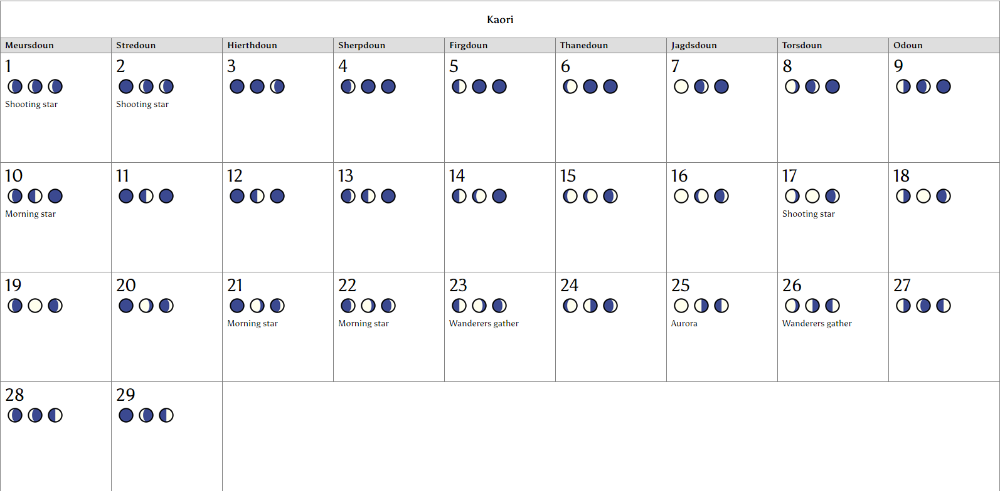 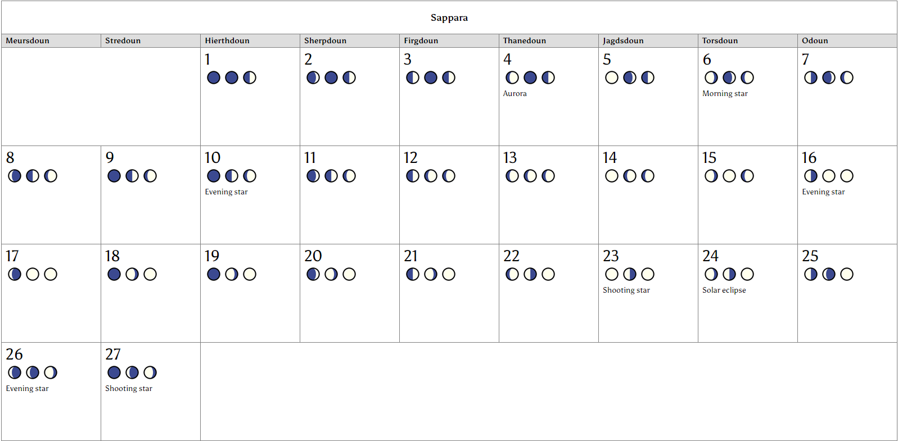 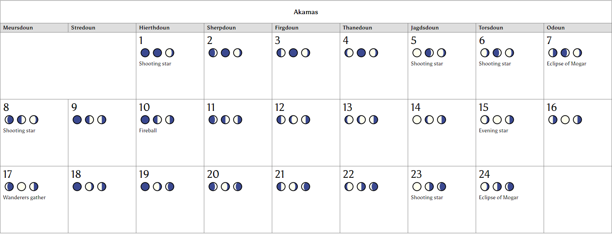 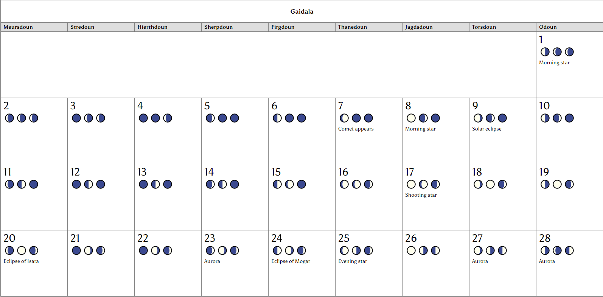
Summer
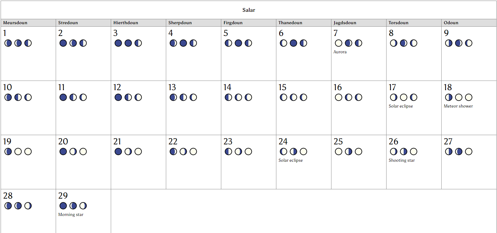 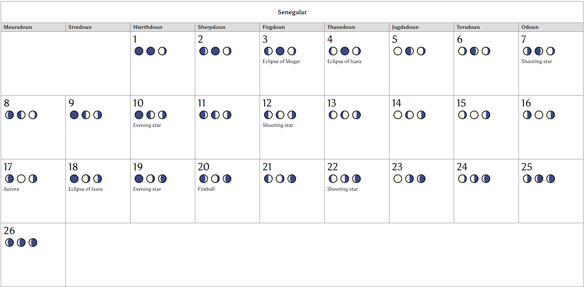 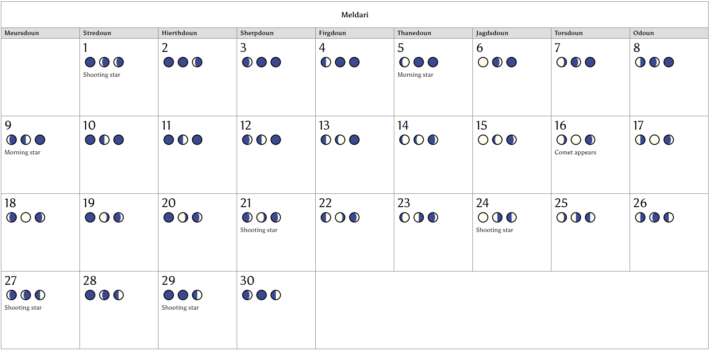 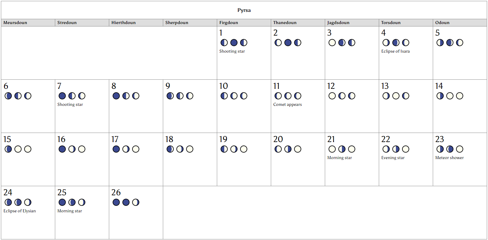 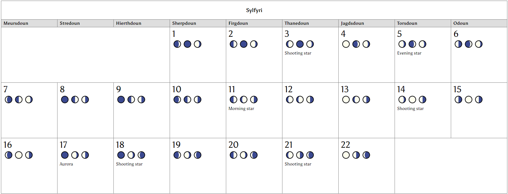
Fall
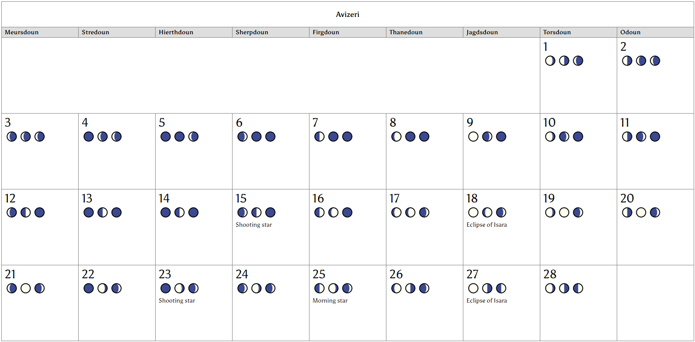 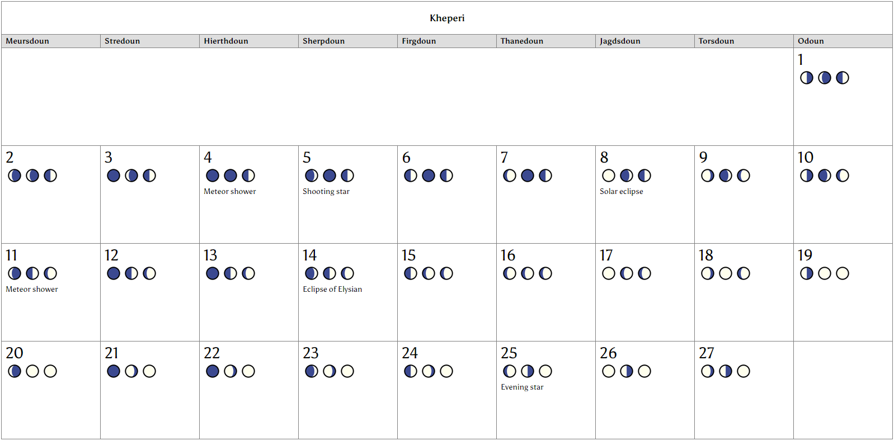 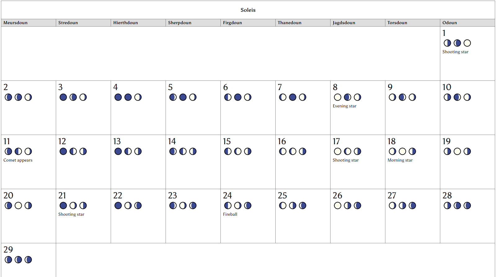 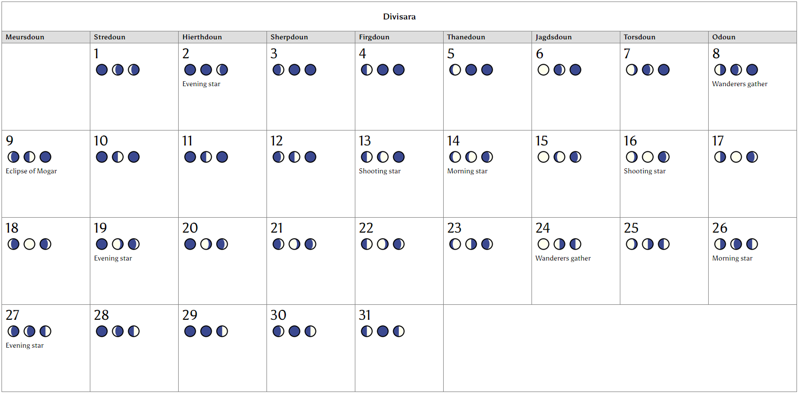
Winter
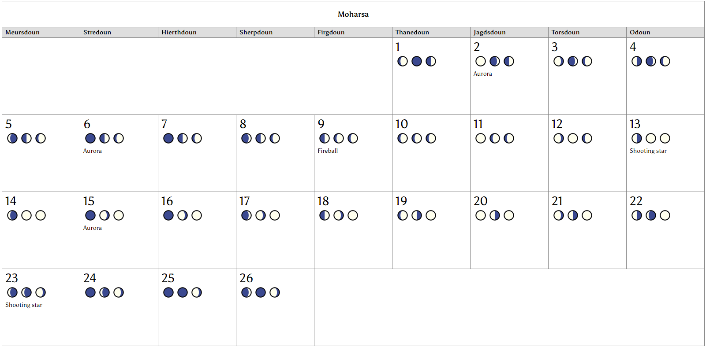 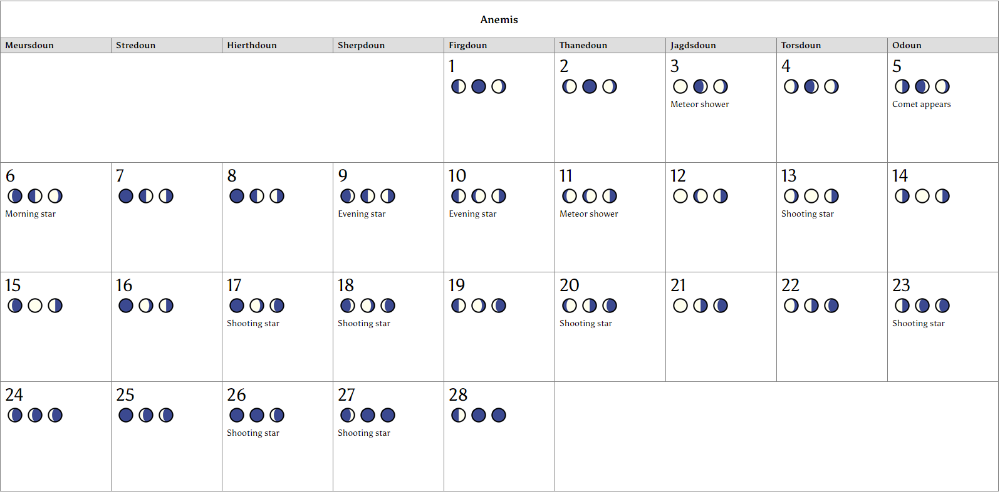 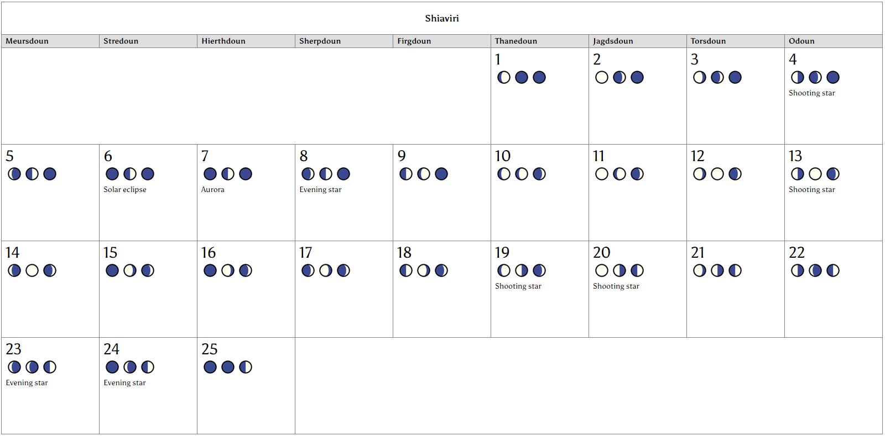 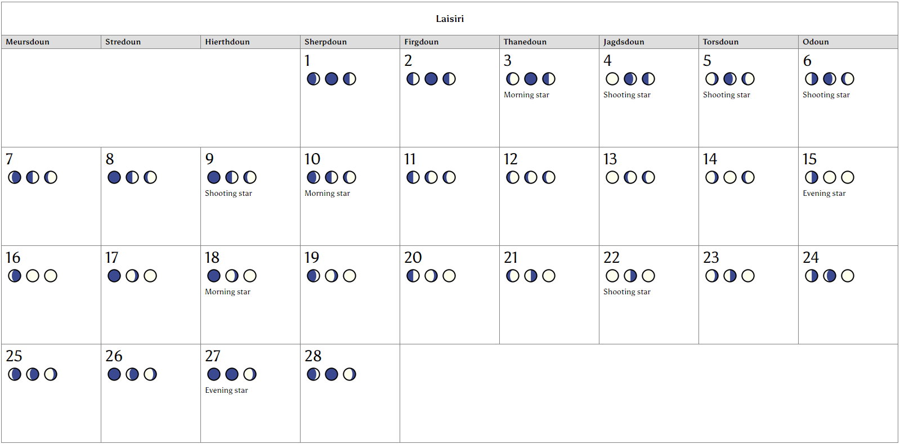 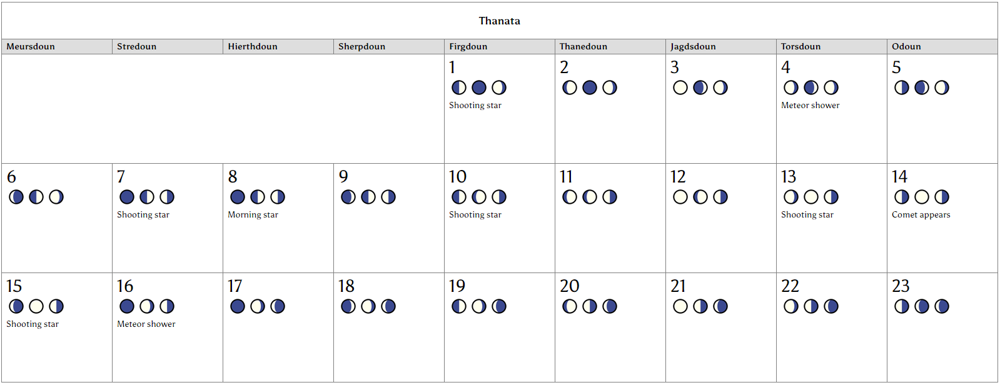
The kingdoms (both elven, dwarven, human, Dynastan, and orcish) contained within the supercontinent of Icara are divided by geographic region. The main regions are the Far North, the Northern Kingdoms, the Western Port, the Eastern Crescent, Golden Road, Southern Kingdoms, and Dynastan Empire. Additionally, there are a number of largely unconnected kingdoms that are not part of the known kingdoms, that have developed independently of the primary kingdoms.
These include:
- The Far North kingdoms, not surprisingly, exist in the most northern reaches of the civilized continent. The Far North Kingdoms are typically called this to differentiate them from the Northern Kingdoms, in that they consist of the kingdoms of the Elder races, while the Northern Kingdoms are dominated by humans.
- The Northern Kingdoms describe the lands south of the Nijierasill river, but above the Tarajahan desert. These kingdoms can include the northernmost kingdoms in the kingdoms, depending on who the speaker is identifying them, and also typically include all the kingdoms and lands that stretch from the western seas and through the sir mountain range to the Forged Lands.
- The kingdoms of the Golden Road describe those that travel through the Tarajahn desert.
- The Eastern Crescent is a large swath of plains, badlands, and valleys that follows the sir mountains range down the eastern side of the continent. Inhabited by various barbarian or nomadic tribes, the Eastern cresent is considered to be dangerous wilderness by the standards of the more civilized coastal and northern kingdoms. However, pockets of safety and security still exist, as a number of hardy kingdoms have forged lasting settlements in the dangerous lands. This includes Drasis, a major trade partner with the coastal and northern kingdoms. Many of the other smaller kingdoms have a loose alliance with the other settlements to address the constant pressure from the nomadic peoples that travel through their lands, as well as to titan, greenblood, or beastman tribes that frequently come down from the mountains to scavenge for food, treasure or slaves.
- The Southern Kingdoms
- The Dynastan Empire spans the vast swamps and jungles of the lower continent. The Dynastan have done much to tame what is a deadly land, building massive high rise stone highways between their major cities that allow safe travel through the dinosaur and monster infested prehistoric jungle, as well as cities with towering walls and spires, which they overlook their terrain. The Dynastan have been engaging in these public work campaigns for decades, and plan to continue until they tame this dangerous land.
- There are a number of hidden kingdoms that are not known by the majority of people of Icara.
Northern Wilds
Aesir Mountains
Geography
The Aesir mountains are the head of a mountain range that span thousands of miles, splitting the continent along its eastern edge from the far north all the way down to the shores of the southern continent. The mountain range is referred by different names as it winds south, but is commonly referred by the civilized populations of Icara as the Aesir mountains collectively, and also to describe the dwarf and titan dominated northern mountains. The elevation is quite a bit above sea level, and includes within its western fringes the riverhead of the Nijierasill, a tremendous upwelling of water that flows west across the continent until it reaches the ocean.
The enormous mountain range is filled with highlands, valleys, and mountain passes, and the climate is sub-artic, ranging from freezing winters to temperate during certain parts of the year. The mountains themselves are still active, despite their age, with tectonic forces slowly shifting spires higher, though the activity is much slower and more predictable in the northern parts of the range. High cliffs, spires, and peaks, as well as numerous caves and chasms are the result. Minor volcanic activity can lead to pockets of much warmer terrain, both above and beneath the surface. Major volcanic eruptions here are rare, as the tectonic pressure is being constantly alleviated by much slower and gradual movement.
Civilization
The great variation in terrain and temperature supports an wide variety of flora and fauna, which in turn lend themselves to a surprising number of densely packed civilizations. The Aesir mountains have a huge number of cave orc, goblin, and ogre tribes packed within the caves and tunnels that run through them, quite a few human and titan tribes roaming the highlands and valleys throughout the range, and the oldest dwarven kingdoms in Icara ruling both. This leads to constant territorial skirmishes, as each group is eager to preserve that which they’ve laid out, and shifting mountain features or population increases are forever causing the need to expand or replace territory.
Mountain dwarves are the densest of the civilized creatures, though there may be many more goblins, orcs and ogres, these population groups tend to be spread over many more tribes, and do not hold the political or military clout of the well-organized dwarven kingdoms. Titan clans, while powerful in their own right, are limited in scope and population, and therefore do not hold much sway outside of their immediate areas of control. Only a fool would travel the hotly contested lands lightly, however, due to the various factions fighting for space and the deadly natural conditions.
Elven Great Forest
Geography
Sitting atop the civilized realms like a crown, the high and wood elven dominated Great Forest spans a huge expanse of territory. The woods are contained by the icy waters of the Alinsaer Sea that surrounds the top of the continent and the vast, swift moving Nijierasill river that cuts between the forest and the human lands beneath it. The forest is bracketed on each side, by the sir mountain range in the east, the great glacial walls of the Mjorn tundra in the west. As the name implies, it is heavily forested throughout, and despite being quite far north and ringed on three sides by bone-chillingly cold lands, it remains a very temperate realm at the heart of the forest, with hot summers and long falls and springs. All manner of vegetation and wildlife can be found within its borders, of both an earthly and unearthly nature.
In the heart of the forest, a massive oak tree towers over the rest of the vegetation, the fae-blessed Worldtree, growing in the even more massive burnt out husk of the sacred tree that grew from the dawn of time until its destruction during the Fourth Age. Once known as the Worldtree, this massive shell of a stump is now more commonly referred to as the Tree of the Goddess. Elven legend states it is this tree that protects the forest from the harsh weather that exists all around the forest, and provides sanctuary for the blessed of Tyra, the elvish goddess of Nature. It supposedly grows in both the physical plane and the fae-realms simultaneously.
Civilizations
It isn’t called the elvish forest ironically. This may be largest known population center for the fae race, the vast majority of them are High elves and Wood elves, with the remaining a mix of Dark, Gray, and Sun elves. There are also always a very small population of accepted diplomats and visitors, from dwarven, human, Dynastan, sauren and rakasha races. These, however, are minimal at best, as the Wood elf population considers the forest a sacred realm and will often kill visitors. If these conflicts escalate, the hosting High elves usually will be quick to remove the offending races. There is rarely anything akin to justice for a non-elf killed within the elvish forest, so few are eager to visit the place.
Beyond the elves, the forest is home to numerous other wild and fae creatures, such as dryads, nymphs, centaurs, satyrs, faeries, sylphs and a host of other elemental or fae creatures. The temperate nature of the forest itself supports a huge host of life, and the magical nature of the land lends to fantastic creatures as well as the mundane. There are multiple natural, sustained portals to the Fae realms within the Elvish forest, as well as multiple fae paths to other parts of the world.
A variety of large elven cities are scattered throughout this realm, but the majority of the population lives in small close knit communities throughout the forest. These may be either high elven or wood elf communities. The high elves rule the cities and civilized realms. The wood elves typically hold sway in the “wilds” of the forest, though almost all the forest would be considered wilds by non-elves.
Mjorn Tundra
Geography
The Mjorn Tundra is a frozen wasteland extending from the northwest corner of the continent deep into the Alinsaer Sea. It is separated from the rest of the continent by a tremendous eastern glacier, considered completely impassable by landlocked and mortal creatures, due not only to the natural dangers of attempting to cross a sub-zero glacial fracture zone with numerous chasms and crevasses, but also due to the dangerous elemental fae, draconic, and other frost based monsters that make the glacier their home. To the northeast, north and west it is surrounded by the Alinsaer Sea, and to the south is the Sea of Shards.
The tundra itself is afflicted by permafrost, with little vegetation growing, and only during the summer months. It is characterized by constant freezing winds, barren, frozen plains and hills, and little to no precipitation (plants grow during the summer as the top layer of permafrost melts, forming lakes and marshlands, and then dies again in the winter months during refreeze.)
Civilizations
There is a very small civilized population here. Frost dwarves, frost giants and other titans races make up the population, all of which tend to live in nomadic groups which live in clans or tribes. There are some larger semi-permanent settlements that have been formed along the coast of the sea of shards, typically populated by dwarven clans who gather there to raid the port kingdoms to the south during the summer months when the Sea of Shards can be more easily traversed. There are also fortresses that multiple clans can gather in during times of war, but these are not typically occupied as there is too little food to support large centralized populations.
Overlook
Geography
The Overlook is the long stretch of highland along the coastline just underneath the Mjorn Tundra and extending to the mouth of the Nijierasill river. Mountainous and rocky, with poor agricultural soil and unforgiving winter temperatures gusting from the glacier and mountains to the north and east, and freezing mist rising from the Sea of Shards make this an inhospitable and harsh place. However, unlike the tundra above it, the seasons do allow for a growing season for hearty crops, and the low temperature allows for natural long storage of meats, cheeses, vegetables, or other forage. The land has been carved by moving glaciers, and the cliffs are high and scarred from many centuries of the frozen waves smashing against them.
Civilization
Overlook is the home of a number of human tribes, and some dwarven settlements that have drifted down from the tundra. Most of the highland people are herders, although fishing is sometimes done during the summer months (mostly by the frost dwarves, who are much more adept at sailing the Sea of Shards.) The relationship between the dwarves and humans is volatile, occasionally they are allies, and occasionally violent foes. For the most part, these are simple people, due to the sparse population and lack of valuable resources along the storm racked coasts.
Northern Kingdoms
The northern kingdoms cover the original kingdoms of men, the oldest civilizations that did not belong to an Elder race.
Avelos Kingdom
Geography
Avelos is the center of a grouping of lands northwest of the Uruthian Empire, running along the river-cut cliffs of the Nijierasill. It branches into various parts of the western coastline as well as east into the Uruthian empire. Avelos is heavily forested, and subsists mostly of rolling hills covered in dense woodlands. As such, it is not ideal for farming compared to the rich plains of its eastern neighbor, but it is still rich in plant and animal life.
Civilization
Avelos is ruled by high elves that have taken it upon themselves to establish a kingdom and aristocracy. Avelos considers itself a point of contact and negotiation between the elven lands and the human lands. They are a primary point of trade between the Northern kingdoms and the elves, with many human nations enjoying the exotic thrill of dealing with elven aristocrats. The elven nation considers them akin to humans for the most part, since they’ve adopted so many human ways. Humans live and trade within the kingdom, and can even be granted knighthood and land, but the title dies with the human, and cannot be passed to their heirs. In this way the Kingdom of Avelos preserves its elvish heritage while still availing itself to the resources of human labor, soldiers, and loyalty.
Deurgan Kingdom
Geography
The kingdom of Deurgan is predominantly plains, hills and mountains. It has large forests at one point, but its forested area has been overhunted and over logged, and they are not healthy. The kingdom otherwise shares the features of other northern kingdoms.
Civilization
Deurgan is predominantly human, but has a large contingent of nonhumans as well (dwarves, rakasha, Dynastan, orcs). The kingdom itself is dying, as much of its trade used to flow from the Eastern crescent upward through the elven and dwarven empires. However, Resa has turned inwards, restricting trade, and the Skelur oligarchy has turned to trading directly through the Eastern crescent to try to ensure its own survival in the wake of the collapse of the Entarian kingdom. The area is restless, and has become a haven for mercenaries operating across the north.
Entarian Frontier
Geography
The Entarian frontier is tucked against the sir mountains to the east and the Nijierasill river to the north. To the west is the Deurgan kingdoms and to the south is the Eastern Crescent. The land itself, much like Deurgan, is worn and overworked, though it was once a bountiful land rich in resources.
Civilization
Once the kingdom of Entaria, this land was a rich trading partner of the elven and dwarven kingdoms to the north, taking advantage of the single traversable land bridge over the Nijierasill that didn’t involve travelling the dangerous sir mountain range. Unfortunately, the capital cities were sacked by an orcish army from the Forged Lands, and the resulting series of raids from numerous barbarian tribes have left the land little more than a handful of fortresses run by the merchants of the Skelur oligarchy. Without being able to defend the roads, trade has been deadened considerably, with much of the traffic now headed from the Eastern Crescent to Tarajah along the Silk Road, and then north by the Golden Road up to the Uruthian Empire. These lands are overrun with barbarian tribes and smugglers looking to pass contraband through to the Elven forest and dwarven kingdoms
Resa
Geography
Resa is a region of multiple landscapes. Large mountain ranges, deeps woods, plains and rivers make up the common features of this large kingdom. It is ringed by the Ukerian Frontier to the north and west, and Tarajahan desert to the southwest, and the edges of the eastern crescent to the south. To the east is the kingdom of Deurgan.
Civilization
The ruling king calls his kingdom the empire of Resa, but it does match the breadth or span of lands commonly considered empires, such as the Uruthian empire to the west and the Dynastan empire far to the south. However, it is an expansive kingdom, and it does include another entire kingdom (Djomenheim) of dwarves that was subsumed and annexed from the Ukerian UnderEarth kingdoms. Beyond them, the kingdom of Resa is a kingdom of humans. Resa is united under one king and one god, and has little tolerance for interference from other ruling influences.
Oligarchy of Tauroch
Geography
A smaller kingdom on the edges of the Uruthian empire, this land shares the low elevations, wooded areas and plains of its northern neighbor.
Civilization
Originally a barony that broke away from the Uruthian empire, Tauroch reinvented itself as an oligarchy under the rule of powerful merchant houses to help protect against encroachment by the Kingdom of the Three Rings. Tauroch is more diverse than its neighbors, though it is still predominantly human. However, it is not uncommon to see elves, dwarves, rakasha, Dynastan, sauren, or orcs. Additionally, orcish tribes are more likely to be found traveling in this area, since the kingdom doesn’t exercise the same control within its borders that the surrounding kingdoms do, and it is near frontier lands in which nomadic tribes frequently travel.
Kingdom of the Three Rings
Geography
The kingdom of the Three Rings exists just to the southeast of the Uruthian empire. This land shares the low elevations, wooded areas and plains of its northern neighbor.
Civilization
Once a series of baronies with ties to the empire, four ambitious kingdoms broke away as a united nation. These human nations slowly pulled apart into four separate kingdoms, and the 3 smaller kingdoms, the Baronies of Suldred, Morakar, and Antioch, became theocracies reunited under the rule of the priesthood of Bane. The population is primarily human, though some elves and orcish live or pass within their borders.
Uruthian Empire
Geography
The empire of Uruth is a large area of land centralized above the Tarajahan desert. It primarily consists of plains below 150 feet in elevation, with small hills, woodlands and forested area. It is very temperate, and contains multiple rivers flowing from the Nijierasill that provides both water for seasonal plant life and abundant freshwater fish and marine animals. The weather is seasonal, with cold winters, cool falls, warm springs and hot summers, lending itself to a wide range of natural plants and a wide variety of seasonal crops.
Civilizations
The rich natural resources of this land lead to it to becoming a densely populated, highly developed center of civilization. It is believed to have been one of the first human civilizations and kingdoms, part of the Metoc kingdoms formed by the Elder races. Throughout the age of blood, these human kingdom vied for control, until a single king eventually consolidated all of the surrounding kingdoms into a mighty human empire during the Third Age, a kingdom that has lasted in one form or another until today. Multiple noble families have held power and claimed lineage dating back to the empires founder, and these noble houses compete for power and land amongst each other. The vast majority of the citizens of the Uruthian empire are human, there are a large number of dwarven, elven and rakasha citizens or communities. To a smaller degree, there are tribes of orcs, wood elves living in the area, but the Uruthian Empire is capable of boasting huge armies of trained warriors from the noble houses, allowing relatively strong policing of internal threats. The Golden Road runs into the Uruthian Empire, and they export goods and services to the kingdoms to the south of them through it.
Coral Coast
Mist Isles
Geography
Where the Nijierasill rushes into the ocean, there exists a large archipelago, containing hundreds of islands in a large freshwater sea fed by the torrential river. The northernmost amongst these are known as the Mist Isles, due to the fog that hangs over them at all times, where the much warmer freshwater meets the Sea of Shards, creating an estuaries that is used as a breeding ground for numerous fish and sea creatures. The mountainous isles are hounded by the cold winds of the north, and can be treacherous to navigate through for those who don’t know where the currents lead, and which shorelines are rocky death traps and which are safe coves.
Civilization
The northern isles are the home to stoic human fishermen and sailors, as well as small frost dwarven communities. For the most part, these communities are divided by clans, which form alliances to gather enough warriors when needed for warfare. Despite the lack of a strong organization, these hearty people have managed to retain independence from the strong kingdoms around them.
Stormhead Frontier
Geography
The Stormhead Frontier is the farthest northwest corner of the mainland underneath the mouth of the Nijierasill, at the tip of the Aleria coast. To the west are the Shimmering Isles, to the east is the kingdoms of Avelos, and to the south is the kingdom of Calypso. The lands of the Stormhead frontier are temperate lands with heavy rainfall and rich soils. Thick green forests and lush coastal meadows are the result.
Civilization
The kingdoms of Avelos and Calypso have longstanding disputes regarding the ownership of the Stormhead Frontier, with neither able to establish a firm hold upon the rugged lands but neither willing to cede its claim. Unaligned tribes of wood elves also live within these lands, and the combined high elf and wood elf populations are popular targets for raiding parties from the Mjorn Tundra and Overlook who are seeking not wealth but fame and reputation for bleeding ancient racial foes, but perfectly willing to sack the settlements of any human frontier settlements they come across. As a result, there are few undefended settlements and not much agriculture, despite the rich land.
Shimmering Isles
Geography
The shimmering isles exist in the middle of the Nijierasill archipelago, a large gathering of islands in a freshwater sea. Because of the abundance of fresh, usable water, great kelp forests grow throughout the islands, and all of the islands are incredibly lush, with massive forests growing on the islands. The weather and temperature is unnaturally tropical…much closer to temperatures and flora and fauna you would find near the equator, in fact, it is warmer in this small subsection of ocean than it is to the south and west. This differentiation is part of what keeps the Mist Isles habitable compared to the Mjorn Tundra and Overlook….the heat moderates the chill somewhat on these nearby islands. There is some amount of argument whether the warmth is due to underground volcanic activity superheating parts of the ocean alleviating the general chill of the rest of the sea, or whether it is magical in nature. The current of the warm water is pushed south, along the coastline and away from the Sea of Shards. The mainland to the east of the Shimmering Isles and Sunset Isles is known as the Aleria Coast.
Civilization
The Shimmering Isles is home to a fair number of island peoples, both human, elven, orcish, dwarven and rakasha. There are a number of grey elf civilizations here, as well as non-traditional cultures of sea dwelling creatures such as mermen. Because of the large amount of produced food here, several neighboring kingdoms have farming colonies, and piracy is not uncommon, both from the north, south, and locally.
Sunset Isles
Geography
The sunset isles mark the last vestiges of the unnatural freshwater torrent funneling from the mainland. Many lowset, swampy islands exist in the series of tropical mangroves. The unnatural warmth of the Shimmering Isles begins to fade to the vast chill of the ocean here.
Civilization
The Sunset Isles have fewer groups then the Shimmering Isles, but still quite a few tribes, clans, and settlers that live throughout them, mostly subsets of the same species that have been pushed out of the freshwater seas. There is also a unique subset of tekulti that live in the swampy sections of the Sunset Isles, cultural variants of their southern cousins.
Calypso
Geography
The kingdom of Calypso sits along the Alerian coast, a vast range of ports that service the Shimmering and Sunset Isles. The lands themselves tend to be rocky, acidic, and not very fertile near the Dragonspine mountains that form a natural barrier between the coastline and the Tarajahan desert on its eastern borders. This means despite the large rainfall, the Alerian coast remains relatively sparse, with the exception of some of the coastal meadows near certain parts of the coast with most of its agricultural needs being provided by the islands near them and the large grain producing kingdoms to the south.
Civilization
An empire formed of traders, pirates and fishermen, shipping trade goods overland to the Uruth empire and Avelos or to southern ports along the Coral Coast, this wide ranging and powerful conglomerate of guilds, navies, and warlords is multicultural with many competing interests. Calypso was held loosely in check for generations under a clan of pirate kings, but their deposal at the hands of a sorcerer priest of Loki has led to constant power struggles in the kingdom.
Andarii
Geography
Andarii is a port kingdom at the end of the silk road, a long trade route extending from the western Coral Coast to the eastern city of Drasis, which passes through the Dragonspine Mountains at Storm Canyon, Tarajah, and then into in the Eastern Crescent. The lands of Andarii is similar to Calypso, with coastal lands giving way to sparse badlands near the Dragonspine Mountains.
Civilization
Andarii is a merchant city, the vast majority of the population is transient. The most powerful guilds of Andarii act as the true masters of the city, though they do have a governor that handles the majority of the day to day running of the kingdom.
Aldoreth
Geography
Aldoreth is farther south along the Coral Coast, between the port city of Andarii and the Dynastan port city of Vyutal. It is along the Dragonspine mountains, which begins to turn back inland in the kingdom. The land is fertile, and along with the temperate climate, is ideal to grow a large amount of grain. The coast is a high cliffside, which
Civilization
Aldoreth is primarily human kingdom, though the Under earth mountain dwarf kingdom of Khorgeth spans from the Dragonspine mountains to the coastal cliffside underneath Aldoreth. Aldoreth is an agricultural kingdom, with tribes of orcs and gnolls that roam on the outskirts away from the main roads. The kingdom is strongly xenophobic, but maintains diplomatic relations so it can continue to trade its agriculture.
Kingdoms along the Golden Road
Tarajah
Geography
The kingdom of Tarajah is self contained within the walls of one massive city. The city is located within the middle of the Tarajahan desert, which bears its name. Tarajah is built upon the remains of its previous ruins, the much larger city of the same name built by the sorcerer king Magus. Most of the city remains uncivilized and in ruins, a dangerous maze miles wide of destroyed buildings, underground tunnels, and abandoned keeps that contain all manner of monsters and hideouts for criminals, . Tarajah is a land of a great amount of magic – many ley lines converge and run through the city, making the city a favored destination for seekers of power. For reasons unknown to modern scholars, Tarajah’s night and day run at different times than the rest of the region – it is always night when it is day out in the desert, and day during the night. Everyone agrees that sorcery is involved, but what manner of magic could do such a thing and when it was done is unknown.
Civilization
Tarajah is the most densely populated city in Icara, a city of widely divergent cultures – the city has stayed true to its founding principles, that all creatures are welcome. Large populations of many monstrous races, including titans, giants, dragons, orcs, goblins, and gnolls legally live and work here within the city proper, or illegally dwell in the back alleys as tribes. There are also fey, demonic, and astral creatures from other realms, sustained here by the immense magical output. Temples to every major religion can be found within Tarajah’s massive city walls, and adventurers and merchants pour in from all corners of Icara to see the sights, ply their trades or see combat in the great Coliseum. With so many ancient enemies in one place, violent confrontation is inevitable, and war within the walls often seems unavoidable. However, Tarajah’s streets are patrolled by some of the most seasoned warriors and mages in Icara, and their rulers are almost always powerful individuals more at home on the battlefield than a negotiating table. Cities with diplomatic relations or merchant ties with the city have learned long ago that compliance is the best tactic to employ with Tarajahan envoys, whether they are the legal representatives of the city or the powerful guilds contained within.
Kannis
Kannis lies south of the Tarajahan desert, in a huge mountain valley nestled in the southern Dragonspine mountains. There is a good amount of rainfall in these mountains due to the elevation, and the valley intersperses heavily wooded pastures with rocky hills.
The civilized portion of Kannis is populated by monotheistic kingdom of humans. They are in heavy conflict with the goblin, orc, and ogre tribes that live in the mountains and hills surrounding the kingdom. Kannis has a well developed military due to constant conflict with both them, and the neighboring kingdom of Shaldar.
Shaldar
A barren, rocky valley that has extensive stretches of brushland with small patches of rich farmland, Shaldar contains a high number of fey and arcane creatures due to permanent twisting of the landscape from the Fourth Age. The hills and mountains of Shaldar are rich in mineral resources, but both farming and mining are dangerous endeavors, as the land is far from tamed.
The human population of Shaldar lives within walled cities, as very little of the kingdom is considered safe. The only exception to this is a few stretches between the twin capital cities that house the royal bloodlines, two distinct houses springing from a common ancestor that alternate or split the rule of Shaldar. The population itself thrives on mining colony expeditions or trade through Cobar, a valuable trade city along the Golden Road that Kannis and Shaldar have been fighting over for a few decades.
Perchin
The kingdom of Perchin, also called the “Mouth of the Dragonspine”, is a kingdom that revolves around a thriving trade city under the control of hill and mountain dwarf clans. Built at the head of the mountain pass leading into the Golden Road, it oversees the shipment of valuable trade goods from numerous southern kingdoms along the land route north.
Half of the territory of the Perchin kingdom is the jagged mountains of the Dragonspine, and the other half are the flowing plains of the southern kingdoms. Both sets of terrain can be barren, but in different ways, one a set of windblasted peaks that contain sparse vegetation and animal life, and the other an endless rolling ocean of brush, grass vegetation and the occasional beast.
Perchin attracts visitors from the around Icara for a number of reasons. Its centralized location along the northern borders of what are known as the Southern kingdoms make it valuable as a trade city, and its reputation as a highly defensible bulwark of stability make it attractive for those seeking security in what is often a violent land. It is also famous for being that city the dreaded Dynastan march was stopped at, and housing the site of an ascension to godhood, (the destroyed battlements upon which Sylith ascended.) For these reasons it attracts merchants, townspeople and tourists in large numbers, including a steady stream of Dynastan pilgrims.
While initially founded by humans, during the fifth age the dwarven kingdom of Kardonach slowly gathered control of the kingdom, first by stationing a large force of soldiers there during the successive Dynastan campaigns following Sylith’s ascension, and then by gradually taking control of the city financially and economically. By the time a dwarven chancellor was “elected”, few could even remember a time when humans held real influence in the city. The dwarven rulers care most about the city of Perchin proper, and controlling the mountainous terrain that leads back to their home kingdom. However, they understand the fiscal value of policing the southern plains as well, and do what they can to clear it of bandits and military threats to allow the unfettered travel of the merchants that make them rich.
Thrak’kalin
Thrak’kalin stretches deep into the Tarajahan desert, contains the Dragontail mountains, and the forests leading into the Eastern crescent (known as Eden’s gate). Fabled to be the last remnants of Tarajah’s previous great garden, Eden’s gate is an incredibly lush and magical forest tended by the high priests of Magus.
Thrak’kalin has a vast array of different civilizations, due both to its proximity to Tarajah as well as the wide variety of geographic terrain within the area. The desert dunes hold a number of desert nomads, who travel from oasis to oasis, making their living either guiding the merchants and travelers to the civilized cities through the dangers of the desert, or by robbing them. In addition, there are villages of medusae, known as the Madear, hostile to all outsiders, scattered throughout the desert. The Dragontail mountains are the home to a variety of tribes of orcs, ogres, and goblin tribes, and Eden’s gate has a number of fae creatures and wood elf tribes.
This is to not even begin talking of the human trade cities that have been formed along this route, including Traubadeen, built into a pass through Dragontail mountains, a major trade city along the Silk road.
Eastern Crescent
Colandar Republic
Colander is primarily grassy plainsland, interspersed with a few hilly and forested regions, stretching from outside the Tarajahn desert toward the Aesir mountains. The vegetation in this part of the Eastern Crescent is basically brushland, with hot summers and cold winters.
The Colander republic is a collection of noble houses, merchants houses, and tribes that live in the Colander. The republic was formed due to the impossibility for a strong kingdom to form, not from any other high-minded ideal. Colander has been a much traveled across land, both from the barbarians plainsmen and orcish herders that have long made this land their home, to the many farmers and ranchers attempting to eke a living out of the mediocre soil. The land is under constant threat of attack, but since no one group was strong enough to consolidate the land under a single banner, they formed a coalition of mutual defense, for the different city states, kingdoms, and tribes that choose to participate in the republic. These are typically human, with a smattering of representation from elven, dwarven, and orcish senators. Senators themselves can be little more than delegates, or they can be the rulers of the cities or tribes they represent. Drasis is technically a member of this republic, but they are large and independent enough that they do not always bend to the decrees or consult thier fellow senators prior to making decisions.
Tableau
A major trading city at the edge of the Tarajahn desert, this is where the people of the desert meet with the traders of the crescent. Many times, caravans will disembark or switch guildsmen here, to prevent trade wars or to keep from going outside of their territory.
Kharikas
A grouping of powerful warlord cities from the Abru tribes, fearsome human horsemen and a traditional nomadic group, many of their descendants have settled into cities throughout the Eastern Crescent.
Xhalan
A city near the badlands at the edge of the Tarajahn desert, this place is an unofficial trade city for those who would not do business in the more civilized Tableau. Called the City of Blades, few enter this place unarmed or unprepared for trouble.
Enbuset
A large trade city heading up through the
Geratz
The forest city along the Silk Road, which stands as the last area of of peaceful oasis prior to
Alundale
Founded as a small trade post in the heart of the Burning Plains, this city has swelled to be a major trade hub for the human horselords of the Abru tribes. This city has multiple districts that have grown into each other, each defended by their own combination of stone, wooden, or spiked walls, and since the horselords are as prone to make war on each other as they are to set up a common defense, the inhabitants of the city must be prepared to flee to the inner districts if a district is sacked or overrun by a marauding orc, gnoll or horseman tribe. As a result, even for the size of the city the architecture is generally unrefined and feels temporary, and the streets are made of dirt in all but the innermost districts.
Drasis
The kingdom of Drasis lays in the far southeastern corner of the South Eastern crescent, an expansive kingdom that stretches for hundreds of miles along the sir mountains. The kingdom considers its territory to include the mountains that run along the plains and forests claimed by the kingdom. The mountain stretches from the frozen cliffs of the northern territories, branching around a dry, windblasted basin known as the Vuai Desert. Valuable mines line the northern ridges of the desert lands. The land outside of the basin is on the hotter side of temperate, with muggy days and nights, and is so conducive to the jungle dwelling Dynastan Empire that they have maintained the slightest fingerhold upon the southern tip of the kingdom.
The north contains numerous thick forests, and the rulers of Drasis have done a good job of controlling the deforestation of the area where they believe it in their best interest, while the southern regions have resisted excessive civilization due to the dangerous nature of the competing cultures and peoples in that area.
Drasis both the kingdom and capital city of this land. The capital city is known as “The City of Lights”. Initially this was due to the cities affiliation with knowledge and wisdom during the Age of Reason. However, over time, the term has taken a more literal turn, as the city has become famous for its ornate streetlamps, and the many lights within the cities shops, homes and public centers.
Technically a member of the Colander Republic, the Kingdom of Drasis is a strong military presence in the Eastern Crescent, as well as a center for culture, fashion, and art. It ships valuable and exotic spices east along the Silk Road, to be traded both in Tarajah, the northern kingdoms, and the coastal empires. The trade in salt, spice, dyes and the like have made them incredibly wealthy, and finance their military and cultural pursuits. This is what allowed the city to stonewall the second Dynastan legion during the Fifth Age, and what allows them to take a hard stand against the various orcish, beastman, and titan tribes that wander the eastern plains. They keep strong forts along both major warfronts, which allow calvary to be dispatched with lightning speed into the frontier, and the dangerous independent orders of the First, Second, Third and Fourth Watchtowers provide an additional shield against their enemies. This allows the various townships and cities within the bounds of these protective cities a certain amount of protection. There are still the occasional raid - but they are not frequent, as the orcs have easier targets both north and south of Drasis and the mountain tribes have a long journey from the mountains to strike one of the inner cities - making it unlikely a warband can escape a retaliatory strike from Drasis calvary, even if they make it there undetected.
For this reason, the merchant houses of the kingdom of Drasis feel secure in aggressively competing amongst themselves for money and political clout. While technically a kingdom, tradition has long held the position of king as to be the commander of armies and chief strategist on the field, and the upholder of laws in the towns. In other words, the king sees to the security of the land - the people are responsible to see to their own prosperity. And since the taxes levied upon the merchant houses are always sufficient to fund the armies and guardsmen of the kingdom, the king sees little reason to object to how private land is purchased or sold, how business is conducted between his citizen wards and the world at large. It is an ideal environment for capitalists and wealthy aristocratic families, much less ideal for the poorer citizens and the travelers with no claim to a nation that come through the land. The wealthy tend to live in extreme luxury - plumbing is common in well to do sections of the city, along with theatre, dining, gambling, and art houses that are envied across Icara. The gladiatorial arena in the capitol city, just as Tarajah, pits free warriors against exotic beasts and deadly challenges - and those who have a taste for more illicit combat need only to travel south to Aretium, where the Dynastans still allow enslaved fighters to fight for their lives or freedom, in accordance with Dynastan law. The common exports of salt, spice, steel and silk travel along the major trade routes northwest to major trading ports in Tarajah, Uruthia, and Andarii.
While slavery is technically illegal in Drasis, private grounds are not thoroughly searched without cause, and several unscrupulous houses are rumored to do brisk business with the Dynastan merchant cities to the south. Similarly, the smuggling operations between the various kingdoms run the gamut of black market operations, from trade of rare and exotic items, to teaching and propagating forbidden magics or religions, to simple run of the mill tariff dodging schemes.
Reknowned Merchant Houses of Drasis
House Musilia: Owners of many of the salt mines through Salidale, and have branched to fine work in steel and iron and the export of masonry as their primary mines have been plumbed out. A well respected family, with a keenly developed sense of enterprise and innovation. Still run by the descendants of the initial founding family, and members can be found throughout the cities of Drasis. House Bellona: Farmers, weavers and herbalists, House Bellona owns many mulberry orchards, silk and cotton farms throughout Drasis, especially near Haleshire and Leceron. The artisans of House Bellona then spin both into clothing and linen, ranging from the fabulous, artistic and decadently expensive to practical, comfortable and affordable. While there are many Drasis weavers, the dyes, techniques, and quality of House Bellona is considered unmatched by many. House Tefari: Aggressively profit driven, House Tefari has their hands in many businesses, from salt and spice mining to allocating mercenaries to be used throughout the Colander Republic. They are always on the lookout for an unexploited market that they can use for their own good, and have on more than one occasion bought out a business rival, or exploited market shares that have opened as a result of a rival's tragedy. Several prominent members in this house have been caught running slaves to Dynastan flesh merchants - House Tefari has dutifully offered them up to the king's justice, and publicly admonishes those who would follow in their footsteps. House Agreigor: Agreigor owns a number of art and culture houses throughout Drasis, in addition to gambling dens and brothels in a number of other merchant cities. Agreigor is heavily in the market of exporting Drasis itself - often carrying the goods of rival houses to farflung corners of Icara. They employ and recruit mercenaries, travelers, peddlers and actors, to create an authentic experience in non-authentic Drasis locations.
ROYAL BLOODLINE OF DRASIS
The bloodline of Drasis extends from ancient
DRASIS - CITY OF LIGHTS
The largest city in the kingdom (and for hundreds of miles in any direction), Drasis is a beautiful city - one crafted to the high Trading in The City of Lights
Kingdom of Muldestan
The hill dwarf kingdom of Muldestan rests in the low-lying hills above Drasis.
Nomad Tribes of the Eastern Crescent
Black Orcs of the Crescent
Hunters and herders, marauders and conquers, the Grul orcs of the crescent are a potent force to be reckoned with by the civilized lands that they travel through. Named so because they are seasonal nomads that roam from the Entrarian Frontier in the north during the blazing southern summers and to the El Dorado Kingdoms in the south to escape the harsh northern winters, the orcs migrate along a crescent trail. This trail is loosely defined as the Vargr or Vargren Warpath. By staying constantly on the move, they continuously move into land with replenished wildlife and new growth, and also take advantage of seasonal harvests by human settlers throughout the kingdoms. They also can avoid specific reprisal from the stronger kingdoms within the crescent, though it is not uncommon for another orcish clan with a slightly different seasonal pattern to absorb the brunt of militia or armies vengeance.
The orcs themselves gather in clans, a series of interrelated families lead by a strong leader. Crescent orcish nomads culture is largely driven by the shifting loyalties within these clans, a careful balancing of multiple allegiances between factions within the tribe and the tribe itself. Common tribal factions include splits between the beastmasters who ride on vargr, (huge wolves from the northern kingdoms that are capable of carrying an orc) and scouts and runners that traditionally run on foot, factions along bloodlines, or between remnants of previous tribes that were absorbed or conquered and the current ruling tribe. The religion of the orcs is generally a hodgepodge of worship and superstitions of both Malor and Grkaz r, with Skarik making an occasional appearance due to influence of orcs from the Forged Lands.Because many clans share a similar cultural foundation along the crescent, it is not uncommon for the orcs to roll up into larger groups or clans, either due to intermarriage within the clan, or as a temporary alliance to face a greater threat. These alliances last however long the clan leaders can hold them - which typically is right up until resources get squeezed.
Wolfriders and Bloodrunners
Orcs of the Eastern Crescent primarily travel by foot. Orcs learn to run shortly after they learn to walk, and learn to carry their belongings shortly after. Because of this, they develop great stamina - orcs are able to run in great bursts of speed for hunting, or in loping gaits for hours. While some orcs occasionally will steal horses, or oxen, these things have little use in their society - they will run them ragged, then kill and eat them. In fact, it is common practice that orcs will not fall asleep before killing stolen mounts, as they fear the creatures breaking free and leading enemies back to them, or being stolen in the night. Better to ride them as far as they can go then feast on the animal before it can be taken. The orcish nomads are very public about their disdain for the domesticated creatures the human use, servile beasts that will obey any master. Truthfully, however, orcish attempts to domesticate animals fare poorly because of constant inner clan warfare, and the fact that typical animals are terrified of orcs on an instinctual level.
However, some beasts survive alongside orchish tribes quite well. The brutish fae normally called "dire" beasts by the humans. Large wild dire boars the size of small cattle, commonly known as Tusken, are known to be driven in great packs along nomad travel routes. Far from domesticated, the fearsome beasts root up and eat everything they can, but grow quickly and provide a good source of meat for the clans. Through a combination of chasing weaker boars and inciting large ones to stampede, tribes have mastered the art of moving their pigs along with them. The hardy creatures need little in care, and protect themselves well. Orcs use these for food, as well as thick hide. Orcs have also been known to drive wild shard oxen or other pack creatures along in a similar fashion where they can, though often with less success, and they are keen to trade them out to humans for good steel or iron.
Orcish beastmasters are even more attenuated with the dire beasts, and will forge strong bonds that border on blood kinship with them. These orcs are often alpha hunters and predators amongst the orcish tribe. The beastmasters of the Crescent clans most commonly bond with the vicious vargr, which they use them to ride, hunt, scout, and fight. When bonded, they tend to pick up pack habits, and consider themselves wolves, traveling with, resting, and sleeping along with their dire pack. They are called Wolfriders by the humans and wargriders by the elves and dwarves, They call themselves vargren, and hunt at dusk and dawn, using heavy orcish bows they craft from oaken branches. These orcs have tight-knit fraternity that can go beyond blood lines, and they will often meet with the wolves of another clan to trade information and stories, far from the eyes of their respective clans, occasionally even while actively at war with that tribe.
Becoming a vargren is technically open to all orcs, but in reality it is closer to hereditary, for the ways of a beastmaster generally must be taught, and often requires considerable assistance from a skilled veteran. An orc becomes a vargren by traveling to a wild vargr pack, often the same pack the orcish clan has visited for generations, and become acclimated to it. The vargr will accept or refuse the orc into their ranks, sorting accepted newcomers into their hierarchy and driving away rejected orcs, typically by viciously mauling or even killing them. The mentors of potential beastmasters will spend several weeks attempting to strengthen the bond of a candidate with the vargr home pack before they finally send him to his greatest test - selecting a cub, which will eventually become the orcs mount and companion. It is rare for an older dire wolf to bond with an orc. Vargren typically feel great kinship for thier beast, and while some will outlive thier vargr and select another on it's death, the death of a vargr companion will frequently break a vargren, dooming it to wander away from the pack seeking death.
Occasionally an orcish beastmaster will bond with a non-vargr, though it is rare. Unmentored orcs with the gift sometimes bond with Tusken, and become invaluable herdsmen for the tribe, having greater control and understanding of their herds. Solitary orcs will sometimes bond with non-pack animals, such as dire bears (the orcs call them grzarboggen - they typically abandon the tribe.) Some fierce orcs have even been known to bond with the mighty dragyr (dragoth dragonkin). These beastmasters rise to great prominence and positions of leadership, and generally become great warlords or clan leaders.
The majority of orcs show no skill in beastmastery, or are rejected by the vargr, and will typically will become bloodrunners. Bloodrunners travel by foot - running to travel, hunt, and fight. From a very young age, orcs learn to move quickly, silently, tirelessly. They must become swift enough to travel before they are too old and big to carry, because an orc who cannot either run or ride fast enough to travel with the clan cannot continue with them. Orcs who cannot run with the clan, due to injury, infirmary, or other circumstance are typically killed, as from a practical standpoint an orc left behind could join a rival clan and betray clan secrets, or form their own clan. Occasionally, however, the orcs will simply abandon those, if they feel as they have earned the honor to die alone.
Gnoll
Southern Kingdoms
Kingdom of Crubazar
Crubazar is northwest of the Eldorado kingdoms, and shares many of their features, including many mountains and small concentrations of arable land. Much of Crubazar is desert, but it has less tropical land then its southern cousin.
Crubazar is a theocracy of Bane, a predominantly human kingdom that gave itself over to the Lord of the Void during the waning of the Fifth Age to retake the lands of their ancestors from the bloodied Dynastan Empire and break the chains of bondage forced on their kin. Dark bloodthirsty warriors of Bane called the Jackals of Crubazar fought a bloody guerrilla war in the land, until the empire fell back. Consolidating its hold on the land, Bane’s priests took the abandoned Dynastan slaves and forced them to work building a new kingdom for the dark god. The faithful elite live a life of luxury amongst the rich gardens in the major cities, while the majority toil in dusty farmlands ploughed into dying earth. However, the fury of the unholy berserkers of Crubazar has not abated, and this land is firmly in hand by its human masters.
Eldaro Kingdoms
A large tract of land in the far south defined by weathered mountain terrain, plateaus, and desert and brushland in the north and semi tropical terrain in the south, the Eldaro kingdoms are a study in extremes. Torrential rains frequent some valley and mountain locations, creating dense jungle, while others valleys or mountains are typically dry (a disparity that can appear just on the other side of a mountain peak. The hard clay soil and sunbaked land doesn’t accept the rain even when it gets it, creating dangerous flash floods during the wettest seasons. While there are numerous rivers that flow to the west and south, they are concentrated across a small area of land, leaving most of the abundant rainfall and arable land in a small fraction of the total landmass.
Eldaro has been marked by a steady stream of annexation and conquering. Initially settled by Sun Elves, these lands had great kingdoms developed in the Second Age, before orcish and human aggression drove them further south. Eventually, the humans created kingdoms, often creating capitals in the abandoned cities of the Sun Elves. The ruins remaining from that time are a strange mix of elegant elven design and practical human fortifications. The human settlements were even more pronounced during the Third Age, and was relatively unscathed during the Age of Apocalypse, losing scarcely more than half of its human population to the wars between the mage kings. Unfortunately, they were less prepared to handle the coming of the Dynastan war machine, and the entire human population was scattered, enslaved, or murdered by the armies of the Empire during the Fifth Age, who began building cities and highways across the land. As the tide turned and the Dynastans began ceding back land to the northern kingdoms, they attempted to maintain control of Eldaro by publicly disavowing the lands but privately granting huge estates of land to loyal non-Dynastan, including many rakasha scouts and soldiers, as well as granting some to Sun Elves interested in returning to their long abandoned ancestral lands. However, descendants of the nobles of Third and Fourth Age are very interested in reacquiring their lands, and have sought to do so through political pressure, repurchase or outright force. While the Empire makes effort to support their puppet governments, doing so without violating their treaties often requires a political nuance that the heavy handed Empire finds difficult.
Monacan Badlands
Alternately called the Monacan frontier, this wide, rugged land to the southeast of the Drasis kingdom is a dry, barren series of mountains and caves, desert and brushland that is considered barely habitable. Rain is rare in these lands, and what rain does fall quickly runs through the terrain to underground caves and streams. For this reason there is little farming in the area.
Orc and goblin tribes abound, and it is also a popular location for large bandits or outlaw gangs that prey on the Drasis trade routes. For this reason, Drasis has established a variety of forts in the region, despite it being outside their kingdom, no other kingdom sees fit to patrol it, and it is too hard to establish settlements under normal circumstances. Drasis will often send criminals here to serve out their sentences doing hard labor, either clearing land for farming for the intrepid (or foolhardy) settlers still attempting to tame the land, or fighting the dangerous elements in the area. Prisoners may come from anywhere along the Silk Road trade route, and this means that prisoners from all over the Northern Kingdoms may end up in this hostile terrain. Escaped criminals may end up joining the bandits that roam the land, or may be enslaved by priests of Bane from Crubazar to the west.
Dynastan Empire
Drakhul Provincia
The Drakhul Provincia lays to the south east of the Imperium, sprawling over miles of poisonous marshland, and some of the least habitable land in the jungle, with numerous lizardmen and yuanti tribes that have yet to be subjugated in the provincia, and an abundance of lethal floral and fauna.
The Drakhul Provincia is a hotspot of Yuanti activity, and so the cities in this area are in a near constant state of war and duress. The Dynastan in this area are trained to be particularly ruthless by the local academies, and you see very few casual visitors to the land. The vast majority are Dynastan, and the high density population of slaves and hired labor being used to construct massive walls and highways throughout the province. A high percentage of military resources in the empire are used in this region.
Imperium Provincia
The Imperium rests deep on the southern continent, in an intensely hot tropical land of dense jungles, rich marshlands, and constant rainfall. The occasional mountain peak rises up through the jungle canopy, and wide rivers cut the deep green with streaks of sparkling blue, but most of the terrain is nigh impenetrable jungle foliage.
Vrudex Arcis, the Divine Seat of the Dynastan Empire, consists of five massive cities that tower over the surrounding jungles. Huge obelisks containing the worshipers of Sylith, massive cathedrals that contain the magistratus of Tyranus, castles built inside the city walls themselves to house the noble bloodlines descending from Draken…The Vrudex Arcis, from wall to wall, may be the only urban center of greater size than Tarajah itself. The cities were built on demolished mountain peaks, with great bridges spanning between them, with the wicked, untamed jungles below. The roars of the dinosaurs, dragoths, and other mighty predators of the intensely hot prehistoric rainforests of the deep jungle echo over the cities. Dynastan rule here, with subjects of all races. While enslavement of other sentient races has been publicly dropped by many Dynastan cultures near other kingdoms, in the heart of the Dynastan Empire it has yet to be curtailed in any meaningful way, as the Dynastan nobles play power games to try and ensure the next Emperor is from their bloodline.
Reptus Provincia
An elongated stretch of jungle, coastline, and sea curving along the western coast and north western border of the Dynastan Empire, until it merges into the Sharake Provincia, the Reptus Provincia contains a slightly less precipitation and is not quite as hot as the jungles inland.
The Reptus legate of this provincia concentrates heavily on agricultural production and trade acquisition, since he controls some of the strongest trade routes into the Empire. Sugarcane plantations are tiered throughout the jungles, and the local administrators are quick to hire professionals from the north to manage their agricultural pursuits. The coastal city Ascalon stands as a multicultural beacon in the otherwise Dynastan dominated empire, where traders from up and down the coast of Icara can gather to safely trade with the Empire. Unfortunately, so much of the attention, both mercantile and military, is concentrated along the sea coast, that the northern borders has become something of a loosely controlled frontier, with little imperial interference with the local rulers or magistratus. Unfortunately, this can lead to semi-serious border clashes with the southern kingdoms that are desperately trying to hold onto their land, and already live in perpetual fear that the Empire will decide to spill back north.
Sharake Provincia
Sharake contains the wild country encountered directly out of the jungle, a temperate forest interspersed with densely vegetated plains and ravines. It stretches along the north eastern section of the empire, curving north at the point it reaches the sir mountains, and reaching up to just below the Drasis kingdoms. While the rainfall here is significant for a temperate zone, it is much less pronounced than in the southern provincias.
This was mostly frontier, so even though some of the human kingdoms conquered in the initial Dynastan press are still under Dynastan control the northern alliances were not willing to continue pushing the empire to take what amounted to wilderness at the end of the Fifth Age. The legate of Sharake rules over a mixed provincia of humans, elves, dwarves, and Dynastan. The rights of slave ownership often come into question here, as Dynastan will still enforce ownership of slaves, but there is a well developed network within Sharake to spirit away privately owned humanoids. Unlike its sister provincia Reptus, the borders between the southern kingdoms and northern Empire are well policed and diplomatically governed, with every effort made to integrate cultural differences between the “lesser” races and the dragonkin.
The Emerald Sea
This warm, kelp-filled sea is surrounded by three sides by land, and the salty tropical water rings the northwest edges of the Dynastan empire, specifically the Reptus Provincia, and providing the western border to the southern kingdoms as well, until it mingles with the currents rushing from the north. A cluster of volcanic islands rise out of the middle of the sea, called the Bloodreach Isles, which are active, forming sharp, dangerous claws of sea-cooled volcanic rock that line the coasts and inlets around the isles, a danger for sea-farers.
The major sea route by which the Dynastan ship goods up the Coral coast, this waterway is controlled by the Empire, and heavily populated with rakasha, sauren, and Dynastan. The major port city Akur’Rakt received most of the trade, but there are several smaller port cities that accept trade as well. Piracy itself it not a huge threat in this area, as Dynastan warships are deadly floating cities that no pirate with an eye toward profit would tangle with. However, the kelp forests of the Emerald Sea and the razor sharp crags of the Bloodreach Isles are full of yuanti marauders without loot on their minds, who are just happy to bleed the Empire and its allies of money and warriors. A major Tekulti city is said to exist beneath the waves, but no matter how many iron-bottomed rock breaker barges and hard eyed centurions the Dynastan put into the ocean, they have yet to find it.
The merchants who brave the Tekulti threat find a rich trading partner deep within the Dynastan homeland, unloading their northern goods and foods, and returning with sugarcane, exotic fruits, rubber and lumber.
Hidden Kingdoms
For many reasons, kingdoms become lost to the mists of history. These kingdoms thrive outside of the scope of most creatures of Icara:
Forged Lands
In ancient times, dating back to the Second Age, great wizards attempted to bend open the planes of existence, and connect this one place as a gate to all other worlds. The result of this was the forged lands, a great mystical wound opened within the sir mountain range, still bleeding disturbances from the rifts created. Fortunately, this place is tucked well away from the civilized realms, and the stories surrounding it are most often confused with myths and legends.
The Forged Lands are surrounded on all sides by mountains, and are around the same latitude as the Entarian Frontier. Its connection with normal geography ends there however, as various elemental, astral, and infernal landscapes manifest themselves within this area. If there was any place on Icara one could reasonable expect to slip to another plane of existences without knowing a single cantrip, it is this place. The creatures that inhabit this realm are frequently magical or extraplanar in nature….it doesn’t take long for a wandering natives of Icara to become food within this realm, whether they are sheep or people.
There is little in the way of civilization here. The forged lands have barbarian people who roam and live on the land…powerful warriors from cultish communities who have managed to carry on if not thrive in the realm. There is however a single city, shining as a beacon in the madness – Shadowdale, a city rumored to be built on holy Astral ground, which is now used as a foothold into both the civilized realm and the plane scarred terrain.
Seirei No Ji (Soo-Ruu No Ji)
Seirei No Ji is a nation formed from a collection of islands far off the western coast of the border of the southernmost of the Southern kingdoms and northern Dynastan Empire. The islands are so far off the coast that they are unknown by many of the mainland sailors. Since the nation is comprised of islands, most of the land is mountainous, with a large number of volcanoes and fairly frequent earthquakes. Much of this land is forested, and there are large number of natural area of geo-thermal activity, leading to many hot-springs and geyser fields.
The islands themselves range far north and south, causing a wide variety of climates depending on the region. However, most of the civilized population lives in climates ranging from temperate or sub-tropic environments. There are four definite seasons, with mild winters and hot and humid summers. The spring is a strong rainy season, and typhoons are not uncommon during early fall. The northernmost islands have a cooler temperature, and snow falls in large amounts on the northern islands.
The islands are very far from active ley lines. Magic is fairly suppressed due to the lack of presence of a primary or ley fault presence, and most magic used in Seirei No Ji is drawn from inner spiritual strength, other planar magic, or blood magic. For this reason, few fae paths or circles of teleportation appear to exist on the islands, coupled with its natural geographic distance, this has left the island quite isolated.
The native civilized population is predominantly human. There is also a large population of gray elves, integrated fully into the human population. There are also a number of racial variants that are unique to this isolated land, the half-human, half yuanti shapeshifters called “naga”, the intelligent “ogre magi” or “oni” titan breeds, and the shapeshifting bird humanoids known as “tengu” or ”kenku”. The islands are ruled by competing clans or families, which form their own fiefdoms. These clans are made of an elaborate caste system, with warriors and courtiers on top, with farmers and food producers second, then artisans, craftsmen and tradesmen, then merchants and townspeople (non-producers of any sort.) At the bottom of the caste system are those who have been thrown out of society, outcast or excluded because of their own actions or the actions of their family or lord. These are despised and harassed by society at large. Operating outside of the caste system are entertainers and professionals (such as doctors, or magicians), who could rank anywhere in the caste below the samurai ruling class to the level of townsperson depending on their skill and fame, and the eta, individuals considered unclean or impure, but that are necessary for society, that occupy a place of neither respect nor disrespect. They are largely ignored. In each layer of the caste system, there are grey elves who are esteemed higher than their human counterparts, and teach generations of human counterparts.
The animal wildlife on the islands is not incredibly unusual, but due to the large amount of spiritual and blood magic utilized on the islands, there are an unnaturally high number of ghosts, haunts, minor demons and spirits that may impact the local wildlife. Magical manifestations and possession of local wildlife is not uncommon.
Golden Empire of Tatiandiguo
Realms of Existence
Realms
The land of Icara is ringed on all sides by magical bonds and pathways to outside realms. Many of these magical bonds are with the Elemental planes, where energy is drawn freely from one elemental or fae font into the world of Icara. Often, fae pathways can be found alongside these fonts, leading either to another font in Icara or to a Fae Realm.
Other pathways have been forged by magic-users to the Eternal Realms. The Eternal Realms exist on other planes, lands that have been warred over for eons by powerful immortal entities and their followers. These immortals call upon the souls and faith of their faithful to gain ever more power, and then use this power to expand their own influence and power.
Endless Abyss
Astral Void
Elemental Realms
An explanation of the primoridal (or elemental realms) that provide the fundamental building blocks and foundation of so many of Icara's other realms.
Fae elemental energy is considered by elven and elemental worshippers to be the lifeblood of Icara. All natural creatures, plants, and landscape are made up of various combinations of the six elements – water, earth, air, fire, light and shadow. An element is aligned with any element that it does not directly oppose it (meaning one of the two elements that is not directly across from it in the elemental wheel.) Opposing elements cannot converge directly, but may through links to mutually aligned elements.
Each of these elements has a dominion where it exists in a variety of forms, including the pure elemental dominion (an unsullied expression of the element at the heart of each dominion) and a variety of elemental realms composed of fusions between the pure element and sister elements.
These impure elemental convergences form fae dominions– a dominion composed of multiple elements. Generally, these fae realms fall under the sway of one element dominion or another, and are considered part of those dominions. As dominions rise or ebb in power, these unstable fae-realms can fall apart, destroying or relocating objects within to an elemental dominion as they are re-absorbed. Where all the elemental dominions converge, it creates a Primal dominion, a balanced fusion of elemental energies. This includes the Fae Realm, a magical realm that spans to connect all elemental dominions. It also includes the Prime Realm, the most stable of the primal dominions, otherwise known as Icara.
ELEMENTAL MAGIC AND FAE-PATHS BETWEEN REALMS
The various Fae Realms and Dominions are connected through elemental energy. Fae and elementals tap into this energy naturally, as instinctually as a creature breathes or moves. Sorcerers and arcane casters can learn to tap into this energy, and often do…Elemental magic is the easiest magic to call upon, as it can be gathered directly from the primal dominions. It is stronger near elemental founts – magical conduits of energy where the primal dominion ties to a fae dominion, or in rare instances, directly to an elemental dominion.
These are called fae paths, and for those who understand elemental magic, these paths can be used to travel between dominions and realms. These paths may be tenuous or strong, much like fae dominion themselves, and may be a path in name only. Unless a path is well known, travelers are warned to avoid dawdling, as it can collapse the same as any fae realm, and there is no way to telling what manner of fae or elemental traveler may be found roaming the roads between realms. These paths tends to connect one elemental fount to another.
THE FAE COURTS
The elemental dominions of Fire, Earth, Water, and Air are ruled by the Fae. The reason that the fae rule these lands instead of the purer elementals is simple – while elementals (especially elementals on their own plane) are just as powerful as the Fae, the elemental Fae are infinitely more clever, more organized, and more ambitious.
To pass their eternity, powerful fae align in a variety of hierarchies, both strict and convoluted. Weaker fae tend to follow stronger fae, as an eternal being can torment a lesser eternal being any number of ways. They love games, riddles, wars, intrigue, and any number of other distractions to pass their time. The strongest of the fae have created the Fae Courts - powerful contingents of fae that have claimed ownership of the most habitable land in the Fae and Elemental realms.
These fae gather support from both other fae and mortal worshippers to engage in various power games between each other and against the Fae Courts in other realms. The Fae Courts in any specific dominion are ruled by the Fae most closely aligned with the elements in that dominion, as that is where their power is the strongest. The farther a fae travels from its dominion, the weaker it becomes, depending on how many realms removed it is.
The two elemental dominions that this seems to be untrue in are the Dominions of Light and Shadow – no courts exists in those dominions. Some speculate this is because the pure elementals of the respective dominion are especially savage – others state that while all the dominions have hazardous expressions of the pure element, the elemental dominions of light and shadow are especially hard on impure creatures. However, many fae (and mortals!) reach into these dominions to utilize their elemental energies, or travel the fae paths in through these realms.
The four Fae courts are The Court of Storms, the Fae court of the skies, thunder and lightning, and the eternal enemies of the earth aligned fae and their agents. The Court of Frost, a demanding court of cold, hard fae who extoll sacrifice, self denial, and mercilessness from their agents, The Court of Flames, with passionate, hot tempered fire-fae bending mortals to their hedonistic lifestyle, and The Court of Stone - the patient, stubborn, and inexorable fae who oppose the whimsical fae of the court of storms.
ELEMENTALS AND FAE IN THE PRIME DOMINION
Fae are both common occurrences throughout the realms, and many have made permanent homes in the realm of Icara. Elementals can also be found throughout Icara, but typically are not there by choice. Fae typically can be found gathering near elemental founts, but there are many fae that just naturally exist in the world, wandering it as if they were native creatures. Fae often have inherent magical abilities. There are other creatures that are clear descendants of Fae - these creatures may share an affinity for one or more elements, or have some innate supernatural talent.
Elves believe that they are fae, and many people believe that dwarfs are fae as well, due to their extended lifespan.
Eternal Realms
An explanation of the Heavens, the Hells, the Abyss and the Void, in addition to the veils that keep these realms apart from Icara.
The Eternal Realms, also known as the immortal planes, are the home of the otherworldly entities and the bonded souls of
Veils
Veils are the walls between realms, a relatively amormphous space that can seem razor thin or to cover a great distance based on
Astral Veil
Mirrare
Mirrare's are phantom realms created within the veil's surrounding realms. These mirrare's can be
Icara Realms
An explanation of the type of lands and natural phenomenon you can find in Icara.
Primal Realms
An explanation of the Fae Realms and supernatural realms that ring Icara.
Solimai Realms
Placeholder to describe the dream state realms that phase in and out of sync with Icara during the solar and lunar cycles.
Gods of Icara
The ancient and mighty entities worshipped as the gods of Icara take many forms, but share some defined traits depending on their nature. Gods are often defined or categorized by theologians in the following groups:
Elder Gods
Elder gods have been around for all of recorded history, and are often part of the origin story of Icara itself. Elder gods typically are considered to inextricably tied to Icara itself - the best example these are the elemental gods or the patron gods of the Elder races. Elder gods do not grant an "afterlife" or have a home realm to gather their faithful into. The souls of the servants of the Elders often disappear and cannot be called again after the mortal's death.
Immortal Gods
Immortal gods are from the Outer or Eternal Realms. These gods exist separately from Icara, which is just another battleground for their ideals and worship. They seem to gather power and might from the active worship of their followers, and often grant power to their faithful in return. The followers of the Immortals within the Eternal Realms are typically granted an eternal home in the afterlife, for good or ill.
Ascended Gods
Ascended gods were powerful mortals that ascended into godhood, often definable historical figures, with a few notable exceptions from pre-recorded history. While it is unknown what catalyzes an Ascension, many times throughout history it has been accompanied by a major war, tragedy, or other history-shaping event. Ascended gods tend to exist within their own realm, created or conquered during their Ascension. They may also exist within a Fae dominion or within the Eternal planes. Typically, they have power within this dominion but are not often seen outside of it. The followers of Ascended gods may or may not have an afterlife.
Patrons - Minor Gods or Demigods
Patrons are powerful beings that aren't quite gods or goddesses in their own right, but have significant power and often grant boons to mortals in exchange for their worship or a favor. These can include powerful angels, devils, or demons, as well as high fae or old dragons.
Pantheons of the Gods
#TODO (FILL OUT THE PANTHEON SUMMARIES)
Gods or goddesses within a pantheon are understood to be closely tied to a certain people, and are often primarily worshipped by that people. A god identified as a "Patron God" of a people is believed to have either created that people or to be primarily concerned with their welfare. Other gods or goddesses of that pantheon tend to have definable relationships with the patron god, either as an acolyte or adversary - but all gods or goddesses included within a pantheon are shepherds for their people.
Dwarven Pantheon
The dwarven gods are a relatively unchanging, ancient lot. Dwarves worship their Patron God, Odin, an elder god of great power. They also are protected by mighty dwarven heroes who have Ascended.
Dynastan Pantheon
The Dynastan are protected by the great heroes of their race, and call upon them for guidance when needed. The Dynastan Pantheon is fairly unique in that all of their gods were mortals who Ascended.
Elemental Pantheon
The elemental forces are elder gods. They have been present since the beginning of recorded history, and are worshipped by many different cultures under many different names. Their true ethos and goals are a mystery, as is whether they actually need or desire the many worshippers that have flocked to them. The elemental forces respond to power more than they respond to piety, and are called upon in all walks of life. They do not involve themselves in the petty struggle for power and worshippers that other gods do, which some say shows they are true gods and others claim shows they are simply a force, not a true entity, and prayers in their names are meaningless.
The gods and goddesses of the elemental pantheon tend to draw worshippers of all cultures and peoples. Elementals grant boons, but if they speak directly to their faithful, that's between them. Often, those who worship the primal forces that form the foundation of Icara are left to divine their own magical purposes. Other worshippers accept the words of the fae most closely tied to the elemental dominion that they serve as the words of their masters.
Eternal Pantheon
The Eternal Pantheon includes the Pantheons of the Heavens and the Hells, which contain the gods, devils, and demons who wage war over the souls of mortal men and women in Icara.
Human Pantheon
The humans worship a wide range of gods and goddesses, from the Old Primal Gods to those that Ascended to stand at the side of the Eternals. There are
Moon Elf Pantheon
Orc Pantheon
Sun Elf Pantheon
Tribal Pantheon
Gods without a pantheon are worshipped by a wide variety of peoples that do not seem to show favor to any, or those claimed by multiple races. Alternately, they can be entities about which there is a either conflicting or misleading information, and scholars are unable to determine the true intentions of the god or goddess.
Dwarven Pantheon
The dwarven gods are a relatively unchanging, ancient lot. Dwarves worship their Patron God, Odin, an elder god of great power. They also are protected by mighty dwarven heroes who have Ascended.
Dwarven Lore is heavily tied into their creation myths and ancestral histories.
Gods
It is commonly accepted in dwarvish culture to worship:
If a dwarf joins a cult or outsider religion, it tends to be:
Odin - Patron God of the Dwarves
Titles
Patron God of the Dwarves, The Forge Keeper, The All Father
Ethos
Odin is the favored deity of the craftsman, being it a blacksmith or carpenter. Odin preaches a strict sense of family and of honorable service to one's king, religion, and family. The Forge Keeper expects his followers to be steadfast and determined above all things.
The religion of the dwarves thrives on not complaining, persevering through difficulty, and being honorable in all things. Faithfulness and fidelity are espoused by the priests of Odin, as are temperance of spirit and action. A dwarf is cautioned never to act too swiftly, either in joy or in anger, and to be as a rock for family, friends, and clan. A dwarf is always reminded that they must serve their king first, their father second, their spouse and family third, their friends fourth, and themselves last.
Worship
The priests of Odin are a huge part of the dwarven community. They host gatherings, provide charity as they see it necessary, and counsel dwarves in need. A priesthood calling is not a full time job for any but the most sacred and highest calling, and most priests also serve another function in the community as well, be it baker or soldier. Priests strive to lead by example as much as anything, and consider their actions the model for the community as large. Dwarven priests seek to inspire their fellow dwarf. They are famous for their hymns, deep throated songs sung in unison, which echo and reverberate through the very stone of the earth. They are also famous for their whiskey. Dwarvish Holy Water is stern stuff, thick-bodied and dark like the earth itself. Dwarves view it as the water of life, believing that the sacred brew they create was used at the dawn of time to awaken the stones themselves. Dwarven brewmasters are trained for years, and only after having been ordained by a high priest of Odin are they allowed to create the consecrated intoxicant that is considered the sacred brew of Odin. It is commonly drunk during ceremonies and during dwarvish religion services. Priests expect their parishioners to be somber and reflective during the services, whether drunk or sober, and rude or boisterous activity is to be saved for the drinking hall, not the chapel. In the drinking hall, however, it is considered proper form to live life to the fullest, and enjoy those blessings that Odin has given to the dwarvish people.
Dwarven priests consider coin gathered in their coffers money being handed to them for stewardship, and they seek to use it on the community first. The job-holding priests use their own money for upkeep of the temples of Odin, and to see to their own needs. Because they put the needs of the community over that of their clergy, the priests of Odin are highly respected by many, despite their intoxicating worship ceremonies, and Odin is a welcome presence in the majority of cities.
Symbology and Iconography
#TODO(Symbols)
Temples
#TODO(Temples)
History
Odin is an Elder god. Like Jarallan, he was granting strength to his faithful before history was being recorded. The dwarves claim that he created Icara, shaping it on his great Forge, then crafting the creatures out of clay and imbuing life in them with his life-giving elixir - potent, god-brewed liquor. He then set them about their work. These were the first dwarves. Dwarves then claim that Odin created other creatures to cover Icara. They don't often believe that Odin created the other people of Icara, believing all gods created their own peoples to inhabit the perfect world that Odin created, but a few do allow that "a tip too many of the flask would account for the elves, after all".
Odin is a fairly demanding god, expecting his people to ever strive for personal perfection and ever=greater heights of service to others. Many a snide dwarf has commented on the irony that the dwarf strictly sets out rules of behavior for himself, ever seeking to govern their own impulses, while the elf sets out rules of behaviors for others and caters to their own impulses whenever the fancy strikes. Odin's strict rules on tradition and fealty leave little wiggle room for change, and his doctrine has stayed consistent for centuries.
Source of Divinity
#TODO(Source)
Souls of Followers
#TODO(Souls)
Thor - God of Battle
Titles
God of Battle, God of Thunder
Ethos
#TODO(Moved Ethos to Worship, worship to Temples.)
Worship
Thor is the god associated with battle, tempest, lightning, thunder, chaos, and bravery. Prayers are offered to him generally in times of dire need, or in times when courage is needed. Thus, he is often prayed to by soldiers of the eve of a dangerous battle, or during a time of great hardship (such as when a mine collapses, or another natural disaster threatens). Dwarves tend to evoke Thor's name whenever there is any sort of elemental disaster, from fire and frost to lightning or flash floods.
Thor's worship includes deep drinking as a religious exercise. The taunts and jeers raised in a drinking hall usually invoke his name. Dwarves who would never take Odin's name in vain even on pain of death will swear at Thor until they're blue in the face without a second thought. There is little held sacred about Thor, but dwarves have much respect for the lightning thrower.
Symbology and Iconography
#TODO(Symbols)
Temples
Thor rarely has his own temples. He will often have an altar in Odin's temple, or small shrines at fortresses, castles, or other military outposts. Many priests of Odin respect and encourage worship of Thor, though more paladins and fighters worship Thor than priests do.
History
Thor first made his presence known in the Age of Blood, during the Titan Wars. He made a great name for himself as a dwarvish champion. He wasn't so much a brilliant tactician as an unstoppable warrior, who smashed the giants and ogres as if they were kindling, wading through lines of enemies with devastating efficiency. Thor was a tireless combatant who cheerfully slew enemies from sunrise to sunset, according to the dwarven legends. If he was angered, he became even more ferocious, smashing his foes with great claps of thunder and splitting them with lightning strikes. Thor was at the forefront of the offensive that eventually killed the titan who was leading the armies against dwarven kind. His ascension took place in the titan's enormous palace, as Thor used his hammer to smash the giant's tremendous greatsword, and then blasted the titan's skull with the very next swing. Witnesses say that Thor simply rose up afterwards, crackling with power, until a tremendous lightning bold split the earth where he floated. When the smoke cleared, Thor was gone, never to be seen in the worldly realm again.
Many dwarves do not believe that Thor was ever truly mortal. They believe that he is the son of Odin, come to Icara against his father's wishes to help contain the threat to his father's people, and that he returned to his father after the threat was destroyed. There has never been any official dispute to this by the high priests of Odin, but many scholars state that even if a dwarf had ascended, the stubborn and traditional-minded dwarves would work to tie the new god into their existing religion anyway.
Source of Divinity
Ascended God residing in the Sacred Undermountain
Souls of Followers
Dynastan Pantheon
The collection of Dynastan Gods
Draken - Patron God of Dynastan
Titles
Patron God of the Dynastan, God of Strength, Chain Breaker, God of Freedom
Ethos
Despite his appearance, which in itself would strike many unaware adventurers as a statue or idol to a demon, Draken is a good god. He espouses protection of the weak by the strong, unity in all things, and strength in the face of adversity. Draken also preaches order and civilization, and tasks his followers in preserving both.
Worship
Draken has little in the way of formal worship. He is spoken of with respect, and his insignia or likeness graces many informal family chapels and shrines within the Dynastan Empire. While many Dynastan pray to Draken, without a formal church there is little in the way of organized direction for his worshippers.
Draken extends himself as a presence, if at all, and there is no recorded history of him appearing as an avatar. Since the Dynastan themselves seem to view Draken much as a revered prophet, scholars tend to do the same. However, his godhood appears to be a given for the Dynastan people, who think of him as a messiah.
Symbology and Iconography
#TODO(Symbol)
Temples
#TODO(Shrines?)
History
Draken is an Ascended god. His historical presence is strong even in what little was recorded by the Dynastan people during their early history. He brought all Dynastan together beneath him, and along with Tyranus established the structure of society that still exists to this day. He guided his people through many severe threats to the Dynastan, from rival civilizations to near apocalyptic events, such as the mighty dracolich that threatened the young race with extinction. His deeds were the stuff of legends, and though he didn't live a long life, even as long as a normal Dynastan, what he accomplished cemented the future of the Dynastan as a power in the south. He supposedly met his death at the hands of the enemies of his people, but not even death his dedication. He continues to grant strength and guidance even from his grave.
Source of Divinity
#TODO(Source)
Souls of Followers
#TODO(Souls)
Sylith - God of Conquest
Titles
God of Conquest, God of War, The Bladed Wyrm, The Scaled Emperor
Ethos
A Dynastan god of great influence, Sylith exhorts his followers to conquer and subjugate the world of Icara. It was under the influence of the mortal Sylith that the Dynastan armies that had long served only as a shield for the short-lived empire were forged into a far-reaching and hungry sword.
Sylith's followers worship him as a god of war. Like Draken, the worship of Sylith is less formalized that most religion, though Sylith does have large towers dedicated to his worship in the form of mastery and control. His true believers are fanatical swordmasters that live to battle, ever pushing themselves to greater and greater heights until they inevitably fall in batter. His worshippers believe that, even in the afterlife, Sylith is gathering an army and that your skill and prowess when you die will determine your place in that heavenly host of warriors. The prophets of his church foretell a second coming of Sylith, when he will lead this reborn army across Icara, destroying all who oppose him. Other religions are, justifiably, none too thrilled by the apocalypse scenario threatening their faiths, and Sylith is not often worshipped in conjunction with non-Dynastan gods.
Worship
Sylith's teaching go beyond war itself, also preaching the justification and purpose behind the war. His worshippers preach that strength of arms is the only truth of the world, and that moral or idealistic differences are best settled on the field of battle, where the "correct" ideals are those of the victor. A war fought in Sylith's name is a war of subjugation and plunder, a war to enrich the victors and exterminate the "evil" ideals of the defeated. The Bladed Wyrm doesn't believe in relinquishing the upper hand once a battle is won, and tribute is demanded of those deemed unworthy on the field of combat, a tribute of blood or coin.
For this reason, beyond the fanatic faithful, Sylith is also worshipped by bandits and highwaymen, who justify their own pillage and plunder with Sylith's "Might is Right" philosophy, further tarnishing the civilized world's view even from beyond the Dynastan jungle.
Symbology and Iconography
#TODO(Symbol)
Temples
#TODO(Temples/Shrines)
History
Sylith was a central figure of the Fifth Age. The direct descendant of the mighty Draken, Sylith rallied the Dynastan people into a bloodthirsty frenzy. Enslaving dozens of jungle-dwelling races, they marched forth upon the civilized lands of man. The southern kingdoms were dismissive of the Dynastans as just another horde of monsters, such as the orc or ogres armies that had long been held at bay by the advanced weaponry and tactics of humans, dwarves, and elves. The conquered that managed to survive as slaves quickly learned to appreciate the difference between a Dynastan army and monstrous horde. Sylith was merciless in his tactics, and treated humans and dwarves with no more deference than they had given orcs or goblins. Over the thirty year campaign that Sylith led, millions died at the hands of the Dynastan war machine, and many of the southern lands were returned to nature as they were purged of a population. Those that remained served as staging points for the ever-expanding invasion of the north.
By the time Sylith led his into the northern kingdoms that ringed the southern reaches of the Tarajahan desert, the poor souls within those lands had stockpiled supplies, fortified their defenses, and prepared for a siege as their please of aid from neighboring kingdoms, both great and small, had apparently been ignored. However, an unexpected answer to their pleas came as the Dynastan stood upon their doorstep in the form of a storm the like of which had never been seen, and has never been seen since. Sleet, blizzard, and deathly cold descended upon the land for weeks. The blistering, unnatural cold froze many in their bed, killing animals even in hibernation. The decimation of the unprepared Dynastan army was near absolute, with only Sylith and a few of his more stalwart companions surviving. Though the Emperor may have been able to retreat and regroup, or even raise another army, Sylith became unhinged at the deaths of his beloved armies, and charged the battlements of the besiege kingdom alone. In his suicidal wrath, he struck down many humans, dying with hands drenched in blood. The few Dynastan that survived say that, upon his death, a column of flame shot down from the heavens, immolating him and a huge section of the kingdom's castle.
The Ascension of Sylith did little to give him temperance, wisdom, or patience. The Dynastan were drive to war still, by divine prophecy of the fallen Emperor, but the succession of Sylith was brutal, his throne sought by too many as noble houses that claimed the blood of Draken blessed their lineage. By the time the Dynastan army returned to those kingdoms against which their tide had broken, they found themselves facing an army of legions, calls for aid no longer going unanswered. Even with the blessings of their newly ascended God of War, the Dynastans were defeated and slowly driven back through decades of their invasion, deep into the southern jungles until they had to consider a truce or fear for the very foundation of their empire. And so a century removed from fhe Dynastan's emergence into the kingdoms of men, the last vestige of the Scaled Emperor's vision was put to rest with the stroke of a quill.
Source of Divinity
#TODO(Source)
Souls of Followers
Conscripted into Sylith's army in #TODO(Location)
Tyranus - Good of Purification
Titles
God of Purification, God of Purity, God of Burning Light, Hand of the Emperor
Ethos
Tyranus is a Dynastan god whose primary tenants seem to be the extermination of the undead. The God of Purity focuses much attention on the suppression of the dark art of necromancy, and the destruction of the creatures created by it. The disciples of Tyranus are tireless in their pursuit of the undead, and crusades to destroy them can be called by any priest of Tyranus.
Worship
Tyranus has, by far, the most formalized of the Dynastan religion, with temples of worship, written doctrine, and active preaching and conversion taking place within his faith. Tyranus seeks to convert many potent warriors and mages to his ranks for the fight against the living dead, but also converts non-believers simply to provide structure and moral framework to the benefit of society. Of all the fathers of the Dynastan Empire, Tyranus more than most saw the benefit of of a society living not just by laws, but by moral codes as well. As such, what marriage, funeral, and birth rites exist in Dynastan society were created by the religion of Tyranus. Family histories and lineage, now such an integral part of Dynastan culture, are kept because of Tyranus, and are still officially recorded only by priests of the god, though most noble families of any size include a few members of the priesthood who keep the family records.
Tyranus is the one Dynastan god who attracts worshippers of non-Dynastan frequently, as well. No priest is quite so prepared to deal with undeath as those who wield the holy weapons of Tyranus. For this reason, a number of non-Dynastan shrines have sprung up, though the non-Dynastan shrines tend to be focused on only the destruction of the undead, and are more cultish in nature, lacking the scribes and priesthood that Dynastan temples have built up to deal with all the other spiritual needs of the Dynastan people.
Symbology and Iconography
#TODO(Symbols)
Temples
#TODO(Temples/Shrines)
History
Tyranus was a peer of Draken. The highest clergy of his priesthood and few others know the true and terrible history of the Dynastan people, a history that is considered shameful and therefore never taught to the common people, but handed down from high priest to high priest. That truth is that the Dynastan themselves were created by foul necromancy at the hands of a dracolich of unfathomable strength and power. This creature wished to subjugate the world, and through blood sacrifice manipulated the life-force of enslaved dragons, ushering into being a new race of warriors. These warriors he bred and trained to fight for him, and each from birth was bound with blood to serve him. Draken and Tyranus themselves were the greatest achievements of this loathsome army, two beings so steeped in the ancient arcane power and unbridled ferocity of the great wyrms that they were near invincible. At hte head of an army of death that swept life clean everywhere it marched just as the Age of Apocalypse was coming to a close, they harvested souls for the unquenchable thirst of their skeletal god as he traveled with them in gathering the blood sacrifices it desired for its attempt to become a true god.
It was during just such an extermination, the genocide of a great sun elven city, that the Sun magic of the elves allowed Draken to gather his own identity from deep within its necromantic hold, as they tried to burn and dispel the unstoppable reaper that Draken was. That blazing shock of divine pain-inspired freedom allowed Draken to betray his master, and using his knowledge of his dark master's secrets, to destroy the creature utterly.
With the dark necromancer gone, the bonds of the Dynastan people were shattered. Tyranus and Draken, the leaders for so long, set out to create a new life for themselves and their people, with the aid of the Sun Elves, in whom they found ready allies in their attempt to create some good from the evil that had been wrought by their hands. The bitter secret of their creation died with that generation of Dynastan, carried with them to their grave, but the hatred of foul necromancy and the creatures wrought of it was passed on to each new hatchling. Draken and Tyranus organized their society so that it would ever be strong, but would always carry with it that burning brand of hatred, lest another find a way to subvert them once more. So it was that Draken was made Emperor of the newly crafted empire, and Tyranus was made its high priest, creating a religion which was never intended to have a god. Tyranus lived long after Draken had already ascended, but in the twilight of life, the empire stable and complete, he disappeared. Common Dynastan think he ascended then to grant power to his created church, but the high clergy know that he had set out to consecrate the birthing grounds of the Dynastan where he had been created so many years before. Tyranus himself hated gods, since the only thing he had ever known to claim godhood was the black and wicked undead wyrm that had crafted him as a weapon. No one knows what took place at that ancient birthing ground, or even where that unholy site was. What the priests do know is that the man they had worshipped even as a mortal appeared to give them divine strength in their holy war. Speaking praises to the mortal and whispering prayers to the god was an easy transition.
What scholars know is very different, simply that Tyranus was Draken's right hand in forging the Empire. They know he created the church that eventually became his religion as a tool of education and stability to the empire, and that there is a strict hierarchy in place in all aspects of the Empire.
Source of Divinity
#TODO(Source)
Souls of Followers
#TODO(Souls)
Elvish Pantheons
The Elvish Pantheons are split into two major groupings, depending on the type of elf.
- Moon Elf - The high, wood, and shadow elves tend to worship one or more of these gods:
- Jarrallan - Patron God of Elves
- Tyra - Goddess of Nature
- Ale'vandra - Goddess of Magic
- Lilith - Goddess of Shadows
- Illyriel - Goddess of Music
- Sun Elf - The sun elves tend to worship one or more of these gods:
- Ra - God of the Sun
- Isis - Goddess of the Moon
Jarallan - Patron God of the Elves
Titles
Patron God of the Elves
Ethos
One of the Elder God’s, Jarallans influence is felt often in lands where elves live. Jarallan very rarely directly influences his people or worshippers, but the spells of his priesthood are strong and those blessed with his presence will attest to the strength of the deity. High Elves believe it is from Jarallan that all other things have spread, and that he is the father to the rest of their gods, their race, the elements themselves, and the very land of Icara. Jarallan is often called the Guiding Hand or guiding light, and his worshippers often do not directly utter his name, feeling it blasphemous. As such, many others do not speak or do not even know the name of Jarallan, since his worshippers do not seek converts. Knowledge of the elf lord is considered precious, and most edicts and prophecies are closely guarded secrets.
#TODO (Presence or Avatar)
Worship
The beliefs that are known are very straightforward. The elvish principles of stewardship of the land, of magic, and of even other peoples are the strongest in those that believe most faithfully in Jarallan. Elves who follow him consider it their duty to educate, protect, and better the world. It is in this spirit that the forests are tended and grow lusher, that the animals live in great numbers, and there are few more prosperous places than the homelands of the elves. Some elves take this to mean the education of the world, and roam the lands as tutors or advisors. Some take this to mean the destruction of harmful things, and act as protectors from a particular bane, such as dark magic, or undead, or demonic meddling. However, many outsiders resent the complete control the faithful claim to have a divine right to, and those who do not comply with the divine wisdom of the priests of Jarallan are subject to it precise and uncompromising justice.
While their ideals are pure and good, in practice, the results can appear almost devilish. When a human farmers wheat farm is burned to the ground because it is upsetting the local ecosystem, or when an orc tribe is “thinned” to control the numbers, it is hard to think of Jarallan with love. Truly, the god’s edicts can be dangerous as well as beneficial. It was following a twisted version of Jarallan’s doctrine that caused the dark elves to decide humans and orcs should be cast off the mortal coil.
The vast majority of the god’s worshippers are elves, with a smattering of other races thrown in. Of the elves, high elves are most prominent, with Sun and Wood elves, then Shadow and Gray Elves worshipping him in respectively smaller and smaller numbers. The priesthood of Jarallan will allow the worship of non-elves, but they do not hold any places of import within the religion.
Symbology and Iconography
#TODO (Symbol)
Temples
#TODO (Temples)
History
Jarallan and Odin are the first of all recorded gods. Jarallans worshippers claim that not only did Jarallan create the elves, but also the world Icara itself, as well as all the other races, elements, natural creatures and even gods that live on the planet. Jarallan’s worship has been at the heart of many wars, and he is often called upon when war comes to the elves, but he is considered a good god by most elf and non-elf alike. Though imperious, his priests are helpful so long as they believe that they are not hindering the will of their all wise deity by doing so. Any foes of Jarallan, however, are dealt with swiftly and without mercy
Source of Divinity
#TODO (DO IT)
Souls of Followers
#TODO
Tyra - Goddess of Nature
Titles
Goddess of Nature. Gaia, Primal Mother
Ethos
Tyra is the elvish Goddess of Nature. Her worshippers say that she controls the seasons, the sun, the moon, and that she breathed life into all that walks the earth. She is often depicted as a fair skinned elven woman with hair that grows to her ankles, adorned with flowers and plants, or as a carefree elvish child, and is prayed to by many who depend on the whims of the natural world to survive.
Tyra’s faithful depict her as a gentle and loving mother, one who wishes no avoidable death on anyone. Despite the harshness of the natural world, the nature spirit supposedly harbors no ill will toward anyone. Tyra’s priests believe in achieving true happiness by following ones natural essence.
This includes plant and animal, prey and predator, rock or ocean breeze. The worship of Tyra means a belief in the animus of almost every thing in the natural world. The goal of the priesthood is to maintain that natural order by suppressing overly destructive creatures and forces, aiding the growth and well being of the natural world.
#TODO (Presence or Avatar)
Worship
The priests of Tyra are often guardians of the forest, protectors of nature, enemies of disease, blight, famine, and any other force that would destroy the natural world. While she is an elvish goddess, many non-elves have taken her teachings to heart as well. You can find worshippers of Tyra among the elves, humans, rakasha, dwarves, and even the dynastan and the orcs. She is also widely worshipped by dryads, nymphs and treants, centaurs, wisps, and many other intelligent but non-humanoid creatures. The elf faction that have come to be known as wood elves are her most faithful worshippers, and are known as Tyra’s elves (or Tyras elves) as well as by their more traditional name.
Symbology and Iconography
#TODO (Symbol)
Temples
#TODO (Temples)
History
There is debate as to whether Tyra should be called an Elder, Created, or Ascended God. She has been present since the beginning of recorded history, but her ascendance is part of the elvish creation myth. Tyra was the first of the elvish race, the first creature Jarallan breathed life into in all the world. From here she took on many of the creation duties herself, and is supposedly the mother of the elements and the race of elves. The Sacred Tree that once grew in the heart of the elvish lands was the manifestation of her will, and the first thing she planted, which she used as food and shelter for all the young things of the world. Despite being, according to legend, older than the elements themselves, Tyra is often worshipped as a child, and equally spoken of as one who can protect and one who needs protecting. She is beloved goddess by the elvish people, and widely worshipped by non-urban peoples, but has few if any strongholds of worship in major cities. She is generally acknowledged, and she is considered a good goddess, though she is more accurately described as neutral.
Source of Divinity
#TODO (DO IT)
Souls of Followers
#TODO
Variant Worship – Gaia
As seen in Elemental worship, as part of the Sacred Sisters interpretation of elemental gods. In this interpretation, instead of being the creator of and above all of the elemental gods, she is simply a part of the elemental gods. See Gaia.
Lilith - Goddess of Shadows
Titles
Goddess of Shadows. Queen of Murder, Shadow Queen, Queen of Blood, Devouring Night, Sylph of Death.
Ethos
Lilith, the cunning and powerful goddess of the dark elves, is rare worshipped by those without elven blood coursing through their veins. The reason for this is fairly simple, for the Queen of Murder’s stated goal is no less than the death of every non-elven humanoid on the planet. Her beloved people, the vicious and merciless dark elves, travel in the lightless tunnels and caves under the surface of Icara known as the Shadowdeep, threatening to spring up anywhere at any time to transform a civilization into a holocaust.
The Shadow Queen herself preaches strength, cunning and utter lack of mercy while dealing with foes. The lesson itself applies to all that would stand in the way of their goal, and the teachings have made the dark elves their own worst enemies, as they wage an endless war seeking supreme power and perfect techniques of war and death. As they step over the fallen bodies of their kin to demonstrate their own worthiness, they see only the smile of their dark queen, urging them on to destroy the creatures of the world above.
#TODO (Presence or Avatar)
Worship
Followers of the Lilith seek to demonstrate this worthiness with prowess in battle and cunning strategy. They prove this to themselves and their goddess by waging endless war against whomever stands against them, or even those that just happen to be nearby. The faithful of Lilith are among the most deadly soldiers, sorcerers and priests that live. Unfortunately for them (and fortunately for the world) they find themselves pitted against each other just as often as they are against outsiders. Backstabbing power plays are common among the followers of Lilith.
On the surface, many elvish cultist who secretly believe that the elven race is doomed unless the other races are brought to heel work to accomplish that end. This is especially prevalent in high elf society, where elven elite and commoners alike may work behind the scenes to throw kingdoms in disarray through assassination and intrigue to weaken them and advance the agenda of Lilith.
Symbology and Iconography
#TODO (Symbol)
Temples
#TODO (Temples)
History
Lilith has been given many titles by the terror filled populations she has hunted. Before she was called any of them, however, she was called savior.
As a soldier in the wars the elves waged during the Age of Blood, Lilith turned the tide of their wars from continual defeat at the hands of the well equipped, well disciplined dwarves in the elves favor. She quickly escalated through the command structure of the elven armies, culminating with her being put in charge of the entire elvish military. Lilith copied dwarven military hierarchy to instill discipline and unity of purpose into her soldiers, then moved beyond anything the world had seen in military coordination of magic and strategy. The unstoppable menaces that had threatened the elven people crumbled against an ever growing and fanatically loyal elvish war machine. The dwarves were sealed into their holes. Growing threats from humans and orcs were silenced with singled minded precision. The elvish people were safe. Lilith, however, was far from satisfied. As long as these mongrel races existed, the elvish race was in danger. She vowed to destroy these threats, and imbued herself and her loyal with the very essence of night and shadow, binding arcane power into the very fiber of their beings. They called themselves shadow elves, to represent the mark of shadow they had taken upon themselves. Many elves, however, protested, saying that such whole scale destruction was counter to every teaching of their gods, and could not be permitted.
Lilith would not be persuaded by such cowardly arguments, and set about smiting the enemies of the elves in earnest, massacring not just armies, but settlements, kingdoms, destroying them to the last babe. Her exploits became crueler and crueler, taking more and more delight in grinding non elves under her heel. Elven leaders and pacifists demanded that she cease, she disregarded them. At last members of the Aeiris Synedra confronted her personally and demanded her retirement and pursuit of non military interests. She laughed in their face, and despite their power, struck them all down. Enraged by this treasonous, incomprehensible act of evil, the elvish race rose to destroy her, only to be bested again and again by the general and those still loyal to her. Making light of their attempts, she set out on an campaign through the Underearth to destroy one of the ancient and great lineages of dwarves, burning them to death in their underground homes, and driving the remnants of their race onto the surface of the frozen north to die. When she attempted her return home, she discovered a massive elven host prepared for her. Elvish legend says that the avatar of Ale’vandra herself stood beside the armies of high elves, and truly, since the most experienced and battle hardened soldiers were on the side of Lilith, it may be true that divine assistance was given to the high elves that day.
The earth was thick coated in elven blood before the power mad general was cornered by the powerful mage priests of Ale’vandra. Seemingly doomed, Lilith called forth a dangerous spell that ripped open a shadowy vortex, consuming the general and her attackers. Without her, the shadow elves were scattered into the dark corners of Icara. Their cause seemed lost….until the voice of Lilith once again began to whisper to them from the darkness. Granting them divine strength, Lilith once again brought her faithful from the brink of death to build the strength necessary to destroy the enemies of a perfect world….enemies that now included elvish goddesses’ as well as the mongrel races.
Lilith is considered an evil Goddess. Few societies recognize or allow her worship, and she is not allied with other gods or goddesses. Though her priests will occasionally also worship or pay respect to Jarallan, Tyra, Magus, or elemental gods and goddesses, they worship and recognize no other gods except as part of a stratagem or to fulfill a short term goal. Despite this, worshippers of Lilith do not count most elves as her enemies…though Ale’vandra and her followers hold a special place of contempt in their hearts.
Source of Divinity
Ascended Goddess dwelling in the Fae Realms
Souls of Followers
Dissipated back into the Primal Weave
Ale’vandra - Goddess of Magic
Titles
Goddess of Magic. Goddess of the Arcane, Lady of Secrets.
Ethos
Ale’vandra is the Goddess of all magic. A mercurial force of immense power, Ale’vandra suffers even more confusion than Tyra in her description by her faithful. She has been alternately called the wife of Jarallan, or the sister of Tyra, or child of them both. Others state that she is not a singular entity, but the mystical connection of all living things. Others state that she is the embodiment of order in the universe.
Like Tyra before her, Ale’vandra has captured many more worshippers than elves alone. Ale’vandra’s name is whispered in hushed tones by a legion of faithful, from good servants seeking the responsible use of the arcane gifts to power mad devils seeking to wrench the flaming glory from her hands and hold it over their subjects like a black hooded executioner.
#TODO (Presence or Avatar)
Worship
From her actual priesthood, Ale’vandra demands responsibility and structure. She demands self-sacrifice, and supreme dedication. Above all, she demands secrecy. Ale’vandra does not give up her secrets willingly. She does not allow her priests to freely share them. Teaching is allowed, but not encouraged, and constant tests gauge the worthiness of each new student. The faithful of Ale’vandra are men and women of few words, quick wits, and iron patience, patience born of a lifetime of waiting for the sweet drop of knowledge to fall from the leaf while restraining yourself from grabbing the branch and shaking the drop free.
Ale’vandra’s temples are always well maintained, beautiful things, for so many seek to trade treasure for the power in the hands of the faithful. Judging by the temples, Ale’vandra herself must be fond of gems, jewels, gold and silver. There are temples to Ale’vandra in almost every major city, whether they are public places where people can go beg service or great towers of Arcane worship open only to the faithful themselves. Ale’vandra is considered a neutral god, and her worship is forbidden in quite a few places that fear the power that the Lady of Secrets might unveil.
Symbology and Iconography
#TODO (Symbol)
Temples
#TODO (Temples)
History
While the origins of Ale’vandra are unclear, a traditional elvish legend claims that Ale’vandra was an elf of extraordinary beauty during the first age, that captured the heart of the creator himself. When the elf maiden coupled with the divine spirit of the Highest, it set her ablaze with power. She did not show the same restraint with this divine might that Jarallan did, however, spreading the forbidden secrets of the arcane to all corners of Icara, drawing the elves away from the simplicity of their destined perfect existence with whispers of unending power. Power that was only meant for the highest was spread to all the elves, and from there it spread to the humans, the dwarves, and the orcs, beckoning unspeakable things into the world and corrupting many. It is said that many centuries later, a contrite Ale’vandra did her best to re-conceal and retake that which she had foolishly flaunted in her youth, but by that time it was spread through the whole world, and all of Icara was nearly ripped apart as she sought to contain that which had been given freely.
This likely speaks of her legendary battle with the mightiest of the mage kings, Magus, the man who would stand in defiance of the gods themselves, or of her destruction of Lilith, but may also refer to various times in the history of world where agents of Ale’vandra or the avatar of Ale’vandra herself appeared to staunch the unfettered use of magic.
Source of Divinity
#TODO (DO IT)
Souls of Followers
#TODO
Illyriel - Goddess of Music
Titles
Goddess of Peace, Goddess of Song, The Muse
Ethos
Illyriel is an elven Goddess who seeks the reintegration of the elvish race, seeking to merge all the various schisms that formed during the second age. She also seeks reconciliation of various other races, and is generally called upon or prayed to by those seeking peace for two countries as war, or mercy for the unfortunate. Illyriel is also prayed to by musicians, singers, and other performers, and is seen as a patron and guardian of beautiful music and song.
#TODO (Presence or Avatar)
Worship
Priests and Priestesses of Illyriel tend to either be peacemakers, negotiators, or neutral sites of rest and recovery for both sides of a conflict. Occasionally, they will take a stiffer role, and they are not above acting as an enforcer or armed guard if it assists the greater good. Alternately, worshippers are bards or traveling singers, spreading the general word of harmony and bringing hope to besieged and war-torn areas.
The beliefs of Illyriels’ faithful are fairly simple. They believe that war is a meaningless and brutal exercise in futility that only spawns more war and conflict. They seek to bring peace, beauty and simplicity into peoples lives wherever they can.
Symbology and Iconography
#TODO (Symbol)
Temples
#TODO (Temples)
History
Illyriel is a historical figure of the Third Age. There is some debate as to whether she was a high elf who occasionally magically wore the guise of a dark elf or vice versa, but she was a well known travelling songstress, whose songs could supposedly soften the hardest of hearts, to move the most malignant of souls. Using her powerful voice as a uniting force, she sought to resolve many long standing disagreements, doing what she could to bring together warring peoples and bring relief to a region sorely needing the voice of reason after the Age of Blood. She often travelled with Venus, and is tied to the Goddess in worship by some. She is famous for attempting to bring the elvish peoples back together at that time, seeking to heal the rifts that were caused in the bloody civil war that split them to begin with. Whether she could be called successful is a matter of opinion, for though the elvish races rarely come to war against each other any more, the deep feelings of betrayal that exist on both sides have not been forgotten or forgiven.
Source of Divinity
#TODO (DO IT)
Souls of Followers
#TODO
Ra - God of the Sun
Titles
God of Knowledge, God of the Sun, Seer upon the Mountain
Ethos
The God Ra is the god of the Sun, Eternity, or Knowledge. He is often depicted as a tall, golden skinned humanoid, with no nose, mouth or ears, and blazing golden eyes. Ra can also be displayed as any of the races of the creatures worshipping him. Ra is associated with the eagles, falcons and hawks, and has also been known to appear as a blinding light with a booming voice.
Ra’s makes no overt demands of his followers. It is the challenge of his followers to determine the correct way to act to accomplish their ascension into the heavens. Upon death, all beings are said to either ascend into the celestial heavens or descend into the damned caverns of the earth (known as the Underworld,) based upon what they have proven of their own worthiness. Each level of the celestial sphere is reserved for those who have earned it, and the amount of knowledge and wisdom needed to pass each level increases as the mortal ascends. The faithful of Ra are therefore forever weighing themselves against these unknown barriers, trying to increase their own worthiness in the holy Sun’s eyes.
Most worshippers consider Ra the only true god, though the goddess Isis is sometimes considered acceptable as well, even if she is not seen as Ra’s equal. Isis is considered to be either a messenger, lover or concubine, and like all other “gods” she is considered to be a mortal that have ascended into the celestial sphere or descended into the lower spheres of Icara and the Underworld. Dragons, demon lords, elemental forces and angelic consorts are all considered to be the denizens of the celestial or underworld escaped onto Icara.
As the exact means of this ascension is not spelled out in doctrine, the practice of ascension varies greatly between different cultures. Some cultures believe the Sun god smiles upon strength, physical perfection and bravery in the face of conflict, in these cultures, worship of the Sun god is much like worshiping a god of battle. Other cultures consider Ra to most respect knowledge and wisdom. In these cultures scholars are venerated as priests. Other’s believe that to ascend, one much transcend that which is earthly, must overcome mortal appetites and become more like the eternal one himself. These varying religious ideologies may all be in place in the same culture, such as the Sun elf culture, where both the wise and the strong are considered close to god through their actions.
#TODO (Presence or Avatar)
Worship
Priests of Ra most often attempt to divine information through the interpretation of the heavens, either through sundials or other intricate observations of sunbeams, or through the interpretation of the stars and meteors. Temples to Ra often involve gold and fire, both considered sacred by the worshippers of the Sun god. It is not uncommon for a priest or warrior of Ra to wear a golden disk upon the forehead or displayed prominently on the chest. These are considered holy symbols to the god. Also, jewelry that holds a fire ruby is also considered blessed and holy by many sects of the god. The worshippers often wear cotton robes and clothing.
While primarily worshipped by above surface humanoid races such as humans, elves and rakasha, he has also found favor amidst the Dynastan because of the close ties between the Sun elves and the Dynastans. Ra is also much more prominently worshipped in tropical and desert climates than in winter lands. Many subterranean races such as orcs, dwarves, dark elves, and similar creatures often face prejudice and distrust by worshippers of Ra, as divinity and goodness is often depicted by geographic distance between good (sky, heaven) and evil (underground, underdark.)
Symbology and Iconography
#TODO (Symbol)
Temples
#TODO (Temples)
History
Ra is an Elder god. Worshippers of Ra state that he created Icara by speaking the secret names of each creature and animal, bringing them into existence. Many of the beliefs of the followers of Ra would be considered blasphemous by other religions, as his religion is nearly monotheistic in nature, excluding true godhood to Ra himself. However, followers of Ra feel no need to correct or convert others, as many are turned inward, evaluating and guiding their own spiritual progression. For this reason, they are rarely in conflict with other priesthoods.
Source of Divinity
#TODO (DO IT)
Souls of Followers
#TODO
Isis - Goddess of Secrets
Titles
Goddess of Secrets, Goddess of the Night, Maiden of Ra, Goddess of the Moon
Ethos
The Goddess of the night, or secrets, of mystery, Isis is depicted as a tall, beautiful woman with flowing hair and a veil of stars. Her eyes are endless depths, beautiful to behold and fall into. Her garb is often depicted as silk scarves, and she is described as a beguiling and seductive woman.
The Goddess Isis is a goddess of kept secrets and given power. She is worshipped by those who seek power, ambitious individuals, or simply those who do not want to pay the price of their indiscretion in Ra’s eyes. Station and achievement are very important to those who pray to the Goddess of Mystery. Only women may be priestess of Isis, and the ceremonies to her are private, and unavailable to the uninitiated or the unbeliever. However, any may worship her, and many who thrive on knowledge and secret power do so, as she is said to bestow power and secret magic upon her worshippers.
#TODO (Presence or Avatar)
Worship
The tenants of Isis command obedience, and respect. Unlike her lover Ra, she has very specific demands of her worshippers, that demand elaborate worship ceremonies, sacrifices to her of money, possessions, time in the form of quests and participation in the interests of Isis. Many of these acts do not sit well with other goodly religions, not so much because they are evil, but because many rumored ceremonies of Isis are sexual or immoral in nature. And the priestess of Isis, as ambitious and political as the one they serve, never hesitate to ask for sacrifice, no matter how the uninitiated may whisper, for such acts are simply worship, and hold no personal import for the priestess. A priestess may ask a king to lead his armies against a distant kingdom, for some perceived insult of the goddess. Or demand a newly married man or woman sleep with a priestess of Isis prior to consummating their marriage bed in exchange for a blessing to the union. Isis demands the devotion of the worshipper above all other things in that worshipper’s life.
Isis is worshipped in conjunction with Ra. While not all worshippers of Ra accept Isis as a goddess, all worshippers of Isis also believe in Ra. Those who follow her believe that she alone has the ear of the Sun God, and the Lady of Midnight alone can hide transgressions from the all seeing Eye of Ra. Since she is such a demanding goddess for that protection, the male worshippers are a very superstitious lot, ready to throw a quick appeasement to her whenever they feel the need of her assistance.
Symbology and Iconography
#TODO (Symbol)
Temples
#TODO (Temples)
History
Isis is a very old goddess indeed, and many call her an Elder goddess. They say that when Ra first created Icara, he was ever vigilant, searing Icara and all of its inhabitants with his ever seeing eye, cursing them with eternal daylight and no rest. Isis took pity on the young creatures, and seduced Ra away each evening, leaving him to sleep the sleep of the sated each night and giving the creatures of Icara blessed respite. Others simply say that Isis was a power hungry mortal that seduced the god Ra to gain unimaginable power. Scholars that do not worship the god have claimed that the legends of Ra, Jarallan, Isis and Ale’vandra are related pointing to the parallels in them, but priests of all sects deny a connection.
Source of Divinity
#TODO (DO IT)
Souls of Followers
#TODO
Eternal Pantheons
An explanation of the gods that come from the outer realms, seeking worship from mortals for their own purposes.
39 5# Teancu - God of Law and Purity
Titles
Glorious Dawnbringer, Lord of Heaven, The Golden God, The Voice and The Fury, The Lightbringer
Ethos
Teancu expects a strict and strident path for his people of bravery and unwavering loyalty. He exhorts them to be ever vigilant of evil, to burn out the wicked among them, to banish heretics, and put evil to sword. He expects them to bring glory and power to his name, and to raise the state of Icara to that of the High Heavens.
Worship
Teancu's tenants are simply stated. Purification. Sanctification. Glorification. The radiant Lord of the Heavens exhorts his followers to eradicate the non-divine in their midst, both of the infernal taint of the abyss, evil or sinful peoples or things, and conversion of those deluded by false gods and prophets. Worshippers themselves must reject non-divine thoughts and power. Those thus purified must sanctify themselves through the total dedication and submission to the Holy Hosts of Heaven. The peoples and lands of the faithful must then be glorified by civilizing and ordering hte world, building strong homes and castles, wide road, mighty cities, and building grand temples of gold, marble, silver, and crystal to commune with their god and his angelic servants.
Symbology and Iconography
#TODO
Temples
Temples to Teancu are grand monuments to the Hosts. Ostentatious, opulent, and defensible.
#TODO
Hierarchy of the Church
The church of Teancu is generally ordered differently dependent on who is in charge. The two main arms of the church are the priests and the templars. The titles of whom will depend upon their roles within the church.
Templars
The knights of Teancu, these men are trained in physical combat and the tactics or war. They are tasked with protecting the faithful of Teancy and destroying corruption, be it demonic, infernal, fel, or mortal in origin.
- Inquisitors - These Templars have dedicated their life to snuffing out evil and corruption wherever it may be found. They do not recognize a higher moral authority than the celestials themselves, and as a result answer to no one within the church. They do not maintain temples, they maintain personal fortresses that they may use as bastions of strength to rally forth and smite evil.
- Grand Inquisitor - A respected, feared, and successful Templar who has gathered a following of other Templars/Inquisitors and maintains a stronghold. This should not be confused with a Templar who leads a temple - Inquisitors do not lead temples.
- Exalted Inquisitor - The title of an accomplished Inquisitor who has not yet established a stronghold. In a company of Templars, only one may be the Grand Inquisitor, but the others may well be Exalted.
- Inquisitor - The title of a Templar of Teancu that has dedicated himself to hunting and destroying corruption wherever he finds it.
- Temple Knights - These Templars have a more protective function, and are more common in lands that have a large presence of the faithful. Temple knights serve to protect the temples themselves, and occasionally the surrounding kingdoms. Temple knights also commonly will serve the priesthood directly, acting as a military force to protect or empower them.
- Grand Commander - The leader of the mortal standing armies of Teancu, the grand commander is in charge of all standing temple knights from all the of the surrounding temples. In time of great strife, the existing Holy Commanders will elect a Grand Commander.
- Holy Commander - If a Templar is placed in charge of a temple, above all other priests or Templars, he is named Holy Commander.
- Exalted Templar - A Knight Templar that has been chosen to lead knights in battle, or one that has a special place beside the church leadership of the temple, be it the Holy Commander or a priest.
- Knight Templar - A Templar who has proven to be skilled in battle, and the deadly edge of the military force. Knight Templars are almost always cavalry or divinely empowered in some other way.
- Templar - The Templars form the backbone of both the temple defenses and of any military presence the followers of Teancu have. Faithful worshippers of Teancu that have skill or desire to become warriors of the faith are trained in combat and drilled in spiritual beliefs until deemed fit by a Templar, at which point they are anointed Templars.
Priests
The priests of Teancu are accountable to spread the teachings of Teancu, divine the will of the celestials (or host, as they call them), and protect the followers of Teancu from the evils of corruption. They are by and large responsible for the governance of the church, specifically the collecting and spending of tithes and gifts to the church, as well as the multiplication of the faithful. Priests fall into numerous categories, depending on their function.
Intercessor
#TODO
Confessor
#TODO
- Messenger - Priests who speak to the hosts, and then convey their messages to the faithful. Messengers act as the divine mouthpieces of the celestials.
- Exalted Herald - A priest who has risen to great esteem as a seer and oracle, who is considered to speak for the celestial hosts and has been granted a position of leadership in the church as a result. Heralds are rare, but can rise to positions of unparalleled power in the church, simply because their word is considered the word of the hosts.
History
Teancu was a powerful Celestial of the second age, one of the first Gods of humans that answered the planar calls into the rifts emanating from the Metoc Kingdoms. Teancu released his angelic hosts into Icara to fight the demonic hordes of Chaos and call upon mortal to answer a higher call than that of nation or blood - he called them to create kingdoms and temples, holy orders or worshippers that would pledge their soulds and lives to the cause of the righteous.
His angels drew many to the cause, and his legions of loyal swelled. Unfortunately, the war between angels and demons rousted the true dragons of Icara, and Teancu's followers were purged along with the tribes of Chaos. Since then, he has taken a less active role in the salvation of Icara - but his faithful are sill pulled under his protective wing, and his true believers have not stopped exalting his name.
Source of Divinity
Immortal God dwelling in High Heavens
Souls of Followers
Claimed Souls dwelling in Celestial Heavens
Human Pantheon
The human pantheon includes a collection of primal, ancient, and ascended gods that are worshipped for reasons as varied as human culture itself.
Bane - God of Doom
Titles
God of Doom, God of Destruction, Lord of Apocalypse, The One King, The Black Emperor
Ethos
The tyrannical God of Destruction rules over a religion of coercion and conquest. Bane is depicted as a knight or king, with either spike laden armor made of black iron or a skull-adorned set of regal attire, depending on the cult. He has been depicted as a human, a demon, a skeletal knight, and many more terrifying creatures in religious art.
The priests of Ban and the god himself seek no less than the total domination of the world. The worshippers of Bane believe that mortals are foolish, confused creatures incapable of making the most basic decisions concerning truth. They believe that mortals are incapable of distinguishing between "good" and "evil", and can live in peace only under overwhelming force of a common master. For this reason, there may not be equals to the One King, Bane. The faithful of Bane teach that truth is what their dark master commands it to be, for there can be no universal truth, only the truth of Bane's law.
Worship
Bane's followers live in a very hierarchal fashion. Rebellion is not tolerated, free thinking is not tolerated, because what is "lawful" or "unlawful", "good" or "evil" is determined by your leader. The only basic right granted to the followers of Bane and their subjects is the right to life if total obedience is given. Bane's faithful create society and civilization by suppressing the selfish and conflicting desire of the masses, uniting them in worship of Bane.
Devoted followers of Bane are very demanding and intolerant of their charges. Children and spouses are often considered little more than property, and individuals of lower rank or station are dealt with brutally. Control is established with an iron fist, and high priests of Bane are known to resort to all manner of methods to preserve their stranglehold on a a people or region. This includes causing troublesome individuals to simply disappear, as well as dividing families and moving them all to different parts of the world, or shipping a native people to a far off foreign location, separating them from allies and and the comforts of home to aid in controlling them. They richly reward those who would turn in free thinkers and revolutionaries, seeking to create an atmosphere where subjects only feel safe trusting Bane's dark servants. Important political persons are held in check through blackmail or threats to loved ones. Bane's priests have never shirked from torture, considering pain and suffering a valuable scourge of evil thoughts. Their dark magic is said to have even more severe methods, from mind control to voiding a person's mind and soul altogether, leaving them a compliant husk more than a person.
What cannot be controlled is put to the torch. Bane's disciples are quick to war, quick to punishment and execution, quick to genocide. Societies or peoples that are considered undesirable are destroyed without question, others are given the simple choice of renouncing all other religion and following Bane or being put to death. In societies were Bane is relegated to a cult status, cultists will slaughter families so they can steal babies and children to begin the indoctrination of the youth in the ways of Bane, preserving their religion when they cannot convert otherwise.
The religion presents an uncomfortable thorn in the side of many civilizations, as the followers of Bane can appear lawful, and even to present a stabilizing force in a region. The warriors of Bane have quelled uprisings, wars, and military threats, their beneficence belying their sinister nature. Their darker acts are often kept under wraps, performed in secret, as Bane waits patiently for his priests to build up power and influence in a region. Kings and those in power are swayed by the message of Bane, that he with the most power is the one true law, believing the doctrine to suggest that they will be the ones to continue to rule their land. A wise kingdom recognize, however, that the servants of Bane serve only one master, and that each kingdom that has fallen under the sway of the Dark Emperor has become another joyless, grim pit of endless toil and constant fear.
#TODO (Presence or Avatar)
Symbology and Iconography
#TODO (Symbology)
Temples
#TODO (Temples)
History
Bane is a figure of the Fourth Age. Some might argue that he was the catalyst for the Fourth Age, as the powerful mage king set about the world with an army to convert or destroy all he could get his brutal hands on. His armies expanded ever onward, indoctrinating humans, elves, dwarves, orcs, ogres, giants, and dragons. They subverted those that could be subverted, enslaving those that could be enslaved, and killing those who could not be managed any other way. Often, though, the mage king would raise those among the slaughtered to join his army as undead warriors. Kingdom after kingdom was razed, and with each that fell Bane's armies and power grew. A terrifying figure, the man who became known as the Apocalypse personified towered above his warriors wielding a massive blade imbued with earth-rending power. His own magic was the match of all but the most powerful of the mage kings, and it seemed for a long while that we could subsume Icara completely.
Bane never had that chance. En route through a series of kingdoms of little consequence, he was destroyed in the depth of night in a massive spell blast, consuming him and his closest warriors. No one knows what stopped his hellish march of conquest, but there are many theories. One is that he was visited by Tyr, and destroyed by the wrath of the angry god. In a similar vein, it is supposed that Toren (who's ascension had been the result by Bane's attack on his city) may have visited his revenge upon him. Others say that the most powerful of the mage kings, Magus, struck him down before he could turn his vast armies on Tarajah. It is also theorized that Bane, always one to push the boundaries of his magical prowess, simply destroyed himself while concocting some hellish ritual. Other believe that Bane's death was his own plan, sacrificing himself and his best warriors to cement his status as a god. After his Ascension, his army was scattered, but many continued to serve their dark lord. It's noted that many demons joined in the worship of Bane after his Ascension, and many fear that the Lord of Apocalypse was simply extending his reach from the conquest of Icara, to that of all of reality.
Source of Divine Power
Ascended god #TODO (add location)
Souls of Followers
Loki - God of Mischief
Titles
God of Thievery, God of Mischief, God of Luck, God of Daring, The Trickster
Ethos
It's a rare temple, but a common guild house that holds an idol of the Trickster. Hardened thieves and treasure hunters call to him for luck, and children sing his name in boisterous tones while skipping across the streets of large cities. The lawless God of Thieves tenants are not of an evil god, as he exhorts kindness to the young and helpless and mercy to those you can grant it, but neither are they those of a good god. Loki shines favor on the bold and daring, as well as the clever. Those who take risks are his favorite. While he frowns on exploiting the poor or the weak, he has no problem victimizing the wealthy, swindling a peer, or embarrassing the proud or foolish.
#TODO (Presence or Avatar)
Worship
Those who worship Loki exclusively are usually high-profile thieves and practical jokers that do their best to shake up the society of those they victimize. Loki is one of the easiest gods to casually worship, since he asks nothing of his worshippers and espouses a "if it feels good, do it" type of philosophy, generally. However, should he happen to favor a follower with a "divine quest" (usually demanding a masterful prank or theft of a priceless artifact), the price of piety can increase dramatically.
Symbology and Iconography
#TODO (Symbol)
Temples
#TODO (Temples)
History
Loki was a famous thief in the Third Age, the Age of Reason. No matter the stake, no matter the odds, the Trickster seemed capable of stealing the most well-guarded treasures. No mage king terrified him, no empire's treasury too sacred to be looted, he seemed to be on a quest to steal the best-guarded secrets and treasures from around the world. Legends of Loki's lair survive to this day, tales of a cavern of endless wealth to titillate and inspire treasure hunters. He conspired to steal countless items of power forged by the mage kings, leaving his trademark calling care of a gold key in a silver lock at each site. Try as they might, the wronged kingdoms could never track him down, no matter how much gold was proffered as a reward. Eventually, the master thief simply disappeared. It was assumed that his legendary luck had eventually run out... until his golden key began appearing on holy symbols and prison yard tattoos. Some say that he had snuck into heaven and stolen an item of immeasurable power from the gods themselves. Others, paying heed to a persistent rumor that Loki was the divine offspring of Bhaal, simply said that he had grown weary of playing mortals for fools and had returned to the plan from whence he came.
Source of Divinity
#TODO (DO IT)
Souls of Followers
#TODO (DOES HE EVEN DO THIS???)
Toren - God of Protection
Titles
God of Protection, God of Virtue, God of Redemption, God of the Shield, The Preacher, The Judge
Ethos
Another god commonly called upon by warriors, Toren espouses many virtues, especially prizing loyalty, as well as defending the weak and helpless. The weak should be protected. The hungry, fed. The homeless, sheltered. Above all, Toren preaches redemption of sinners. Minor sins include: lack of compassion for the less fortunate, lack of humility, laziness, gluttony, capriciousness, petulance, greed, and envy. Serious sins include: theft, fornication, violence against the weak or unfortunate, and oppression of the unfortunate (through starvation or deprivation). Of all sins, betrayal and disloyalty are considered to be the most dire, and the only sins which a priest of Toren would find nigh unforgivable. Toren's priests teach penance and repentance for sins, and are usually quite vociferous in their attempts to bring the population to the light. Words and deeds are considered of equal import in the attempts to bring the godless to redemption.
Worship
Worshippers of Toren are generally warriors or warrior priests. Because so much of the faith is based on protecting the downtrodden, priests and monk of Toren keep themselves fit and able. Sloth and laziness is frowned up on in the order. Also, thought the church itself can acquire wealth, the individual gathering on wealth is considered sinful and priests keep only what is necessary for their needs, which may vary depending on how they serve the church. Worship of other gods is frowned upon, for the simple reason that priests of Toren consider other gods misguided, and believe that true peace and redemption will only be found through Toren. Toren himself never appears as an avatar, but is often found as a presence. Priests fighting in his name can sometimes find themselves invulnerable to pain or damage.
#TODO (REVIEW BELOW)
Additionally, the priests of Toren often serve the downtrodden in their communities, providing food and shelter to the less fortunate and guiding the hands of their more affluent followers to provide as well.
Toren is often worshipped alongside Venus and Tyr, much to his chagrin, as part of the Trinity.
Symbology and Iconography
#TODO (HOLY SYMBOL)
Temples
#TODO (TEMPLES)
History
Toren is an Ascended god, his ascension a matter of historical record as it occurred during the Fourth Age. A devout and merciful king in a large kingdom south of Tarajah, Toren and his knights defended many helpless refugees and displaced individuals from all walks of life. As his city swelled in number, it began to gain notoriety around the world as a sanctuary from the power-mad Mage Kings. When, eventually, Bane turned his hand and armies against the scattered people who had escaped him, the might king and his powerful Shield Knights fended off the depraved Lord of Apocalypse. The city held until the betrayal of Archen, one of the king's inner circle of knights, left the besieged city vulnerable. Legend disagrees as to what happened next. The priests of Toren claim the entire kingdom was then lifted, and all of its citizens ascended to heaven and peace. Some scholars believe that only the king and his knights and soldiers ascended, leaving tens of thousands of citizens to be slaughtered by the merciless knights of Bane. This was the direct claim of Bane directly after the ascension, recorded by historians of the era. The powerful mage claimed to the world that the king had fled like a coward, leaving his people to be slaughtered as they begged for their good king's aid. Scholars disagree on whether the combined desperate pleas of his people let to the ascension, or whether Toren truly was mighty enough to pull an entire city to salvation. The truth is unknown, but what is known is that the priests of Toren will try to execute a follower of Bane simply for the heresy of their religion, and that followers of Bane hold a special emnity for The Preacher, as well.
Source of Divinity
Ascended god dwelling in the Heavens
Souls of Followers
Claimed souls dwelling in the Celestial Heavens
Tyr - God Of Justice
Titles
God of Justice, God of War, God of Law, Lawbringer
Ethos
The god Tyr rewards those of strength, courage, and steadfastness. He smiles upon honor and truthfulness in word and deed, and being honest and fair. As such, he is called upon by humans from the warriors in the field to the judges and kings of the realm. He expects fidelity and loyalty from his worshippers, not just in their dealings with him, but also in their dealings with each other. As such, theft, murder, dishonorable war, killing of the weak or helpless, disrespect of elders or superiors, and disobedience are all frowned upon by his priests. Obviously, the opposite is held in high regard, and he especially smiles on excellence and courage. He is generally regarded as a good god, and few societies ban his worship. Those that do generally do so because of pacifist leanings, or worship of an opposing god.
Worship
#TODO (ADD EXPENSIVENESS SOMEWHERE????)
Typically, worship of Tyr is a very noticeable and public endeavor. He encourages his followers to build places of worship and to undertake good deeds in his name. His religions tend to have a very organized structure, with priests, bishops, and leaders elected or chosen based on their prominence. His worship does not forbid or preclude worship of other gods as long as they are not aligned against Tyr.
Tyr himself liberally rewards his worshippers with spells and protections. His presence is very active in his places or worship, and he has been known to appear as either a presence or an avatar. As a presence he tends to be inspirational and empowering to his followers, and as an avatar he tends to appear as a giant golden warrior, wreathed in flames.
Tyr is often worshipped alongside Venus and Toren as part of the Trinity.
Symbology and Iconography
Most prominent is a plate armored fist holding the scales of justice, though there are several variations wielding swords.
Temples
#TODO (DESCRIBE TEMPLES)
History
Tyr is always depicted as human, and is considered to be a human god, though he does allow worship by those of other races. He is the first known god of the human people, and as such is often referred to as their patron god. Tyr was first known to man as a god that was worshipped for strength in war, during the Age of Blood. In that time many crusades were fought, and many great victories were won, but many massacres and atrocities were also committed in his name. The tenants of justice that he now espouses seem to have been added at a later date, leading some scholars to speculate that the Tyr known to man now actually replaced the original god of War. If so, he retained the name and worshippers of the prior god. This, of course, is considered blasphemy by the current priests of Tyr, and those scholars can be tried and executed in the more extreme cities of worship dedicated to the god.
Source of Divinity
Ascended god dwelling in the Heavens
Souls of Followers
Claimed souls dwelling in Celestial Heavens
Venus - Goddess of Mercy
Titles
Goddess of Mercy, Mother of Mercy, Goddess of Healing, Queen of Peace
Ethos
The beloved human goddess of healing is a goddess of mercy and kindness. The worshippers of the goddess do what they can to relieve the suffering of the poor, afflicted, and downtrodden. Cruelty, war, and harsh punishments are frowned upon by the clergy, and they are generally a very forgiving and considerate group. The goddess herself has very few commandments for her worshippers, save that they ease suffering where they see it. Venus has gained a large following among those tired of warfare or strive, and is rarely a religion of an entire city as their policy of forgiveness and mercy doesn't lend itself well to keeping order amongst the citizen, or protecting their walls. Venus is typically considered a good influence, though, and many religions allow the worship, or at least acknowledgement, of the goddess in addition to whatever local religions are present.
Worship
Worshippers of Venus are predominately female, and almost always doctors or herbalists. Nearly every temple to the goddess serves as a makeshift orphanage, hospital, and shelter. The priestesses of healing will rarely, if ever, raise a sword in their own defense, instead relying on the many religions and cities that will do so for them in exchange for the humanitarian efforts in Venus' name. Along these lines, Venus grants many curative and protective spells, but never those of war or death. She makes herself known as a presence, not of protection or power, but a warm sense of acceptance and peace.
Venus is often worshipped in alongside the elven goddess Maayiel, or alongide Tyr and Toren as part of the Trinity.
Symbology and Iconography
#TODO (Holy Symbol)
Temples
#TODO (Temples)
History
#TODO (Maayiel mentioned, change after rename)
Venus is a figure of the Third Age, the Age of Reason. She was a peacemaker and a healer that traveled up and down the face of Icara, attempting to bring attention to the plight of the poor and to heal the afflicted. She is often represented as a stunning blonde in artwork and sculpture, and was renowned for her humility, patience, kindness, and power. It was said that there was no disease she couldn't banish, no would she couldn't heal, and she was sought diligently by the richest and most powerful kings. She denied no one her assistance, be they rich or poor, but she was never tied to any one place or people, traveling to wherever she perceived the greatest need. She is often worshipped in conjunction with Maayiel, an elvish goddess that traveled with her and was also a great peacemaker in her time. The two women apparently vanished in the same time period, and the legends of their deeds soon blossomed into outright worship. There are many legends concerning their disappearance, ranging from immediate ascension for the life of good deeds, to resurrection and ascension after they were killed by orcs, barbarians, or some other foul creature or culture (depending on where the legend is being told). Some scholars deny that Venus ascended at all, since she doesn't manifest herself in any physical way, and they claim that those that worship are simply honoring her memory and siphoning healing magic from another benevolent deity.
Source of Divinity
#TODO (Where does she reside?) Ascended goddess
Souls of Followers
#TODO (What do?)
Gruulak - Patron God of Orcs
Titles
Gruulak (Orc-father), Trruka (The Relentless Rampaging Beast), Bonesnapper, Grzkal (The Pained Frenzy), The Butcher,
Ethos
The God of the Orcs, Gruulak, is considered the creator or the patriarch of the orc, goblinoid and brutish races. He is the embodiment of wanton destruction, wasted life, and primal fury. Gruulak does not drive his followers or his people toward a specific higher purpose, seeming to be reveling in bloodshed and slaughter for the sole purpose of bloodshed and slaughter.
#TODO (Presence or Avatar)
Worship
Orcs and goblinoids that are devoted children of the orc-father show their devotion by torturing captives to death. Often, this happens on the field of battle - cutting the hands, feet, and identifying features such as lips, ears and noses from their victims and castrating the males. The lucky ones die then - a captive that is taken back to a shaman of Gruulak can be tortured for days, with bones smashed to shards, limbs racked and rended into shapes beyond recognition, flesh flayed, carved and branded in an attempt to receive prophecy or omens from the Butcher. They can also look for signs or omens based on weather patterns and animal sacrifice, but the blood sacrifice of an enemy can be used as crowd-pandering entertainment or to incite its followers into a blood frenzy. A distant third use is actually gathering of life-force for use in rituals as many other dark religions use it. Prisoners are often simply tortured to death for the delight of the crowd and to appease tradition.
Believers in Gruulak are scourges that do not believe in building upon - they pillage, loot, and scorch the earth behind them. Many followers of Gruulak use his “prophecies” to further their own individual power schemes. As stated, some worshipers believe that they will meet him in the afterlife, and only the strongest that they will meet all these are convinced there are no other gods for them, that only the Bonesnapper truly would accept them. Targeted so often by crusaders of other gods, scorned by men, elves and dwarves, they know the only afterlife they have for themselves is in the killing fields of Gehenna. They must live long, to prolong their time away from these hellish plains of endless war and suffering. They must live strong, and bring their enemies low before they send them to the afterlife, less they face them there again. (Hence the breaking of enemies before their death.) For all of these worshippers, their is no joy in their gods - there is only hatred. Hatred of themselves, their god, other orcs, and hatred, jealously and envy of the other races who seem pre-ordained to be blessed in the afterlife.
Many orcs actively resent Gruulak, his worship, and his way of life, considering him a curse that has been thrust upon them, and reject him, seeking to subjugate the anger and hate that they've been cursed with, which they refer to as the mark of Gruulak.
Symbology and Iconography
#TODO (Symbol)
Temples
#TODO (Temples)
History
Gruulak is considered an Elder God, based on his longevity, but he does not have the strength, continuity, or faith base that many other Elder Gods enjoy. Because of the uncertain nature of worship, many orcs that have become more civilized or more structured worship other gods, and even orcs that call to Gruulak will often worship an elemental god or other force of greater chaos as well. However, traditional tribes and clans of orcs that have maintained their monstrous heritage still answer the call of Gruulaks.
Source of Divinity
#TODO (DO IT)
Souls of Followers
#TODO
Golak - God of Goblins
Titles
God of Goblins, God of Gluttony, The Devourer, Maw of the Beast
Ethos
#TODO (Presence or Avatar)
Worship
Symbology and Iconography
#TODO (Symbol)
Temples
#TODO (Temples)
History
Source of Divinity
#TODO (DO IT)
Souls of Followers
#TODO
Primal Pantheon
The primal pantheon represents all the gods of elementals and fae that are worshipped throughout Icara.
Elemental Pantheon Variant Worship
Godhead - Elder Elementals
The elder races that believe that all elementals are descended from Tyra, or that dwarf and elves were fae descended from the elemental dominions, worship a very different elemental pantheon. The children of Tyra are described as two sets of twins - twin elves and twin dwarves. These gods and goddesses are depicted with much more humanity, guilty of vice and vanity and hubris intact.
The water son is depicted as a caring elven male named Shavar, a gentle god who works to nurture the land and people within it. A stoic soul, he is the warden of the seasons, helping his mother bring the winter frost or the hot summers of Icara. Shavar is endlessly patient with the antics of his twin sister, Aviana, a cheerful, flighty and generous elven female, who spreads joy and merriment, often without thought to the future, and one who can get quite careless with the world when she is caught up in a mood. She gets along well with Pyragar, a hot-headed dwarf, a genius master craftsman and braggart who works the world forge. Prone to fits of brilliance, rage or destruction followed by periods of deep remorse and sullen inactivity, Pyragar represents reckless rage and power, as well as ambition and pride. His sister Gursula, the elemental goddess of Earth, is a quiet and portly dwarf, one who balances her brothers reckless nature with her own endless calm and wisdom. She is seen as a great baker, builder, matron and engineer, She represents civilization and tradition.
Sacred Sisters Godhead
There are a number of druids, witches and warlocks that worship the elementals directly, believing that the four key elements of fire, water, air, and earth are goddesses of tremendous power, who are joined and unified in the protection of Icara. The four goddesses serve together to form the primal powers. They include:
- Aviana - a wind sylph who acts as the all seeing watcher and messenger to both her sisters and their followers. Aviana may communicate in the stead of any of her sisters, and she grants physical speed and mental cunning to her faithful. Those who are blessed by her are “quickened” beyond their own abilities. She acts as the advocate of people and represents diplomacy and wisdom.
- Gaia - an earth sylph whose wisdom and patience weighs oaths and promises, and acts as the lawkeeper of the Godhead. She is the force that withstands and endures, and called upon when endurance and stoicism are needed. She is understood as the bedrock of nature.
- Shiva - a sharp tongued and calculating ice sylph, who governs death, decay, and destruction. She is both transcendent and unchangeable. She is called upon by those who seek implacable strength and depthless knowledge, and is known to be the spirit of the unknown and the unknowable.
- Pyria - a tremendously vain fire sylph who represents courage, the hunt, hunger, and passion. She is the awe inspiring but short-lived height of beauty and power, and the guardian of birth, renewal, and life.
Aviana - Goddess of Air
Titles
Goddess of Air, Queen of Storms
Ethos
The Goddess of Air is worshipped by those who rely on weather, those who rely on wind, and those would praise the destructive powers of the skies. She is often treated as a goddess of whims and fickle favor, and can be called upon as a goddess of chance. Worshippers of Aviana may also worship lightning, thunder, or other aspects of storms, and is favored and called upon by those who desire fleetness of foot, speed of body, or accuracy. For that reason, she is the patron goddess of runners, acrobats, archers, and similar athletes.
Worship
Worship of the goddess tends to be verbal in nature, though offering may be given. Since there is no physical manifestation of air, unlike fire, water or earth, most worshippers consider eloquent speeches a sufficient form of worship. Shrines to the wind goddess tend to be high, on mountain passes, towers, or near caves where the wind can make a physical impression of some sort. Primarily, Aviana is worshipped by certain cults of elves, seafaring people, and avian humanoids, in addition to receiving situational prayers from sailors and farmers.
Symbology and Iconography
Temples
History
Source of Power
Souls of Followers
Gaia - Goddess of the Earth / Gaus - God of the Earth
Titles
Goddess of the Earth, Primal Mother, Terra, God of the Earth, The Unyielding, Hob the Hidden
Ethos and Worship
The Goddess/God of the Earth is worshipped by farmers and soldiers alike. Those who do not have a specific creation story often believe that all life sprung from Gaia herself. She is worshipped a tad more zealously by those who would live in the earth or depend on the earth for sustenance. She is often worshipped interchangeably with Tyra herself, and makes appearances in many local legends of the civilized nations. Those who believe in her as a goddess tend to focus on her as a goddess of life and nature.
Those who worship the God of Earth tend to worship as a god of strength and stability. They may worship his unchanging nature, ascribe wisdom, patience, or a calm temperament. They often believe that Icara itself sits on the back of Gaus, an earth elemental of tremendous size. The worshippers who fall in this category could be artisans, builders, masons, or monks, scholars or, farmers as well. They may be soldiers, or simply laborers.
Those in the Shadowdeep may worship Hob. Hob is depicted as a spirit or fae who walks unseen among the mortal realm, influencing the world. A trickster god, Hob can be kind or malicious, generous or greedy, depending on his whim. Hob is a common god to goblin and kobold tribes, and is sometimes called on by the powerless to beg for strength or help.
Symbology and Iconography
Temples
History
Source of Power
Souls of Followers
Pyrus - God of Fire / Pyria - Goddess of Fire
Titles
God of Fire, Goddess of Fire, The Ashbringer, Lord of Flame
Ethos
Pyrus represents the deification of the element of fire. Pyrus is often depicted as a towering column of fire, with humanoid features and shape for the upper body. Pyrus does not appear to have any specific ethos or creed, but inspires worship regardless.
Worship
Worship of the elemental god of fire is not uncommon, but there is no universal religion. Some worshippers of the god refer to his flames as cleansing, these worshippers can be a human priesthood dedicated to cleansing a bane (such as undead or demonkind), or an orcish or Dynastan cult that is dedicated to cleansing a particular enemy of their people (such as humans or yuanti), or even a nature priest that believe in the period cleansing of the forest through wildfire.
Others who worship or call upon the fire spirits may do so for the sheer destructive power of flame. Often, these types of cults and religions are magic users or tribal leaders. The rituals of these worshippers vary greatly, from candle or torch lightings to live burnt offerings.
Alternately, many barbarian tribes worship Pyrus as the Ashbringer, a wrathful and murderous god who demands tribute paid to him in flame. These call upon Pyrus to trade life for life, to warm their own bones and extend the "living flame" of their soul by sacrificing weak or captured victims to him in elaborate rituals involving bonfires and covering their own bodies in soot or ash. They often seek a straight exchange of power for their obedience.
Symbology and Iconography
#TODO(Is it just a dang flame?)
Temples
#TODO(Hey I've been to one of these)
History
#TODO(None?)
Source of Power
Elder God
Souls of Followers
Elder gods do not grant an afterlife, souls of their servants often disappear after death.
Shiva - Goddess of Water
Titles
Goddess of Water, Ruler of the Swirling Seas, Goddess of Frost/Ice, Frost/Ice Queen, The Wise Winter Queen, The Secret Holder
Ethos
The varying nature of the Water Goddess ensures that she is called upon by all manner of worshippers from evil cults to merciful priests. To many creatures she is a goddess of life, the guardian of the precious moisture that makes life possible. This worship is most common in desert or agricultural settings. To the sea-dwelling denizens of Icara, Shiva is often considered a fickle and ruthless goddess, called upon for both luck and cursed in fear depending on the weather and will of the winds. The worshipers of the north refer to her as the Frost or Ice Queen, and will often pray to her in the depth of winter. Sentient undead will often worship her under this name, and they as well as others who hurl dark magic may consider her Death itself.
Worship
Rituals for Shiva vary depending on which of her aspects is being worshipped. Religions that consider her a life goddess generally focus on baptisms and ceremonial sacraments of water, along with communal meals. This aspect of Shiva’s worship often focuses on renewal of life and life cycles. Worshippers of a sea goddess are just as likely to toss a curse as a prayer to Shiva, and their offerings tend to be material in nature. Worshippers of the Frost Queen tend to believe her a beautiful, vain, a cold, and deadly deity. These may worship her simply out of respect for her calculated nature, and pray to deaden their passions, emotions, or mortal fears. They also may pray for power only, and the arcane exhortations that drive their dread frost spells are their only true source of communion with their goddess. Worshippers from all walks of life may believe in blessed springs or wishing wells, and their sacrifices vary depending on their local legends.
Symbology and Iconography
#TODO(Symbol)
Temples
#TODO(Bet it looks like Elsa's castle)
History
#TODO(Unrecorded??)
Source of Power
Elder Goddess
Souls of Followers
Elder gods do not grant an afterlife, souls of their servants often disappear after death.
Bahaumut - God of Order
Titles
God of Order, Father of Dragons, Scales of Balance
Ethos
Almost all who have seen or met the mighty Father of the Dragons will swear to his divinity, and there is no question that those who call to him for aid seem to have divine inspiration for their casting, for Bahaumut is one God who never appears as avatar. Bahaumut himself who comes calling if the whim is upon him. A living, breathing, more tangible God one could not ask for, Icara itself is his home. A beast of immense size, the wingspan of the Lord of Dragons is rumored to block the very sun. Alternately described as a tremendous beast of the purest platinum or a shimmering kaleidoscope of colors, Bahaumut spends most of his time curled patiently beneath the earth. Many worshipers claim that he sleeps at the very core of Icara, and the life of the planet itself is tied to his deep thrumming heartbeat.
It is impossible to state what Bahaumut stands for, though his hatred of the infernal demons and the Lord of Chaos seem to lend him the title of a good god, and the title of a god of Order. The dual nature of his children have granted him the title of a god of balance. It is important to note that many kingdoms do not in any way support the dragon worship however, since it leads all too often to the undermining or destruction of kingdoms regardless of the aspects worshiped. Order in Bahaumut’s view is natural order. Balance is natural balance. Many proud kingdoms have been thrown down in the name of the Dragon Lord, but with the god himself under the earth and his powerful children everywhere, no king is fool enough to openly oppress their worshipers. Let sleeping dragons lie is the wisest of sayings.
#TODO (Presence or Avatar)
Worship
The worshipers of Bahaumut are varied. Foremost among them are the ancient dragons, immortal and supremely powerful in their own right. There are ten races of dragon-kind considered to by “true” dragons, that recognize each other as equals. These are the metallic dragons, the gold, the silver, the bronze, the copper, and the brass. Then there are the chromatic, the red, the blue, the black, the white and the green. The dragons may war against each other, as is natural, but most serve their wise ancestor. Beyond these are the many mortal worshipers of Bahaumut.
Direct followers of the God of Order seem to have very little in the way of organized beliefs. What scholars have noted, however, in instances too overwhelming to be coincidence, is that these followers, whether dragon or mortal, seem most interested in preserving balance in the world. Cities that get too large, armies that get overly ambitious, religions run amok, all seem to inevitably be involved in the undermining cults worshipping draconic gods, casualties of dragon rampages, or otherwise facing opposition from something with ties to the God of Balance. Of course, some of the world’s biggest threats have gone unchecked by Bahaumut, leaving religious scholars confused about the god’s motives.
Symbology and Iconography
#TODO (Symbol)
Temples
#TODO (Temples)
History
Bahaumut has been a part of recorded history since the Second Age. It seems likely that he has always been in Icara. He is best known for the purge of demonic races from Icara during the Second Age, but even today travelers claim to have stumbled upon the lair of the Father of Dragons.
Source of Divinity
#TODO (DO IT)
Souls of Followers
#TODO
Variant Worship – Dragon Worship
Many cultists worship one of the many dragon children of Bahaumut. Each dragon holds a place on the mighty scale of order, each a symbol of two aspects of mortal behavior, according to the worshippers of the Dragon Lord. The dragons embody ten virtues and ten vices:
Vices:
- White dragons embody sorrow and despair, and can be called upon by necromancers and the broken hearted and down trodden.
- Black dragons symbolize deceit and cruelty, and are often the patron wyrms of assassins, thieves and corrupt men.
- Green dragons symbolize lust and envy, and are called upon by jealous and amorous mortals alike.
- Blue dragons embody avarice and gluttony, and many a good natured chef or greedy businessman will have a blue scale talisman.
- Red dragons embody pride and wrath, and are the desired guardians of warlords and kings.
Virtues:
- Copper dragons embody the values of chastity and honesty. Young lovers will often give each other copper honor rings to show themselves true, or cast copper flakes upon water to determine whether a lover is true to them.
- Iron dragons embody diligence and loyalty, and are favored of mercenaries and body guards. Secret societies of Iron dragon warriors fight on both sides of conflicts, with only a few secret signals to know each other by.
- Bronze dragons, the symbols of wisdom and patience, are inspirations to scholars and wizards.
- Silver dragons, the embodiments of benevolence and hope, are called upon by many goodly races to cure blights and find luck.
- Gold dragons, symbols of courage and justice, are idolized of kings and warriors, just as their red cousins are.
The dragons themselves rarely acknowledge the mortal followers of their forbear. They will, however, acknowledge those who worship them directly, a very common phenomenon. Worshippers of individual dragons tend to espouse the values of that dragon, not of Bahaumut. For this reason, dragon cultists may be of any alignment and have any ideology. Cults of Gold dragons tend to be lawful good, Silver cults tend toward neutral good, Bronze are often chaotic good, Copper and Iron are lawful neutral. Red dragons are chaotic evil, Blue are lawful evil, Black and White are neutral evil, and green are Chaotic neutral. Of course, these are simply the tendencies of each dragon’s cult, individual dragons hold no rules of behavior for themselves or other dragons, and each will act as it sees fit at any given time. Whether this is because the ideals have been falsely thrust upon the wyrms by a hopeful populace or simply because the ancient beasts work in ways too confounding for mortals is anybodies guess.
Tribal Pantheons
Gods without a pantheon are worshiped by a wide variety of races, peoples and creatures, that do not seem to show favor to one race or another, or ones claimed by multiple races. Alternately, they can be entities about which there is either conflicting or misleading information, and scholars are unable to determine the true intentions of the god or goddess.
Skarik - God of Vengeance
Titles
God of Vengeance, God of War, Blood God, The Blood Brother
Ethos
The wrathful God of Vengeance heads a brutal and bloody religion based around combat. Skarik is the God called upon by nomadic and savage barbarian tribes, bloodthirsty warriors and templars, and vengeful souls that cry out for the blood of their enemy.
Unlike some other war Gods, Skarik does not see war as a way to preserve or further civilization. The act of war is reward in and of itself, and the followers of Skarik relish battle and bloodshed for just that reason.
Skarik is famous for being particularly brutal in warfare. His warriors and followers show no mercy and no quarter, believing that such actions are weaknesses on the battlefield. Notions of honor and chivalry are also considered misguided, the actions of the weak or faint-hearted. The priests of Skarik are proud of their brutality, considering it a sign of strength. Fanatical followers of Skarik often engage in unnecessary conflict just to demonstrate their ruthless tactics and curry favor with their bloodthirsty god.
#TODO (Presence or Avatar)
Worship
Clerics of Skarik are obsessed with battle, both the act itself and prowess on the field of battle. Their temples and shrines are often little more than challenge rings and training grounds, where the faithful showcase and practice their fighting skills. It is common for warriors of Skarik to keep tokens of victories, most common being a warrior ring, a band of metal forged from the possessions of an enemy bested in battle. Such rings may band the hands or hair of the worshipper, or just be sewn to the armor. A warrior with many rings is a great warrior, who has struck down many foes – or he is a foolish liar, for nothing whets the bloodlust of other warriors of Skarik than the opportunity to prove themselves mightier than a strong warrior.
Symbology and Iconography
#TODO (Symbol)
Temples
#TODO (Temples)
History
Skarik himself is of unknown origin. He is probably an immortal God who has siphoned away the more brutal followers of Tyr as that god shed its malicious followers and faithful. Many human followers of Skarik believe he is the original God of War, and Tyr is the usurper who attempted to steal the God’s power. Needless to say, the priests of Tyr and Skarik hate each other fiercely. The other faction that claims Skarik as their own most vehemently is the orcs. The orcs have often claimed that Skarik is an orcish god, and worship him as such. However, others have claimed the War God as their own, including many of the monstrous races, as well as some renegade clans of dwarves and a number of tribal peoples as well.
Source of Divinity
#TODO (DO IT)
Souls of Followers
Claimed, Lost, Damned and Broken Souls spread throughout the planes
Malor - God of Beasts
Titles
God of the Hunt, God of Assassination, Pack Lord, God of Murder, the Thirsty One, The Dark Hunter
Ethos
In the southern jungles, the vicious God of the Hunt is a major deity, especially among the lizard men and the Yuanti. Their depictions of him are of a horrific crocodilian beast, carrying barbed spears with the dangling spines of his victims hanging from his weapons. They worship him with blood sacrifice, sacrificing the weak and the captured to ensure a good hunt, a successful raid, or to thank him for a particularly satisfying kill.
In badlands and wastelands around Icara, the starving and gluttonous Pack Lord is worshiped by ravenous beastmen as they hunt, sating his bloodlust with horrific feast rituals, where the victims are eaten alive and their desperate last screams offer prayers to the Thirsty One. They depict him as a tremendous shapeshifting wolf demon.
In the northern wilds, the sullen and secretive god of the Hunt is depicted as a stone faced ogrillion, razor sharp bones growing like talons from his hands and arms. He is offered ceremonial hunting kills from the orcs, ogres and goblinkind that worship him, a simple token of fealty that his priests demand of their followers to show respect to the grim deity, and pay respect to their prey.
In cities throughout the civilizations of man, he is depicted as an apex, primal humanoid with wickedly serrated blades dripping deadly poison, the god of assassins, professional killers, and serial murderers. Those who worship him take their victims in the name of the Dark Hunter, leaving bloody, eviscerated bodies in their wake.
#TODO (Presence or Avatar)
Worship
Worshippers of Malor tend to call him by a variety of names, and his nature varies depending on who is calling upon him. His worship is generally considered evil in human, dwarven, or Dynastan circles, as their most common experience is with his bloodthirsty followers or murdering sociopaths. Orcs, however, consider him a beneficent god, albeit one that is appeased by token sacrifice. Interestingly enough, orcish priests of Malor can be among the most peaceful of the religious orcs, and certain sects of their religion are much more interested in natural balance and harmony than followers of Grkazr or Skarik. For this reason wood elves and other races in close contact with these orcish tribes tend to consider him a peaceful god, in line with their own beliefs. At very best, however, Malor may be called neutral, and far more of his worshippers call upon a dark god of blood sacrifice and ritualistic killings.
Symbology and Iconography
#TODO (Symbol)
Temples
#TODO (Temples)
History
Malor has been prominent since at least the Third Age, it is unknown how long before that the entity existed. Since his creation and role in the world varies depending on what priesthood worships him, the truth of the creature is impossible to guess.
Source of Divinity
#TODO (DO IT)
Souls of Followers
Lost Souls believed to be hunting the Spires of Wrath and Pits of Gehenna
Magus - God of Dark Magic
Titles
God of Dark Magic, God of Destiny, God of the Accursed, The God Slayer
Ethos
Magus is a powerful being whose reach spreads across the planes. Magus’ creed, as mortal, and then as God, is to provide knowledge, to provide power, and let man and beast determine their own destiny. His power, unfortunately, has a price, a potentially fatal one. Magus will not save one who shoulders more than his body can handle, or one who looks at what his mind cannot fathom, or delves deeper into the darkness than the soul can withstand. All three of these things are in constant danger when one stands in the rushing river of power that the faithful of Magus submerge themselves in. It is up to the seeker to master that power, or drown in its wake.
#TODO (Presence or Avatar)
Worship
Magus’ religions can vary greatly depending on who his worshippers are. Many members of the monstrous races worship Magus, in widely variant religions. Some outcasts take revenge on civilizations in Magus’ name, others use his history of universal acceptance to try to bridge gaps between cultures. While he has a variety of religions that worship him, and few are truly considered “wrong” by the rest, his most traditional temples are focal points of magical power, with high priestesses of the medusae race, and high priests that are generally shapeshifters. It is not uncommon for a few angelic or demonic beings to reside in the temples of Magus, but it is uncommon for them to hold a place of authority.
Magus does not exhort his followers to action in matters of the world. He ever beckons them to stretch and improve themselves, and their abilities, and his religion seems entirely bent around the search for personal power, without a root cause. What may appear to be a crusade carried out in Magus’ name is more likely a vendetta of a high priest or influential member of a temple. Worshippers may be good or evil, dependent on their take on the worldshaper’s beliefs, or simply their own beliefs.
Symbology and Iconography
#TODO (Symbol)
Temples
#TODO (Temples)
History
Magus is a figure of the Fourth Age. As with Bane, there is an infuriating amount of contradiction of the historical Magus, which is supposed by some to be divine in nature. (It occurs to many historians that a figure such as Bane or Magus would benefit from having their history shrouded in secrecy, and that the desire for disinformation is not beyond the divine.) Records of the period refer to Magus as a human, or a dark elf, perhaps, or possibly a madear (a male medusae.) Others indicate that he was one of those races, but also lycanthrope, or shape shifter of another type, or a vampire.
What he was, however, is irrelevant to what Magus became – the mage king of Tarajah, a sorcerer of power unimagined by mortal man. He subjugated his enemies with a glance, shifted time and space with a flick of his wrist, crafted his entire world as he saw fit at any given moment. He used this power to shape an ideal society where any and all lived in complete freedom, unfettered by the morality and demands of others, free from almost all laws, a beautiful anarchy of giants and pixies, humans and dragons, where a skeletal beast or a demon prince could simply live and let live. Order in this anarchy was held by Magus alone, in a city that was its own country, a land of continual wonder and riches named Tarajah. No mage king, no rampaging army or fiend could threaten the place. It is said by the followers of Magus that the great Apocalypse King himself was slain by Magus the second Bane dared scry the great city, and that the Gods themselves feared to interfere in the city proper. Magus was known as the God Slayer even then. When the Goddess of Magic determined that magic had grown out of hand, and resolved to restrict it to the chosen people of Jarallan, it was Magus who dared to defy her. In the violent confrontation that resulted, Magus proved to be Ale’vandra’s equal….or at least nearly so. Tarajah was reduced from a green paradise to a wasteland, and the elven World Tree and much of the high elf homeland was burned to ash. Magus and Ale’vandra were absent from the prime dominion for generations, and magic no longer answered the call of mortals. It was assumed that both had been destroyed, and magic had been lost from the world. But Ale’vandra did return….as did Magus. And so did arcane power. It was assumed that the two had come to some compromise in exchange for peace between them, or that one had been forced upon them by the other Gods. Other conspiracies claim that one god destroyed the other, and simply chose to continue to pretend the other lived so to inherit the worship of the masses.
Source of Divinity
#TODO (DO IT)
Souls of Followers
#TODO
Kronos - God of Adventure
Titles
God of Time, God of Adventure, The Wanderer, God of Passion
Ethos
Unlike many gods, who exhort their followers to live a righteous (or unrighteous) life on while alive to reap the benefits of obedience in the afterlife, priests of Kronos preach the acquisition of divine happiness while still on being a part of the mortal coil. Many preach that ones station or happiness in life will be what carries one through a long eternity.
#TODO (Presence or Avatar)
Worship
Followers of Kronos carry out this philosophy in very different ways. Some followers of Kronos live life to the fullest by eating the finest foods, drinking the finest wines, and attempting to seduce the most beautiful people they can find, living a life of pleasures and enjoyment to carry them through the long eternity. Others live a life of thrill-seeking adventure. Whatever their particular method of following this ethos, the followers of Kronos strive to make each moment matter.
Some members of Kronos’ priesthood seem to have mastered the flow of time itself, leading to his secondary designation. These chronomancers seem to be able to slow, speed up, or even reverse the flow of time. Most members of his priesthood, however, simply preach that every moment is precious and must be spent well. For this reason, while they certainly may seem to be living well, a follower of Kronos is rarely carefree, since it is through carelessness that time and therefore life, is wasted. Priests of Kronos are very driven, for this reason, to accomplish a lot in a short period of time.
Symbology and Iconography
#TODO (Symbol)
Temples
#TODO (Temples)
History
Kronos is considered a Created God, since there is not a historical reference for his life. He is considered the patron god of the rakasha people, but it is not known or agreed upon that he himself is a rakasha. Many people worship him, from gourmands to battle hardened mercenaries. He is generally considered a neutral god, since there a few limits placed on his worshippers, and though evil acts are not smiled upon, many of them are not expressly forbidden. Some scholars believe that he is another face or incarnation of Loki, since aspects of their religion seem similar, but there are enough differences in individual doctrines to give most scholars hesitation to make such a claim. Other’s claim he is an incarnation of Magus, since the mage kings city boasted many such time twisting tricks that have little been seen since except in the halls of Kronos’ faithful.
Source of Divinity
#TODO (DO IT)
Souls of Followers
#TODO